СП 23.13330.2018 «Основания гидротехнических сооружений»
О документе: разработчики, утверждение, регистрация, ключевые слова
СВОД ПРАВИЛ
СП 23.13330.2018
СП 23.13330.2018
1 ИСПОЛНИТЕЛЬ - АО «ВНИИГ им. Б.Е. Веденеева»
2 ВНЕСЕН Техническим комитетом по стандартизации ТК 465 «Строительство»
3 ПОДГОТОВЛЕН к утверждению Департаментом градостроительной деятельности и архитектуры Министерства строительства и жилищно-коммунального хозяйства Российской Федерации (Минстрой Росссии)
4 УТВЕРЖДЕН приказом Министерства строительства и жилищно-коммунального хозяйства Российской Федерации (Минстрой России) от 13 августа 2018 г. № 513/пр и введен в действие с 14 февраля 2019 г.
5 ЗАРЕГИСТРИРОВАН Федеральным агентством по техническому регулированию и метрологии (Росстандарт). Пересмотр СП 23.13330.2011
В случае пересмотра (замены) или отмены настоящего свода правил соответствующее уведомление будет опубликовано в установленном порядке. Соответствующая информация, уведомление и тексты размещаются также в информационной системе общего пользования - на официальном сайте разработчика (Минстрой России) в сети Интернет
© Минстрой России, 2018
Настоящий нормативный документ не может быть полностью или частично воспроизведен, тиражирован и распространен в качестве официального издания на территории Российской Федерации без разрешения Минстроя России
Дата введения - 2019-02-14
УДК 626/627:624.15 ОКС 93.160
Ключевые слова: основания, гидротехнические сооружения, деформации, напряжения, грунты, водопонижение
\_\_\_\_\_\_\_\_\_\_\_\_\_\_\_\_\_\_\_\_\_\_\_\_\_\_\_\_\_\_\_\_\_\_\_\_\_\_\_\_\_\_\_\_\_\_\_\_\_\_\_\_\_\_\_\_\_\_\_\_\_\_\_\_\_\_\_\_\_\_\_\_\_\_\_\_\_
Генеральный директор АО «НИЦ Строительство»
Руководитель темы, Советник генерального директора АО «ВНИИГ им. Б.Е. Веденеева», к.т.н
Ответственный исполнитель,
заведующий отделом №330, к.т.н С.А. Соснина
А.А.Кузьмин
А.П. Пак
Введение
Настоящий свод правил разработан с учетом требований федеральных законов от 27 декабря 2002 г. № 184-ФЗ «О техническом регулировании», от 29 декабря 2009 г. № 384-ФЗ «Технический регламент о безопасности зданий и сооружений», от 23 ноября 2009 г. № 261-ФЗ «Об энергосбережении и повышении энергетической эффективности и внесении изменений в отдельные законодательные акты Российской Федерации».
Работа выполнена авторским коллективом АО «ВНИИГ им. Б.Е. Веденеева» (руководитель работы - канд. техн. наук А.П. Пак , д-р техн. наук В.Б. Глаговский , д-р геол.-мин. наук О.Н. Воронков , канд. техн. наук В.С. Прокопович , канд. техн. наук С.А. Соснина , канд. техн. наук М.Г. Лопатина , Т.Ю. Векшина , И.Н. Белкова ).
1Область применения
Настоящий свод правил распространяется на проектирование оснований морских и речных гидротехнических сооружений (далее - ГТС) всех видов и классов согласно СП 58.13330, в том числе гравитационных, арочных и контрфорсных плотин, подпорных стенок, шлюзов, шельфовых и портовых сооружений, а также естественных склонов и искусственных откосов на участках расположения гидротехнических сооружений.
Свод правил не распространяется на проектирование подземных гидротехнических сооружений.
2Нормативные ссылки
В настоящем своде правил использованы нормативные ссылки на следующие документы:
ГОСТ 5180-2015 Грунты. Методы лабораторного определения физических характеристик
ГОСТ 12071-2014 Грунты. Отбор, упаковка, транспортирование и хранение образцов
ГОСТ 12248-2010 Грунты. Методы лабораторного определения характеристик прочности и деформируемости
ГОСТ 19912-2012 Грунты. Методы полевых испытаний статическим и динамическим зондированием
- ГОСТ 20276-2012 Грунты. Методы полевого определения характеристик прочности и деформируемости
- ГОСТ 20522-2012 Грунты. Методы статистической обработки результатов испытаний
ГОСТ 22733-2016 Грунты. Метод лабораторного определения максимальной плотности
ГОСТ 23278-2014 Грунты. Методы полевых испытаний проницаемости
- ГОСТ 25100-2011 Грунты. Классификация
- ГОСТ Р 22.0.01-2016 Безопасность в чрезвычайных ситуациях. Основные положения
- ГОСТ Р 22.1.02-95 Безопасность в чрезвычайных ситуациях. Мониторинг и прогнозирование. Термины и определения
СП 14.13330.2018 «СНиП II-7-81* Строительство в сейсмических районах»
СП 22.13330.2016 «СНиП 2.02.01-83* Основания зданий и сооружений»
СП 41.13330.2012 «СНиП 2.06.08-87 Бетонные и железобетонные конструкции гидротехнических сооружений»
СП 58.13330.2012 «СНиП 33-01-2003 Гидротехнические сооружения. Основные положения» (с изменением № 1)
Foundation of hydraulic structures
Примечание - При пользовании настоящим сводом правил целесообразно проверить действие ссылочных документов в информационной системе общего пользования - на официальном сайте федерального органа исполнительной власти в сфере стандартизации в сети Интернет или по ежегодному информационному указателю «Национальные стандарты», который опубликован по состоянию на 1 января текущего года, и по выпускам ежемесячного информационного указателя «Национальные стандарты» за текущий год. Если заменен ссылочный документ, на который дана недатированная ссылка, то рекомендуется использовать действующую версию этого документа с учетом всех внесенных в данную версию изменений. Если заменен ссылочный документ, на который дана датированная ссылка, то рекомендуется использовать версию этого документа с указанным выше годом утверждения (принятия). Если после утверждения настоящего свода правил в ссылочный документ, на который дана датированная ссылка, внесено изменение, затрагивающее положение, на которое дана ссылка, то это положение рекомендуется применять без учета данного изменения. Если ссылочный документ отменен без замены, то положение, в котором дана ссылка на него, рекомендуется применять в части, не затрагивающей эту ссылку. Сведения о действии сводов правил целесообразно проверить в Федеральном информационном фонде стандартов.
3Термины и определения
В настоящем своде правил приняты следующие термины с соответствующими определениями:
- 3.1водоупор
- Слой грунта, водопроницаемостью которого можно пренебречь по сравнению с водопроницаемостью выше или ниже залегающего грунта, в котором имеет место фильтрация.
- 3.2давление грунта активное
- Силовое воздействие грунта на ограждающие конструкции в состоянии предельного равновесия, соответствующее стадии образования поверхности обрушения, при котором конструкция смещается по направлению от грунта.
- 3.3давление грунта пассивное
- Силовое воздействие грунта на ограждающие конструкции в состоянии предельного равновесия, соответствующее стадии образования поверхности выпора, когда конструкция смещается по направлению к грунту.
- 3.4дренаж
- Устройство для частичного или полного перехвата фильтрационного потока в основании и на прилегающей к сооружению территории, сбора и отвода профильтровавшихся вод.
- 3.5инженерно-геологическая модель; ИГМ
- Схематизированное отображение размещения в области влияния сооружения инженерно-геологических элементов, наделенных постоянными нормативными и расчетными значениями характеристик.
- 3.6инженерно-геологический элемент; ИГЭ
- Объем грунта одного возраста, происхождения и вида, характеристики свойств которого в пределах выделенного элемента статистически однородны и изменяются случайно (незакономерно) или наблюдающейся закономерностью можно пренебречь.
- 3.7местная прочность
- Свойство грунта, не разрушаясь, воспринимать нагрузки и воздействия в локальных областях системы «сооружение-основание».
- 3.8надежность системы «сооружение-основание»
- Способность системы выполнять заданные функции.
- 3.9напряженно-деформированное состояние (НДС) сооружения и/или основания
- Пространственное распределение напряжений и деформаций в системе «сооружениеоснование», развивающихся в процессе их взаимодействия.
- 3.10несущая способность основания
- Способность грунта основания выдерживать максимальную нагрузку, передаваемую на него сооружением, без развития поверхностей скольжения, приводящих к разрушению оснований и полной непригодности сооружений к эксплуатации.
- 3.11оползень
- Смещение массива грунта или горных пород, вследствие воздействия различных природных и техногенных факторов.
- 3.12основание гидротехнического сооружения
- Естественная или искусственно сформированная (техногенная) грунтовая толща, находящаяся под подошвой сооружения или вмещающая его фундамент, водоупорные элементы и дренажные устройства.
- 3.13ползучесть грунта
- Процесс длительного деформирования грунта во времени под действием постоянной нагрузки.
- 3.14предельное равновесие системы «сооружение-основание»
- Состояние системы, при котором незначительное увеличение внешней нагрузки или незначительное уменьшение прочностных свойств грунта приводит к нарушению установившегося равновесия и вызывает потерю устойчивости грунта со значительным нарастанием смещений и сопровождающуюся выпором грунта из-под подошвы сооружения.
- 3.15предельное состояние (прочность) грунта
- Состояние грунта в точке, при котором касательные и нормальные напряжения в элементе грунта связаны критерием прочности (Кулона, Кулона-Мора, Мизеса-Шлейхера и т.д.), а деформации сдвига могут развиваться неограниченно.
- 3.16прочность грунта длительная
- Прочность грунта при длительном действии нагрузки.
- 3.17расчетный грунтовый элемент; РГЭ
- Объем грунта, в пределах которого нормативные и (или) расчетные значения его характеристик принимаются постоянными или закономерно изменяющимися по направлению.
- 3.18расчетная геомеханическая модель основания объекта
- Совокупность расчетных грунтовых элементов в рассматриваемой области основания , построенная на базе инженерно-геологической модели.
- 3.19суффозионная устойчивость
- Сохранение частицами грунта своего первоначального положения при воздействии на них фильтрационного потока.
- 3.20суффозия
- Перемещение фильтрационным потоком внутри грунта его отдельных частиц или их вынос, или растворение содержащихся в грунте водорастворимых структурообразующих минералов.
- 3.21фильтрационная прочность
- Способность основания сопротивляться деструктивному воздействию фильтрационного потока.
- 3.22фильтрация
- Движение воды в грунтах и пористых средах.
4Общие положения
СП 23.13330.2018 экономичность сооружений, охрану окружающей среды на всех стадиях их строительства и расчетного срока эксплуатации. Для этого при проектировании следует выполнять: оценку инженерно-геологических условий в области взаимодействия проектируемого сооружения с геологической средой и прогноз их изменения в строительный и эксплуатационный периоды; расчет несущей способности основания и устойчивости сооружения; расчет местной прочности основания; расчет устойчивости естественных склонов и искусственных откосов, примыкающих к сооружению; расчет деформаций системы «сооружение-основание» в результате действия собственного веса сооружения, давления воды, грунта, сейсмических воздействий и т.п. и изменения строения и свойств грунтов в процессе строительства и эксплуатации сооружения, в том числе с учетом их промерзания и оттаивания; расчет фильтрационной прочности основания, противодавления воды на сооружение и фильтрационного расхода, а также при необходимости -объемных фильтрационных сил и изменения фильтрационного режима при изменении напряженного состояния основания; разработку инженерных мероприятий, обеспечивающих несущую способность оснований и устойчивость сооружения, требуемую долговечность сооружения и его основания, а также, при необходимости, уменьшение перемещений, изменений напряженно-деформированного состояния системы «сооружение-основание», снижение противодавления и фильтрационного расхода; разработку мероприятий, направленных на сохранение благоприятной окружающей среды или улучшение экологической обстановки по сравнению с существующей; разработку разделов деклараций безопасности, касающихся надежности оснований.
Обеспечение надежности системы «сооружение-основание» должно обосновываться результатами расчетов по методу предельных состояний их прочности (в том числе фильтрационной), устойчивости, деформаций и смещений. Основополагающим условием обеспечения надежности при этом является условие
где 0 F -расчетное значение обобщенного силового воздействия (сила, момент, напряжение), деформации или другого параметра, по которому производится оценка предельного состояния, определенного с учетом коэффициента надежности по нагрузке f (7.3);
0 R -расчетное значение обобщенной несущей способности, деформации или другого параметра, устанавливаемого с учетом коэффициентов надежности по грунту g (раздел 5); n -коэффициент надежности по ответственности сооружения; lc -коэффициент сочетаний нагрузок; c -коэффициент условий работы.
Определение коэффициентов n , lc , c приведено в 4.5.
СП 23.13330.2018
Величина и направление сейсмических воздействий должны определяться с учетом характера воздействия, положения очага и эпицентра землетрясения.
Деление расчетов по предельным состояниям двух групп учитывает характер возможных последствий при достижении соответствующего предельного состояния.
Меньшая значимость возможных последствий при достижении предельных состояний второй группы по сравнению с предельными состояниями первой группы учитывается назначением соответственно и менее жестких расчетных условий. В связи с этим в условии
(1) коэффициенты надежности принимают следующие значения: для предельных состояний первой группы: n равны 1,25; 1,20; 1,15; и 1,10 -для сооружений I, II, III и IV классов соответственно; lc равны:
1,00 -для основного сочетания нагрузок в период нормальной эксплуатации;
0,95 -при особой нагрузке, в том числе сейсмической на уровне проектного землетрясения (ПЗ), годовой вероятностью 0,01 и менее ;
0,90 -при особой нагрузке, кроме сейсмической, годовой вероятностью 0,001 и менее;
0,85 -при сейсмической нагрузке уровня максимального расчетного землетрясения (МРЗ);
0,95 -для сочетания нагрузок в периоды строительства и ремонта; для предельных состоян второй группы во всех случаях n и lc равны 1.
Значения коэффициента c устанавливаются в зависимости от видов сооружений, оснований и расчетов в соответствующих разделах настоящего свода правил.
По предельным состояниям первой группы следует также выполнять расчеты прочности и устойчивости отдельных элементов сооружений, расчеты перемещений конструкций, от
СП 23.13330.2018 которых зависит прочность или устойчивость сооружения в целом или его основных элементов (например, анкерных опор шпунтовых подпорных стен).
К предельным состояниям первой группы должны быть отнесены также расчеты перемещений сооружений или их конструктивных элементов, которые могут приводить к невозможности эксплуатации технологических систем объекта.
Откосы, расположенные в непосредственной близости от сооружений и в местах примыкания последних, должны рассчитываться на устойчивость по предельным состояниям первой группы. Исключение -случаи, когда потеря устойчивости таких откосов не приводит сооружение в состояние, непригодное к эксплуатации и тогда расчеты откосов следует проводить по предельным состояниям второй группы.
- нарушений местной прочности отдельных областей основания, приводящих к повышению противодавления, увеличению фильтрационного расхода, перемещений и наклона сооружений и др.;
- проявлений ползучести и трещинообразования в грунтах;
- перемещений сооружений и грунтов в основании, приводящих к осложнениям в эксплуатации объекта, кроме случаев, указанных в 4.5.1;
- потери устойчивости склонов и откосов, вызывающей частичный завал канала или русла, входных отверстий водоприемников и другие последствия; если потеря устойчивости склонов может привести сооружение в состояние, непригодное к эксплуатации, расчеты устойчивости таких склонов следует производить по предельным состояниям первой группы.
В случае, когда расчеты местной прочности основания свидетельствуют о возможности потери несущей способности основания в целом, должны быть предусмотрены мероприятия по увеличению прочности основания или изменению конструкции системы «сооружение-основание», обеспечивающие выполнение условия (1) для предельных состояний первой группы.
Геотехнический контроль производится службой геотехнического контроля, которая организуется строительной организацией к началу земляных работ и действует на протяжении всего периода строительства до полного окончания работ.
Контроль качества оснований должен проводиться для:
- проверки обеспечения значений физико-механических характеристик грунтов, принятых в расчетах при проектировании сооружений с учетом конструкций и технологии их возведения;
- накопления и анализа данных о физико-механических характеристиках грунтов с целью выявления закономерностей их изменений, возникающих в процессе строительства, и, в случае необходимости, внесения корректировки в НД на возведение земляных сооружений и оснований.
СП 23.13330.2018 из основания и исследования физических, механических и химических характеристик этого грунта и грунтовой воды в соответствии с действующими НД по определению свойств и характеристик грунтов.
Обеспечение в процессе строительства сооружений проектных физико-механических характеристик грунтов оснований определяет надежность и долговечность работы сооружений.
Достоверная оценка надежности и долговечности работы оснований и грунтовых сооружений может быть произведена при правильном выборе: физико-механических характеристик грунта, подлежащих изучению в процессе возведения сооружения и его основания; число проб грунта (точек контроля); места отбора проб грунта (контакт материала ядра со скалой и др.); объема пробы грунта, который устанавливается в соответствии с размерами его частиц; методов контроля, которые выбираются из НД или разрабатываются в зависимости от технологии возведения сооружения.
Основные положения контроля качества подготовки оснований, сложенных нескальными и скальными грунтами, строительного водопонижения и работ по укреплению оснований приведены в разделе 12.
Вышеуказанные показатели определяются с использованием результатов инструментальных измерений. В дополнение к ним следует предусматривать и визуальные наблюдения для оперативного выявления внешних проявлений развития неблагоприятных процессов в основании и грунтовых сооружениях.
Состав и объем натурных наблюдений в системе мониторинга должны назначаться в соответствии с разработанными сценариями развития потенциальных аварий, инцидентов и их последствий с целью предотвращения чрезвычайных ситуаций.
Состав и объем установки КИА в сооружение и его основание должны определяться проектом натурных наблюдений и исследований, который составляется для всех стадий проектирования, строительства и эксплуатации и является неотъемлемой частью проекта сооружения.
Примечания
1 КИА устанавливается на сооружениях IV класса и в их основаниях при обосновании для сложных инженерно-геологических условий и при использовании новых конструкций сооружений.
2 На сооружениях IV класса проводятся наблюдения за фильтрацией в основании, осадками и смещениями сооружения и его основания.
При проектировании оснований ГТС следует руководствоваться законодательными актами и нормативными документами, устанавливающими требования к охране природной среды при инженерной деятельности.
5Классификация грунтов и их физико-механические характеристики
Общие положения
``` гранулометрический состав; плотность ; плотность частиц s ; плотность скелета d ; природную влажность w ; коэффициент пористости e ; влажность на границах раскатывания p w и текучести L w ; число пластичности p I ; показатель текучести L I ; коэффициент водонасыщения r S ; максимальную ρmax и минимальную ρmin плотность песков; степень плотности песков D I ; степень неоднородности гранулометрического состава u C ; относительное содержание органического вещества r I ; относительную деформацию набухания без нагрузки sw ; относительную деформацию просадочности 1 s ; степень засоленности sal D ; степень растворимости солей грунтов в воде sr q ; предел прочности на одноосное сжатие c R ; коэффициент размягчаемости в воде sof K ; коэффициент выветрелости wr K ; коэффициент истираемости крупнообломочных грунтов fr K ; температуру начала замерзания (оттаивания) bf T ; коэффициент сжимаемости мерзлого грунта f ; степень морозной пучинистости fh ; температуру грунта T ; степень заполнения объема пор мерзлого грунта льдом и незамерзшей водой r S ; суммарную льдистость мерзлого грунта (объемную льдистость) tot i ; объемную льдистость грунта за счет видимых ледяных включений i i . ```
Таблица 1
| Физико-механические характеристики грунтов | Физико-механические характеристики грунтов | Физико-механические характеристики грунтов | Физико-механические характеристики грунтов | |
|---|---|---|---|---|
| Грунты | Плотность сухого грунта (в массиве) ρ d , т/м³ | Сопротивление одноосному сжатию породных блоков в водонасыщенном состоянии R с , МПа | Сопротивление одноосному растяжению породных блоков в водонасыщенном состоянии R t,m , МПа | Модуль деформации грунта (в массиве) E , МПа |
| А Скальные Магматические (граниты, диориты, порфириты и др.) Метаморфические (гнейсы, кварциты, кристаллические сланцы, мраморы и др.) Осадочные (известняки, доломиты, песчаники и | ||||
| др.) | ||||
| 2,5 - 3,0 | 5 | ≥ 1,0 | > 2000 | |
| Полускальные | ||||
| Осадочные (глинистые сланцы, аргиллиты, алевролиты, песчаники, конгломераты, мелы, мергели, туфы, гипсы и др.) | 2,2 - 2,65 | 5 | < 1,0 | 200 - 2000 |
| Б Нескальные | ||||
| Крупнообломочные (валунные, галечниковые, гравийные), песчаные | 1,4 - 2,1 | < 2 | ⎯ | 20 - 200 |
| Глинистые (супеси, суглинки и глины) | 1,1 - 2,1 | ⎯ | 4 - 10 |
Примечание - В приложении А приведена классификация массивов скальных грунтов: по степени трещиноватости, водопроницаемости, деформируемости, выветрелости, по нарушению сплошности (разломы и трещины), по степени однородности, а также по льдистости скальных и нескальных грунтов и по степени цементации их льдом.
``` коэффициент поперечной деформации ; коэффициент фильтрации k ; коэффициент консолидации v c ; параметры ползучести crp и crp 1, (по теории наследственной ползучести); показатели фильтрационной прочности грунтов (местный и осредненный критические градиенты напора cr I , cr,m I и критические скорости фильтрации cr ); скорости распространения продольных p и поперечных s волн в массиве; динамическое сопротивление недренированному сдвигу d u c ; динамический модуль сдвига d G ; динамический модуль объемного сжатия d K ; динамический коэффициент затухания (демпфирования) d D ; потенциал разжижения при сейсмических воздействиях L F ; высоту капиллярного поднятия c h ; удельное водопоглощение q ; параметры трещин (модуль трещиноватости M , угол падения , длину l , ширину раскрытия b ); параметры заполнителя трещин (степень заполнения, состав, характеристики ); коэффициент морозного пучения h K ; удельную нормальную и касательную силы пучения h и h ; предел прочности элементарного породного блока скального грунта на одноосное сжатие c R ; предел прочности отдельности скального грунта на одноосное растяжение t R ; предел прочности массива скального грунта на растяжение t,m R и сжатие c,m R ; предел прочности массива на сдвиг s R ; теплопроводность талого грунта th ; теплопроводность мерзлого грунта f ; объемную теплоемкость талого грунта th c ; объемную теплоемкость мерзлого грунта f c ; коэффициент трения на контакте сооружения с грунтом s tg . При необходимости следует определять и другие характеристики грунтов. ```
Расчетные значения характеристик грунтов X должны определяться по формуле
где g -коэффициент надежности по грунту, определяемый в соответствии с ГОСТ 20522.
Для классификации грунтов применяются нормативные значения характеристик, при решении задач проектирования -как нормативные, так и расчетные значения.
При проектировании оснований морских стационарных сооружений на шельфе расчетные показатели песчаных грунтов ( D I , E , ) и глинистых грунтов текучей консистенции ( OCR, E, cu ) следует назначать с учетом их значений, полученных по результатам статического зондирования. Методики интерпретации результатов статического зондирования морских грунтов приведены в приложении В.
Для оснований сооружений III -IV классов, а также для оснований сооружений I - II классов на стадии обоснования строительства расчетные значения физико-механических характеристик грунтов допускается принимать с использованием аналогов, корреляционных связей и т.д.
В случаях, когда одноименные характеристики грунтов определялись различными полевыми и лабораторными методами, обоснование расчетных значений для проектирования следует выполнять обобщением и геотехническим анализом всех полученных согласно ГОСТ 20522 результатов, с учетом данных статического зондирования, технических параметров сооружения и особенностей его взаимодействия с грунтовым основанием.
СП 23.13330.2018
Для районов распространения многолетнемерзлых грунтов следует также учитывать изменение температурного режима основания, приводящее к изменению состояния, механических и теплофизических свойств грунтов.
Характер и интенсивность возможных изменений свойств грунтов оснований в процессе строительства и эксплуатации сооружений должны прогнозироваться на весь срок службы сооружения на основе результатов соответствующих модельных и экспериментальных исследований и их последующей корректировки по результатам натурных наблюдений (мониторинга).
Характеристики нескальных грунтов
Максимальную плотность песка ρmax следует определять вибрационным методом в соответствии с приложением В. При наличии в песке пылеватых и глинистых частиц более 15 % в программе лабораторных исследований могут быть назначены испытания согласно ГОСТ 22733. Минимальную плотность ρmin вычисляют делением массы грунта на объем, зафиксированный одним из методов, приведенных в приложении В.
Нормативные значения физических характеристик вычисляют путем статистической обработки частных результатов в соответствии с ГОСТ 20522. Расчетные значения всех показателей кроме ρ и ρ d следует принимать равными нормативным. Для определения расчетного значения ρ d используют расчетное значение ρ и нормативное значение w.
Определение прочности грунтов в нестабилизированном состоянии (сопротивление недренированному сдвигу сu ) следует выполнять методом трехосного сжатия по неконсолидированно-недренированной (в особых случаях -по консолидированнонедренированной) схеме. Для оснований и сооружений III -IV классов допускается
СП 23.13330.2018 использовать метод одноплоскостного среза по неконсолидированно-недренированной схеме («быстрый срез»).
Примечания
1 Характеристики прочности tgφ и c в нестабилизированном состоянии (в полных напряжениях) определяются в исключительных случаях только для обоснованных расчетных схем.
2 При определении значений tgφ ' , с' и сu для инженерно-геологических схем рекомендуется также использовать методы статического зондирования и вращательного среза.
Если полученное таким образом значение γ g более 1,25 (для илов -1,4) или менее 1,05, то его необходимо принимать соответственно равным γ g = 1,25 (для илов -1,4) и γ g = 1,05.
Расчетные значения характеристик tg , с и сu II следует принимать равными их нормативным значениям.
При проектировании искусственных оснований из крупнообломочных грунтов (галечников, горной массы и т. п.), кроме указанных выше характеристик, следует по результатам лабораторных и полевых опытно-производственных испытаний определять допустимые диапазоны изменения гранулометрического состава, контрольных значений плотности сухого грунта и влажности грунта, укладываемого в основание. При определении деформационных характеристик и диапазонов изменения указанных выше параметров разрешается использование экспериментально обоснованных методов.
5.20Определение модуля деформации
Примечание - В приложении Б приведен метод определения значений давления предуплотнения c p и коэффициентов переуплотнения грунта. Для грунтов шельфа при оценке степени их переуплотнения допускается использовать результаты статического зондирования в соответствии с приложением В.
В случае, если ожидаемое максимальное давление на элемент основания превышает давление предуплотнения c p , следует определять не только вторичный Е's , но и первичный Е'p модули деформации. Вторичный модуль Е's определяется по компрессионной кривой в интервале напряжений от бытового на изучаемой глубине до c p . Первичный модуль Е'p определяется по компрессионной кривой в интервале напряжений от c p до максимального ожидаемого напряжения на изучаемой глубине.
Для оснований сооружений IV класса расчетные значения Е допускается принимать по таблицам СП 22.13330, с введением коэффициента тсi , принимаемого по приложению Д.
Модуль деформации скальных и мерзлых грунтов на стадии обоснования инвестиций может быть определен с помощью сейсмоакустических методов.
Расчетные значения модулей деформации Е's и Е'p следует принимать равными нормативным.
Расчетные значения коэффициента поперечной деформации v следует принимать равными нормативным.
При отсутствии экспериментальных значений коэффициента его расчетные значения допускается принимать по таблице 2.
Таблица 2
| Грунты | Коэффициент поперечной деформации v | Коэффициент поперечной деформации v |
|---|---|---|
| немерзлое состояние | твердомерзлое состояние | |
| Глины при: | ||
| I L < 0 | 0,20 - 0,30 | 0,30 - 0,35 |
| 0 < I L < 0,25 | 0,30 - 0,38 | 0,35 - 0,39 |
| 0,25 < I L | 0,38 - 0,45 | 0,39 - 0,41 |
| Суглинки | 0,35 - 0,37 | 0,27 - 0,33 |
| Пески и супеси | 0,30 - 0,35 | 0,20 - 0,30 |
| Крупнообломочные грунты | 0,27 | 0,20 - 0,25 |
Примечание -Меньшие значения принимаются при большей плотности грунта.
Под динамическими воздействиями следует понимать напряжения и деформации, возникающие в грунтовом основании при совместной работе системы «сооружениеоснование» под действием сейсмических, волновых или ледовых нагрузок. Каждая из нагрузок характеризуется продолжительностью Т , характерной частотой f , пиковыми значениями касательных напряжений τmax и τmin. Указанные характеристики -результат построения модели внешнего воздействия, существенно упрощающий реальный, негармонический и нерегулярный характер силового взаимодействия сооружения с грунтовым основанием.
где Δ U - накопленное за время расчетного воздействия избыточное поровое давление; vo - эффективные напряжения при консолидации.
где i t , -частные значения деформации компрессионного сжатия (при компрессионных испытаниях) или деформации сдвига (при сдвиговых испытаниях) в момент времени t ; i 0, -частные значения мгновенной деформации компрессионного сжатия (при компрессионных испытаниях) или деформации сдвига (при сдвиговых испытаниях). Расчетные значения δ crp , n и δ1, crp , n следует принимать равными нормативным.
При обосновании могут быть использованы и другие расчетные модели.
Для оснований сооружений III -IV классов, а на ранних стадиях проектирования и для оснований сооружений I -II классов применительно к одномерной задаче разрешается нормативное и равное ему расчетное значение коэффициента консолидации c v, n = c v определять по результатам фильтрационных испытаний с учетом показателей пористости и уплотнения грунта при условии, что эти показатели определены опытным путем.
Примечание - Для сооружений III -IV классов расчетные значения коэффициентов фильтрации грунтов основания определяются по данным лабораторных или полевых исследований, по аналогам, а также расчетом, используя другие физико-механические характеристики грунтов.
Таблица 3
СП 23.13330.2018
| Грунт | Расчетный осредненный критический градиент напора I cr , m |
|---|---|
| Песок: | |
| мелкий | 0,32 |
| средней крупности | 0,42 |
| крупный | 0,48 |
| Супесь | 0,6 |
| Суглинок | 0,8 |
| Глина | 1,35 |
Расчетные значения местного критического градиента напора Icr следует определять, используя расчетные методы оценки суффозионной устойчивости грунтов или путем испытаний грунтов на суффозионную устойчивость в лабораторных или натурных условиях.
Для несуффозионных песчаных грунтов Icr допускается принимать при выходе потока в дренаж равным 1,0, а за дренажем -0,3. Для пылевато-глинистых грунтов при наличии дренажа или жесткой пригрузки при выходе на поверхность грунта Icr допускается принимать равным 1,5, а при деформируемой пригрузке -2,0.
Характеристики скальных грунтов
Расчетные значения характеристик прочности Rc ,I и Rt ,I следует определять в соответствии с ГОСТ 20522 при односторонней доверительной вероятности α = 0,95. Расчетные значения характеристик Rc ,II , Rt ,II , Rc , m ,II и Rt , m ,II принимаются равными их нормативным значениям.
При обосновании расчетные значения Rt , m ,II в направлениях, не совпадающих с нормалями к плоскостям трещин, допускается принимать по таблице 4, а в направлениях, совпадающих с нормалями к плоскостям сплошных трещин, принимать равными нулю.
Таблица 4
| Расчетные значения характеристик скальных грунтов для расчетов | Расчетные значения характеристик скальных грунтов для расчетов | Расчетные значения характеристик скальных грунтов для расчетов | Расчетные значения характеристик скальных грунтов для расчетов | Расчетные значения характеристик скальных грунтов для расчетов | Расчетные значения характеристик скальных грунтов для расчетов | Расчетные значения характеристик скальных грунтов для расчетов | Расчетные значения характеристик скальных грунтов для расчетов | Расчетные значения характеристик скальных грунтов для расчетов | Расчетные значения характеристик скальных грунтов для расчетов | Расчетные значения характеристик скальных грунтов для расчетов | Расчетные значения характеристик скальных грунтов для расчетов | |||
|---|---|---|---|---|---|---|---|---|---|---|---|---|---|---|
| устойчивости, физического | устойчивости, физического | устойчивости, поверхностей и площадок песчаным и | устойчивости, поверхностей и площадок песчаным и | физического моделирования и расчетов местной прочности для | физического моделирования и расчетов местной прочности для | физического моделирования и расчетов местной прочности для | физического моделирования и расчетов местной прочности для | физического моделирования и расчетов местной прочности для | физического моделирования и расчетов местной прочности для | |||||
| Кате- гория грунта | Грунты основания | местной прочности по площадкам сдвига, приуроченным трещинам массиве | не к в и к | моделирования и расчетов местной прочности для поверхностей площадок приуроченных контакту | и сдвига, к бетон-скала; | менее 2 (в | том числе сомкнутые) | глинистым от 2 до преимущественно | грунтом, с | с шириной 20 преимущественно | их с | раскрытия, мм более | 20 | Расчетные значения предела прочности на одноосное растяжение массивов |
| tgφ II | c II , МПа | tgφ I , tgφ II /γ g | с I , c II /γ g , МПа | tgφ I , tgφ II /γ g | с I , c II /γ g , МПа | tgφ I , tgφ II /γ g | с I , c II /γ g , МПа | tgφ I , tgφ II /γ g | с I , c II /γ g , МПа | tgφ I , tgφ II /γ g | с I , c II /γ g , МПа | R i , m ,II , МПа | ||
| 1 | Скальные (массивные, крупноблочные, слоистые, плитчатые, очень слабо- и слаботрещиноватые, невыветрелые) c R * > 50 МПа | 1,8 | 2,0 | 0,95 | 0,4 | 0,8 | 0,15 | 0,70 | 0,1 | 0,6 | 0,1 | 0,55 | 0,05 | -0,25 |
| 2 | c Скальные (массивные, крупноблочные, блочные, слоистые, плитчатые, средне- трещиноватые, слабовыветрелые) с R c * > 50 МПа | 1,5 | 1,7 | 0,85 | 0,3 | 0,8 | 0,15 | 0,70 | 0,1 | 0,6 | 0,1 | 0,55 | 0,05 | -0,17 |
| 3 | Скальные (массивные, крупноблочные, блочные, слоистые, плитчатые сильно и очень сильнотрещиноватые) с 15 < R c * < 50 МПа; скальные (слабовыветрелые, слаботрещиноватые) с 5 < R c < 15 МПа | 1,3 | 1,0 | 0,80 | 0,2) | 0,7 | 0,1 | 0,65 | 0,05 | 0,55 | 0,05 | 0,45 | 0,02 | -0,10 |
| 4 | Полускальные (плитчатые, тонкоплитчатые, средне-, сильно- и очень сильнотрещиноватые) с R c * < 5 МПа | 1,0 | 0,3 | 0,75 | 0,15 | 0,65 | 0,05 | 0,55 | 0,03 | 0,50 | 0,03 | 0,45 | 0,02 | -0,05 |
| * R c - нормативные значения предела прочности отдельностей на одноосное сжатие. Примечания 1 В графах 5 - 14 следует принимать γ g = 1,25. | * R c - нормативные значения предела прочности отдельностей на одноосное сжатие. Примечания 1 В графах 5 - 14 следует принимать γ g = 1,25. | * R c - нормативные значения предела прочности отдельностей на одноосное сжатие. Примечания 1 В графах 5 - 14 следует принимать γ g = 1,25. | * R c - нормативные значения предела прочности отдельностей на одноосное сжатие. Примечания 1 В графах 5 - 14 следует принимать γ g = 1,25. | * R c - нормативные значения предела прочности отдельностей на одноосное сжатие. Примечания 1 В графах 5 - 14 следует принимать γ g = 1,25. | * R c - нормативные значения предела прочности отдельностей на одноосное сжатие. Примечания 1 В графах 5 - 14 следует принимать γ g = 1,25. | * R c - нормативные значения предела прочности отдельностей на одноосное сжатие. Примечания 1 В графах 5 - 14 следует принимать γ g = 1,25. | * R c - нормативные значения предела прочности отдельностей на одноосное сжатие. Примечания 1 В графах 5 - 14 следует принимать γ g = 1,25. | * R c - нормативные значения предела прочности отдельностей на одноосное сжатие. Примечания 1 В графах 5 - 14 следует принимать γ g = 1,25. | * R c - нормативные значения предела прочности отдельностей на одноосное сжатие. Примечания 1 В графах 5 - 14 следует принимать γ g = 1,25. | * R c - нормативные значения предела прочности отдельностей на одноосное сжатие. Примечания 1 В графах 5 - 14 следует принимать γ g = 1,25. | * R c - нормативные значения предела прочности отдельностей на одноосное сжатие. Примечания 1 В графах 5 - 14 следует принимать γ g = 1,25. | * R c - нормативные значения предела прочности отдельностей на одноосное сжатие. Примечания 1 В графах 5 - 14 следует принимать γ g = 1,25. | * R c - нормативные значения предела прочности отдельностей на одноосное сжатие. Примечания 1 В графах 5 - 14 следует принимать γ g = 1,25. | * R c - нормативные значения предела прочности отдельностей на одноосное сжатие. Примечания 1 В графах 5 - 14 следует принимать γ g = 1,25. |
| значения | Расчетные характеристик скальных грунтов для расчетов | ||||||||||
|---|---|---|---|---|---|---|---|---|---|---|---|
| и поверхностей и | прочности по площадкам сдвига, не | приуроченным к | устойчивости, физического моделирования | устойчивости, физического моделирования и расчетов местной прочности для площадок сдвига в массиве, приуроченных к трещинам, заполненным песчаным и глинистым грунтом, с шириной их раскрытия, мм | Расчетные | ||||||
| расчетов прочности для поверхностей и площадок сдвига, приуроченных к контакту бетон-скала; расчетов по поверхностям | от 2 до 20 | более | |||||||||
| местной | местной | (в том числе | преимущественно | значения предела | |||||||
| массиве и к контакту | бетон- | сдвига, не приуроченным трещинам в | устойчивости | сомкнутые) с | песчаным заполнителем | преимущественно глинистым заполнителем | 20 с | растяжение массивов грунтов | |||
| скала | к | скальных | |||||||||
| массиве | |||||||||||
| менее 2 | |||||||||||
| с I , c II /γ g | |||||||||||
| с I , c II /γ g , | |||||||||||
| c II , | tgφ I , tgφ II /γ | ||||||||||
| , | |||||||||||
| tgφ I , | |||||||||||
| g | tgφ II | tgφ I , с I , c II /γ g | |||||||||
| , | |||||||||||
| , | |||||||||||
| МПа | tgφ I , с I , c II /γ g , | tgφ I , с I , c II /γ g | |||||||||
| R i , m ,II , | |||||||||||
| МПа | |||||||||||
| tgφ II /γ | МПа | ||||||||||
| к | tgφ II /γ g | ||||||||||
| прерывистым | g | МПа | |||||||||
| трещинам, приведенные в | |||||||||||
| tgφ II /γ g МПа | |||||||||||
| характеристик c , c коэффициент | |||||||||||
| tgφ II /γ g МПа | |||||||||||
| сдвига, | 7 | I , tgφ II /γ g необходимо | |||||||||
| графах | на | ||||||||||
| - | |||||||||||
| на | |||||||||||
| tgφ | |||||||||||
| - | |||||||||||
| умножать | |||||||||||
| I II g | |||||||||||
| состоянию массива грунта. | |||||||||||
| приуроченных /γ | МПа | ||||||||||
| характеристики соответствуют | |||||||||||
| и 1,2. | |||||||||||
| водонасыщенному | значения характеристик | ||||||||||
| кулисообразным | |||||||||||
| 14 |
СП 23.13330.2018
Испытания указанными методами и определение по их результатам нормативных значений tgφ n и сп следует производить с учетом условий, соответствующих всем расчетным случаям в периоды строительства и эксплуатации сооружения.
На предварительных стадиях проектирования при отсутствии прямых измерений скоростей волн допускается использовать обобщенные сведения о динамических характеристиках грунтов верхней части разреза в натурных условиях.
Для определения частных значений статических деформационных характеристик рекомендуется использовать зависимости, полученные решением краевых задач теории упругости с граничными условиями, соответствующими условиям нагружения при испытаниях. Частные значения скоростей упругих волн определяют по фиксируемому в испытаниях времени прохождения волн между источником и приемником импульсов.
Для оснований сооружений III -IV классов, а также для оснований сооружений I -II классов на стадии обоснования инвестиций при определении нормативных значений корреляционную зависимость с динамическими характеристиками допускается при обосновании принимать на основе обобщения результатов испытаний для аналогичных инженерно-геологических условий.
Значения массивов скального грунта допускается определять по аналогам.
СП 23.13330.2018
Для РГЭ нормативные значения Еп , n , υp , n , υs , n могут также определяться по единым нормативным зависимостям от координаты.
При проведении как динамических, так и статических экспериментальных исследований следует учитывать возможное влияние на искомые параметры таких факторов, как различные инженерные мероприятия (выемка скалы, укрепительные инъекции), вызванные трещиноватостью (анизотропия, неоднородность, нелинейная деформируемость пород, ползучесть), а также выявленные особенности строения и свойств грунта.
В случаях, когда указанные выше влияющие факторы не могут быть учтены непосредственно в ходе испытаний, в полученные по результатам экспериментов частные значения характеристик необходимо вводить расчетные коррективы с помощью соответствующих коэффициентов условий работы. Значения этих коэффициентов должны определяться на основе результатов специально проводимых или проведенных ранее (для аналогичных условий) экспериментальных или теоретических исследований.
На стадии обоснования инвестиций расчетные значения модуля деформации скальных массивов Е допускается определять на основе аналоговых корреляционных связей этой характеристики с характеристиками других свойств -водопроницаемостью, воздухопроницаемостью и другими, установленными по результатам испытаний в изучаемом скальном массиве.
Расчетные значения коэффициента поперечной деформации v следует принимать равными нормативным.
Расчетные значения коэффициента фильтрации k и удельного водопоглощения q следует принимать равными нормативным.
Расчетные значения υcr , j следует принимать равными нормативным.
Для оснований сооружений III -IV классов, а при соответствующем обосновании и для оснований сооружений I -II классов, значения υ cr , j допускается определять расчетом в зависимости от геометрических характеристик трещин, вязкости фильтрующей воды и физико-механических характеристик заполнителя трещин.
Расчетные значения (равные нормативным) критического градиента напора Icr , j фильтрационного потока в направлении простирания рассматриваемой системы трещин также следует определять расчетом в зависимости от геометрических характеристик трещин, вязкости воды и физико-механических характеристик заполнителя трещин.
СП 23.13330.2018
6Инженерно-геологическая и расчетная схематизация оснований
Инженерно-геологические модели используют при выборе района, участка и конкурирующих площадок размещения объекта, компоновке сооружений объекта, выборе типов сооружений, конструировании сооружений, составлении расчетных моделей и обосновании экологической безопасности.
Расчетные модели используют при расчетах механической и фильтрационной прочности основания, устойчивости и напряженно-деформированного состояния (осадки, смещения) системы «сооружение-основание», разработке конструкций сооружений, обосновании их технической надежности, экологической безопасности и экономической целесообразности.
Инженерно-геологическая модель должна быть представлена в виде набора карт, разрезов и срезов по различным характерным сечениям, отражающим необходимые для проектирования сооружения признаки и показатели грунтового массива основания. Для оснований наиболее ответственных объектов должна быть разработана объемная модель (приложение E).
Кроме ИГЭ, инженерно-геологическая модель должна содержать характеристику опасных природных процессов, включая их пространственное распространение, закономерности развития и интенсивность проявления.
Для геомеханической модели «слабые звенья» - следующие факторы:
- наличие в основании сильнодеформируемых грунтов,
- наличие под разными частями фундамента грунтов с различными значениями модуля деформации,
- переменная мощность разнодеформируемых слоев в пределах одного фундамента,
- наличие потенциально сдвигоопасных слоев и прослоев (чаще всего, влажных или обводненных грунтов глинистого состава: глин, суглинков, супесей) и др.
Для геофильтрационной модели «слабые звенья»:
- наличие сильноводопроницаемых слоев: гравий, галька, гравелистый песок и др.,
- наличие суффозионно неустойчивых грунтов,
- наличие минерализованных вод, агрессивных к бетонным и металлическим конструкциям и др.
Исходными материалами для построения инженерно-геологической модели должны служить:
- инженерно-геологические разрезы, полученные по результатам бурения и геофизических исследований с указанием на них ИГЭ;
- база данных бурения с выделенными ИГЭ, абсолютными отметками их кровли и подошвы;
- база данных определения физико-механических характеристик свойств грунтов выделенных ИГЭ;
- база данных результатов опытно-фильтрационных работ с указанием ИГЭ;
- таблицы нормативных характеристик свойств выделенных ИГЭ;
- выявленные тренды характеристик свойств грунтов в зависимости от глубины их залегания.
Для одного и того же объекта при необходимости составляют несколько расчетных схем, каждая из которых должна быть привязана к конкретному методу и виду расчета (или эксперимента).
При выделении РГЭ следует использовать все характеристики, входящие в рассматриваемую расчетную схему.
7Расчеты устойчивости (несущей способности) оснований
Основные положения
где F и R -расчетные значения соответственно обобщенных сдвигающих сил и сил предельного сопротивления или моментов сил, стремящихся сдвинуть (повернуть) и удержать систему «сооружение-основание» или склон. При их определении используют коэффициенты надежности по нагрузкам f и по грунту g , определяемые по 7.3 и разделу 5.
Коэффициенты n , lc принимают в соответствии с 4.5, коэффициент условий работы c - по таблице 5.
Таблица5
| Типы сооружений и оснований | Коэффициент условий работы c |
|---|---|
| Гравитационные: | |
| бетонные, железобетонные, металлические и другие сооружения на нескальных и полускальных основаниях | 1,0 |
| То же, на скальных основаниях (кроме распорных сооружений) для расчетных поверхностей сдвига: приуроченных к трещинам не приуроченных к трещинам | 1,0 0,95 |
| Распорные сооружения: арочные плотины другие распорные сооружения на скальных основаниях | 0,75 1,0 - Е/Т , Е - распор; Т - сдвигающая нагрузка |
| Естественные откосы и склоны | 1,0 |
Примечание -При расположении сооружений в северной строительно-климатической зоне (ССКЗ) и прохождении расчетных поверхностей сдвига в зоне промораживания-оттаивания приведенные значения коэффициента следует умножать на 0,95.
7.3При определении расчетных нагрузок коэффициенты надежности по нагрузкам f следует принимать согласно СП 58.13330.
Примечания
1 В случаях, когда в расчетах используется не равнодействующая нагрузок (сил), а ее проекции, коэффициенты надежности по нагрузке должны вводиться к равнодействующей или приниматься одинаковыми (повышающими или понижающими) ко всем проекциям.
2 Все нагрузки от грунта (вертикальное давление от веса грунта, боковое давление грунта) следует определять по расчетным значениям характеристик грунта tg φ I,II , c I,II , γ I,II, принимая при этом коэффициенты надежности по нагрузкам равными единице. При этом расчетные значения характеристик грунта принимаются больше или меньше их нормативных значений в зависимости от того, какие из них приводят к невыгодным условиям загружения системы «сооружение-основание».
3 Сочетания нагрузок и воздействий должны устанавливаться в соответствии с практической возможностью одновременного их действия на сооружение. При этом любая кратковременная нагрузка не вводится в сочетание, если она увеличивает устойчивость сооружения.
4 Если при определении расчетных значений нагрузок нельзя установить, какое значение f (большее или меньшее) приводит к наиболее невыгодному случаю загружения сооружения, то следует выполнять сопоставительные расчеты при обоих значениях коэффициентов надежности по нагрузке.
Допускается применять и другие методы расчета, результаты которых проверены опытом проектирования, строительства и эксплуатации сооружений.
В расчетах устойчивости следует рассматривать все физически и кинематически возможные схемы потери устойчивости сооружений, систем «сооружение-основание», склонов (массивов).
Для систем «сооружение-основание» и склонов, работающих в пространственных условиях, используется решение объемной задачи или решение плоской задачи с учетом сил трения и сцепления по боковым поверхностям сдвигаемого массива грунта и сооружения. При этом для сооружений с фиксированными боковыми поверхностями, параллельными направлению сдвига, давление на боковые поверхности принимается равным давлению покоя.
Расчет устойчивости сооружений на нескальных основаниях
Для сооружений, основание которых - естественные или искусственные откосы или их гребни, необходимо также рассматривать схему общего обрушения откоса вместе с расположенным на нем сооружением.
Для сооружений I класса, кроме перечисленных расчетов устойчивости, следует производить оценку степени их устойчивости на основе анализа результатов расчетов напряженно-деформированного состояния системы «сооружение-основание».
Для сооружений расчеты устойчивости следует производить только по схеме плоского сдвига в следующих случаях:
- 1) основания сооружений сложены песчаными, крупнообломочными, твердыми ( 0 L I ) и полутвердыми ( 0,25 0 L I ) пылевато-глинистыми грунтами при выполнении условий: 2. а) для случая равномерной нагрузки и эксцентриситета в сторону верховой грани сооружения:
б) при эксцентриситете p e равнодействующей всех сил, приложенных к сооружению в сторону низовой грани сооружения:
2) основания сооружений сложены тугопластичными ( 0,5 0,25 L I ) и мягкопластичными ( 0,75 0,5 L I ) глинистыми грунтами при выполнении условия (6) или (7) и следующих дополнительных условий:
где N -число моделирования;
* , m m -среднее нормальное напряжение соответственно при ширине b и * b ; b -размер стороны (ширина) прямоугольной подошвы сооружения, параллельной сдвигающей силе (без учета длины анкерного понура); p e b b 2 * -= ;
- p e -эксцентриситет в сторону низовой грани сооружения нормальной силы P в плоскости подошвы, равный расстоянию от точки пересечения с подошвой фундамента равнодействующей всех сил до оси сооружения;
-удельный вес грунта основания, принимаемый ниже уровня воды с учетом ее взвешивающего действия;
0 N -безразмерное число, принимаемое для плотных песков 1 0 = N ; для остальных грунтов 0 N = 3;
L I -показатель текучести;
tg -расчетное значение коэффициента сдвига;
, , , tg u с c -расчетные значения характеристик прочности грунта основания с учетом степени его консолидации под нагрузкой от сооружения к расчетному моменту и возможного их снижения в зоне промораживания-оттаивания (при строительстве в северной строительно-климатической зоне (ССКЗ));
0 v c -коэффициент степени консолидации грунта; k -коэффициент фильтрации грунта; e -коэффициент пористости грунта в естественном состоянии;
0 t -время возведения сооружения;
- а -коэффициент уплотнения; при его определении учитывается изменение е и σ во всем диапазоне изменения нагрузок на основание; w -удельный вес воды;
0 h -расчетная толщина консолидируемого слоя, принимаемая для сооружения с шириной подошвы b , на части которой bd расположен дренаж, равной:
- а) для однослойного основания: при наличии водоупора, залегающего на глубине h 1 ( h 1 ≤ Нс ); ( Нс -см. 11.6.2)
при залегании в основании дренирующего слоя на глубине ) ( 1 1 c H h h
б) для двухслойного основания с толщинами слоев h 1 и h 2: при наличии водоупора и при ) ( 2 1 2 1 c H h h k k +
при наличии дренирующего слоя на глубине ) ( 2 1 2 1 c H h h h h + +
Примечания
1 За верховую грань сооружения следует принимать грань, со стороны которой действует сдвигающая нагрузка; за низовую грань сооружения -грань, в направлении которой проверяется возможность сдвига.
2 Настоящий пункт не распространяется на случаи, когда особенности конструкции или сооружения и геологического строения основания, а также распределение нагрузок предопределяют глубинный сдвиг.
где pl R -расчетное значение предельного сопротивления при плоском сдвиге;
P -сумма вертикальных составляющих расчетных нагрузок (включая противодавление);
, , , tg u с c -характеристики прочности грунта по расчетной поверхности сдвига, причем , , u с c учитываются только на той части площади основания, на которой отсутствуют растягивающие напряжения; c -коэффициент условий работы, учитывающий зависимость реактивного давления грунта с низовой стороны сооружения от горизонтального смещения сооружения при потере им устойчивости, принимаемый по результатам экспериментальных или теоретических исследований; при их отсутствии значение c принимается равным 0,7;
СП 23.13330.2018 a hw p tw E E , , , -соответственно расчетные значения горизонтальных составляющих силы пассивного давления грунта с низовой стороны сооружения и активного давления грунта с верховой стороны;
A -площадь проекции на поверхность сдвига подошвы сооружения, в пределах которой учитывается сцепление; g R -горизонтальная составляющая силы сопротивлений свай, анкеров и т.д.;
F -расчетное значение сдвигающей силы; hw T , tw T -суммы горизонтальных составляющих расчетных значений активных сил, действующих соответственно со стороны верховой и низовой граней сооружения, за исключением активного давления грунта.
Примечание -Для вертикально- и наклонно-слоистых оснований tgφI и с I следует определять по приложению Ж как средневзвешенные значения характеристик грунтов всех слоев с учетом перераспределения нормальных контактных напряжений между слоями пропорционально их модулям деформации.
Эксцентриситет F e и силу предельного сопротивления при плоском сдвиге с поворотом в плане pl t t pl R R = , следует определять относительно центра тяжести эпюры распределенных по подошве сооружения предельных касательных напряжений τlim = σtgφI + с I .
Для численного моделирования разрушения при расчете НДС системы пропорционально увеличивают действующие на сооружение нагрузки или пропорционально уменьшают значения параметров внутреннего трения грунтов tg и c . О наступлении разрушения при таких расчетах следует судить по моменту резкого роста расчетных смещений, достижению критических деформаций или отсутствию сходимости итерационного процесса решения нелинейной задачи. Достигнутый к моменту разрушения коэффициент перегрузки или
СП 23.13330.2018 коэффициент снижения прочности на сдвиг принимается в качестве коэффициента устойчивости.
- принимая характеристики прочности tg и c I , соответствующими степени консолидации грунта основания к расчетному моменту (т.е. полным напряжениям) или , u c
, и не учитывая при этом в расчетах наличие избыточного порового давления, обусловленного консолидацией грунта;
- учитывая по поверхности сдвига действие избыточного порового давления, возникающего при консолидации грунта (определяемое экспериментальным или расчетным путем), и принимая значения характеристик прочности tg и c , соответствующими полностью консолидированному состоянию грунта (т.е. эффективным напряжениям).
Расчет устойчивости сооружений на скальных основаниях
Для бетонных и железобетонных подпорных сооружений на скальных основаниях следует также рассматривать схему предельного поворота (опрокидывания).
При плоской расчетной поверхности сдвига следует учитывать две возможные схемы нарушения устойчивости: поступательный сдвиг; сдвиг с поворотом в плане.
При ломаной расчетной поверхности сдвига следует учитывать три возможные расчетные схемы: сдвиг вдоль ребер ломаной поверхности (продольный); сдвиг поперек ребер ломаной поверхности (поперечный); сдвиг под углом к ребрам ломаной поверхности сдвига.
При выборе расчетной схемы следует исходить из статически и кинематически возможных схем потери устойчивости сооружения и нарушения прочности основания и учитывать, что опасными могут быть как поверхности, привязанные к различным контурам ослабления (к контакту сооружения с основанием, к системам трещин или единичным трещинам, разломам, зонам дробления в скальном массиве), так и поверхности, проходящие внутри трещиноватого скального массива в направлениях, не совпадающих с трещинами.
В зависимости от конкретных условий следует рассматривать возможность потери устойчивости сооружения или с частью основания, или без него.
При этом следует учитывать, что первая из указанных видов поверхностей сдвига наиболее вероятна для сооружений на основаниях преимущественно с горизонтальной (или близкой к горизонтальной) поверхностью как в пределах контакта с сооружением, так и вне его (для гравитационных и контрфорсных плотин, подпорных стен и др.). Вторая и третья разновидности поверхностей сдвига наиболее вероятны для сооружений, возводимых в узких ущельях или с заглубленной в основание подошвой, в том числе для гравитационных и арочных плотин, для подпорных стен, на крутых склонах и т.д., а также при ступенчатой подошве сооружения.
При оценке устойчивости скальных откосов необходимо учитывать, что характер их обрушения в значительной степени определяется геологическим строением (структурой) и геомеханическими характеристиками скального массива, на основании анализа которых и производится выбор расчетной схемы и метода расчета.
Для скальных откосов потенциально опасны поверхности ослабления скального массива (трещины, слабые прослои, тектонические зоны и т.п.).
Метод оценки устойчивости береговых упорных массивов должен основываться на следующих исходных положениях: расчетные опорные скальные блоки рассматриваются как неизменяемое твердое тело; в рассмотрение вводятся силы без учета их моментов; разложение главного вектора приложенных к блоку активных сил на составляющие производится на направления нормалей к плоскостям сдвига и направление линии их пересечения; условие, определяющее кинематику смещения массива, состоящего из виртуальных перемещений в двух взаимно пересекающихся направлениях, -направление главного вектора приложенных сил под углом к ребрам ломаной поверхности сдвига (продольнопоперечный сдвиг); условие для перехода от сдвига по граням двугранного угла вдоль линии их пересечения к сдвигу по одной из плоскостей -равенство нулю или отрицательное значение составляющей главного вектора приложенных сил, нормальной к другой из плоскостей сдвига; надежность берегового упора определяется результатом расчета наименее устойчивого из выделенных блоков.
СП 23.13330.2018 расчетного блока по двум плоскостям, образующим двугранный угол, в направлении вдоль его ребра. Эта расчетная схема применима для скального массива или сооружения, рассматриваемого как единое твердое тело. Силы, воздействующие на расчетный блок призмы обрушения в какой-либо точке или зоне, принимаются как действующие на весь блок в целом. При оценке по этой схеме устойчивости опорных береговых массивов гидротехнических сооружений (например, арочные плотины) возможное смещение расчетного блока поперек призматической поверхности сдвига (поперек ребер) не учитывается.
где R F , -см. формулу (5);
T -активная сдвигающая сила (проекция равнодействующей расчетной нагрузки на направление сдвига);
- i P -равнодействующая нормальных напряжений (сил), возникающих на i -м участке поверхности сдвига от расчетных нагрузок;
- g R -сила сопротивления, ориентированная против направления сдвига, возникающая от анкерных усилий и т.д.;
- n -число участков поверхности сдвига, назначаемое с учетом неоднородности основания по прочностным и деформационным свойствам;
- i , , tg , и i c , , -расчетные значения характеристик скальных грунтов для i -го участка расчетной поверхности сдвига, определяемые в соответствии с требованиями раздела 5; i A -площадь i -го участка расчетной поверхности сдвига; d E -расчетная сила сопротивления упорного массива (обратной засыпки), определяемая по 7.24.
где p d E , -расчетное значение силы пассивного сопротивления.
Для упорного массива, содержащего поверхности ослабления, по которым этот массив может быть сдвинут, значение p d E , следует определять без учета характеристик tg и с по упорной грани по формуле
где g Q -вес призмы выпора;
A -площадь поверхности сдвига призмы выпора; α -угол наклона поверхности сдвига (плоскости ослабления) призмы выпора к горизонту;
, , , c -расчетные значения характеристик грунтов по поверхности сдвига (выпора);
' c -коэффициент условий работы, принимаемый в зависимости от соотношения модулей деформации грунта упорного массива (обратной засыпки) s E и основания f E :
при 0,1 0,8 f s E E ' c определяется линейной интерполяцией; r E -давление покоя, определяемое по формуле
где -удельный вес грунта упорного массива (обратной засыпки);
-коэффициент поперечной деформации грунта упорного массива; h -высота упора на контакте с сооружением или откосом.
Примечания
1 Сопротивление упорного массива следует учитывать только в случае обеспечения плотного контакта сооружения или откоса с ним.
2 Силу Еp , d следует принимать горизонтальной независимо от наклона упорной грани массива.
Расчленение призмы обрушения (сдвига) на элементы производят в соответствии с характером поверхности сдвига, структурой скального массива призмы и распределением действующих на нее сил. В пределах каждого элемента по поверхности сдвига характеристики прочности скального грунта принимают постоянными.
Выбор направлений расчленения призмы обрушения на элементы и расчетного метода следует производить с учетом геологического строения массива. При наличии пересекающих призму обрушения (сдвига) поверхностей ослабления, по которым возможно достижение предельного равновесия призмы, плоскости раздела между элементами следует располагать по этим поверхностям ослабления.
Расчет устойчивости сооружений и скальных откосов (склонов) по схеме поперечного сдвига в условиях плоской задачи следует производить в зависимости от выбранного направления расчленения призмы обрушения (сдвига) на взаимодействующие элементы по любому расчетному методу, удовлетворяющему условиям равновесия в предельном состоянии как для каждого расчетного элемента (группы элементов) призмы, так и для всей призмы обрушения (сдвига) в целом. Допускается использовать для расчетов устойчивости методы, несоответсвующие в полной мере вышеприведенным условиям, однако эти методы должны быть апробированы практикой и использоваться в тех пределах, когда результаты расчетов по ним согласуются с результатами расчетов устойчивости по методам, удовлетворяющим всем условиям равновесия в предельном состоянии.
При экспериментальных исследованиях на моделях оснований сооружений или скальных склонов должны в соответствии с механическими условиями подобия (пород
СП 23.13330.2018 натуры и материала модели) воспроизводиться также наиболее важные особенности натурного массива: структура скального массива, его неоднородность и анизотропия деформационных и прочностных свойств. В первую очередь при этом должны находить отражение потенциально опасные нарушения (трещины, разломы и т.д.) натурного массива.
8Фильтрационные расчеты основания
В зависимости от конструктивного обустройства подземного контура сооружения и гидрогеологических характеристик оснований надлежит определять: распределение напора фильтрационного потока вдоль подземного контура сооружения в каждом из выбранных сечений (створов) расчетной области основания; расходы и градиенты напора фильтрационного потока внутри расчетной области основания, особенно в местах сопряжений расчетных грунтовых элементов с резко отличающимися фильтрационными свойствами, и на участках разгрузки потока (при высачивании на откосы, в дренажные устройства и т.п.); силовое воздействие фильтрационного потока на массив грунта основания; общую и местную фильтрационную прочность грунтов в основании, причем общую фильтрационную прочность следует оценивать для нескальных грунтов основания, а местную -для всех классов грунтов; содержание в грунтовых водах в растворенном виде окислов марганца или железа с целью предотвращения разгрузки этих вод в дренажные устройства или выбора специальных дренажных конструкций устойчивых к хемогенному кольматажу (заилению) нерастворимыми соединениями марганца или железа; устойчивость к химической суффозии сцементированных гипсом грунтов и иных содержащихся в грунте водорастворимых структурообразующих минералов; конструкцию и характеристики дренажного и противофильтрационного обустройства основания сооружения, а также схемы размещения в нем измерительной и регистрирующей аппаратуры, с помощью которой следует контролировать параметры фильтрационных потоков (полей) и суффозионную устойчивость грунтов.
По результатам моделирования должна быть установлена «активная зона» основания, за пределами которой возможное изменение характеристик слагающих его грунтов существенно не повлияет на условия формирования фильтрационного поля в расчетном створе. Размеры расчетной области должны быть не меньше зоны, ограниченной радиусом «активной зоны» фильтрации: Ra 2 Н max, где Н max - максимальный напор на сооружении. В простых, поддающихся несложной схематизации случаях, фильтрационные расчеты выполняются аналитическими методами.
34 Расчеты и моделирование фильтрационного потока должны осуществляться на базе данных, полученных при инженерных изысканиях и достаточно полно отражающих геологическую структуру грунтового массива основания, с выделением в нем наиболее характерных по своим фильтрационным свойствам участков, попадающих в «активную зону» области фильтрации, учитывая возможное изменение этих свойств во времени (вследствие увеличения или уменьшения напряжений и деформаций в грунтовой толще основания, криогенных и микробиологических процессов, и т.п.).
Таблица 6
| Вид грунта в зоне капиллярного водоудержания | Высота пассивного зависания «капиллярной каймы» Н к , м |
|---|---|
| Песок среднезернистый | 0,12 - 0,35 |
| Песок мелкозернистый | 0,35 - 1,0 |
| Супесь | 1 - 3 |
| Суглинок | 3 - 6 |
| Глина легкая | 6 - 12 |
Если в основании сооружения залегают нескальные грунты, необходимо также определять общую фильтрационную прочность исходя из условия (1). При этом параметр 0 F полагается равным осредненному градиенту напора Iest , m вдоль подземного контура сооружения, определяемому для сооружений I -II классов по методу удлиненной контурной линии. За значение 0 R принимается расчетный критический градиент напора Icr , m , численные значения которого приведены в 5.31.
Коэффициенты надежности n и lc следует принимать по разделу 4 по предельным состояниям первой группы. Коэффициент c в этом случае равен единице.
Местную фильтрационную прочность нескального основания следует оценивать, исходя из общего условия (1), полагая 0 F и 0 R равными соответственно местному градиенту напора Iest в рассматриваемой области основания и местному критическому градиенту напора Icr , определяемым по 5.31.
Местную фильтрационную прочность скального основания надлежит оценивать аналогичным образом исходя из условия (1), в котором параметры 0 F и 0 R принимаются равными соответственно средней скорости движения воды в трещинах массива основания υest , j и критической скорости движения воды в трещинах υcr , j , определяемыми по 5.31.
СП 23.13330.2018
Коэффициенты lc n , и с при оценках местной прочности принимаются такими же, как при расчетах общей фильтрационной прочности.
Система дренажных и противофильтрационных мероприятий должна использоваться для предотвращения нарушения устойчивости склонов в нижних бьефах сооружений, бассейнов гидроаккумулирующих электростанций и бассейнов суточного регулирования, а также для предотвращения негативного влияния изменения гидрогеологического режима основания в процессе строительства и эксплуатации проектируемого гидротехнического сооружения (или его строительного котлована) на существующие сооружения, конструкции и инженерные коммуникации.
Параметры противофильтрационной завесы (глубину, длину, толщину и местоположение в основании сооружений) следует обосновывать расчетом или результатами экспериментальных исследований. Для сооружений III -IV классов параметры противофильтрационной завесы обосновываются расчетом или принимаются по аналогам.
Местоположение дренажа и его размеры следует определять исходя из требований необходимого снижения фильтрационного противодавления на подошву сооружения и обеспечения допустимых значений выходных градиентов напора, не приводящих к нарушению фильтрационной прочности грунтов основания, а в ССКЗ -с учетом теплового режима системы «сооружение-основание».
Устройство дренажа при наличии в основании грунтов, подверженных химической или механической суффозии, наличии в грунтовых водах в растворенном виде окислов марганца или железа, должно обосновываться расчетом или результатами экспериментальных исследований.
Таблица 7
| Расчетные значения характеристик | Расчетные значения характеристик | Расчетные значения характеристик | Расчетные значения характеристик | |
|---|---|---|---|---|
| Материал завесы | критический градиент напора cr I | предел прочности на одноосное сжатие c R , МПа | модуль деформации E , МПа | коэффициент поперечной деформации |
| Бетон | 180 | 11,5 | 22 · 10 3 | 0,20 - 0,22 |
| Глиноцементобетон | 150 | 1,0 - 2,0 | 300 - 500 | 0,35 - 0,37 |
| Глиноцементный раствор | 125 | 1,0 - 2,0 | 3 - 5 | 0,37 - 0,40 |
| Комовая глина | 40 | ⎯ | 20 - 25 | 0,32 - 0,38 |
| Заглинизированный грунт | 25 | ⎯ | 15 - 20 | 0,30 - 0,35 |
| Примечание - Для временных завес критические градиенты напора увеличивают на 25 %. | Примечание - Для временных завес критические градиенты напора увеличивают на 25 %. | Примечание - Для временных завес критические градиенты напора увеличивают на 25 %. | Примечание - Для временных завес критические градиенты напора увеличивают на 25 %. | Примечание - Для временных завес критические градиенты напора увеличивают на 25 %. |
В случае когда завеса (одна или в сочетании с другими противофильтрационными устройствами) также защищает от выщелачивания содержащиеся в основании растворимые грунты, допустимое удельное водопоглощение следует обосновывать расчетами или экспериментальными исследованиями.
Проницаемость противофильтрационной завесы должна быть меньше проницаемости грунта основания не менее чем в 10 раз.
Таблица 8
| Удельное водопоглощение скального грунта в завесе c q , л/(мин∙м² ) | Критический градиент напора в завесе |
|---|---|
| < 0,02 | 35 |
| Удельное водопоглощение скального грунта в завесе c q , л/(мин∙м² ) | Критический градиент напора в завесе |
|---|---|
| 0,02 - 0,05 | 25 |
| > 0,05 | 15 |
Необходимая толщина пригрузки определяется исходя из условия недопущения фильтрационного выпора грунта.
9Расчет местной прочности скальных оснований
Расчет местной прочности следует производить для оснований сооружений I -II классов по предельным состояниям второй группы при основном сочетании нагрузок. При этом значения коэффициентов n и lc принимают равными единице ( 1 = = lc n ), c = 0,95.
- а) совпадающим с плоскостями, приуроченными к трещинам в массиве;
- б) совпадающим с плоскостью, приуроченной к контакту «сооружение-основание» и к контактам скальной породы с укрепительными конструкциями в основании (шпонками, зубьями, решетками и т.д.);
- в) не совпадающим с плоскостями, приуроченными к трещинам и к контакту «сооружение-основание».
где j -отношение предельных касательных напряжений на расчетной площадке к эксплуатационным;
- j , j -соответственно нормальное и касательное напряжения на расчетной площадке, приуроченной к плоскости трещины (контакта), от нормативных нагрузок в расчетном сочетании;
- 1 , 3 -соответственно максимальное и минимальное главные напряжения от тех же нагрузок;
- j -острый угол между расчетной площадкой, приуроченной к трещине (контакту), и направлением главного напряжения σ1;
, j tg , , j c -расчетные характеристики для расчетных площадок, приуроченных к трещинам (контакту);
, , t m R -расчетное значение предела прочности массива скального грунта на одноосное растяжение, определяемое в соответствии с 5.35.
где ,II tg m , ,II m c - расчетные характеристики для расчетных площадок, не приуроченных к трещинам и контакту «сооружение-основание».
При оценке надежности противофильтрационных устройств проверка выполнения условия (21) (если 3 < 0) при оценке разуплотнения основания для площадок, совпадающих с плоскостью завес, не производится.
При невыполнении приведенных выше критериев местной прочности необходимо определять очертания зон разуплотнения и пластических деформаций.
Зона разуплотнения не должна пересекать цементационную завесу и дренаж. В противном случае должны быть выполнены фильтрационные расчеты в соответствии с разделом 8 в нелинейной постановке с учетом измененного фильтрационного режима.
Зона пластических деформаций должна охватывать не более 1/3 подошвы сооружения или потенциально опасной расчетной поверхности сдвига.
Допускается рассматривать основание совместно с сооружением как систему линейнодеформируемых тел, на контакте между которыми выполняются условия равновесия и равенства перемещений.
При обосновании допускается схематизация системы «сооружение-основание», позволяющая решать плоскую задачу теории упругости применительно к одному или нескольким плоским сечениям. При этом поверхность основания может быть принята плоской, а тело основания -как однородным, так и состоящим из некоторого числа однородных областей или с непрерывно изменяющимися характеристиками. При необходимости следует учитывать естественный рельеф поверхности основания, пространственный характер работы системы «сооружение-основание», а также детализировать распределение механических характеристик основания.
При определении напряженного состояния основания следует учитывать выявленные анизотропные свойства грунта.
Если при определении напряжений в некоторых областях основания одно или несколько из условий, определенных по формулам (21) -(24), не выполняются, то следует уточнить решение задачи с использованием нелинейной зависимости между напряжениями и
СП 23.13330.2018 деформациями или изменением геометрии сечения за счет исключения из рассмотрения указанных областей.
10Определение напряжений
При проектировании сооружений на скальных основаниях определение контактных напряжений необходимо для обоснования проектирования противофильтрационных мероприятий и оценки фильтрационной надежности подземного контура сооружений. Расположение цементационной завесы под плотиной в области, где имеют место растягивающие напряжения, резко снижает эффективность завесы, как следствие, требуется разработка специальных конструктивных решений для обеспечения надежности подземного контура сооружения.
10. 4 При определении напряжений в основаниях следует применять численные методы механики сплошной среды. При этом должны соблюдаться требования 11.4.
Контактные напряжения следует вычислять по специальным программам, реализующим аналитические решения задачи или численные методы расчета (по напряжениям в окрестности контакта).
Расчетную область сечения основания следует ограничивать по вертикали на глубине сжимаемого слоя c H , определяемой согласно 11.6.2, а по горизонтали - на расстоянии не менее c H от сооружения.
б) при расчете сооружения по схеме пространственной задачи в качестве t fl принимается больший из двух показателей гибкости, вычисленных по формулам (25) и (26).
В формулах (25), (26): b , l - соответственно ширина и длина подошвы сооружения;
Ix , Iy - моменты инерции расчетных элементов сооружения; δ - ширина расчетного элемента по длине подошвы сооружения, принимаемая равной 1;
- параметр, определяемый по формуле
где ν, ν1 -коэффициенты Пуассона соответственно грунта основания и материала сооружения;
Е , Е 1 -соответственно модули деформации грунта основания и упругости материала сооружения.
В случаях когда показатель гибкости fl t < 1, контактные напряжения следует определять как для абсолютно жестких сооружений. При fl t > 1 контактные напряжения определяются с учетом гибкости сооружений.
При наличии на части подошвы сооружения растягивающих нормальных контактных напряжений этот участок должен быть исключен из расчетной контактной поверхности, а для оставшейся части контактные напряжения должны быть пересчитаны.
Касательные напряжения, обусловленные действием вертикальных сил, при расчетах прочности сооружений допускается не учитывать. При получении на участке подошвы сооружения касательных напряжений, превышающих предельные, они должны быть приняты равными предельным, а на остальных участках они должны быть откорректированы на основе расчетов.
При горизонтальном расположении слоев грунта постоянной толщины неоднородность основания может не учитываться.
11Расчет оснований по деформациям
Расчет по деформациям должен производиться на основные сочетания нагрузок с учетом характера их действия в процессе строительства и эксплуатации сооружения (последовательности и скорости возведения сооружения, графика наполнения водохранилища и т.д.). Расчеты перемещений, от которых зависят прочность и устойчивость конструкций, следует выполнять и на особые сочетания нагрузок.
Коэффициенты n и lc принимаются в соответствии с 4.5; коэффициент c во всех случаях принимается равным единице.
Прогнозные значения деформаций S следует применять также для анализа поведения систем «сооружение-основание» при оценках их надежности в период эксплуатации.
СП 23.13330.2018 требований к прочности, устойчивости и трещиностойкости конструкций, включая общую устойчивость сооружения.
При назначении u S R = 0 необходимо учитывать допускаемую разность осадок между секциями и частями сооружений, не приводящую к нарушению нормальной работы межсекционных швов, возможность перелива воды через гребень плотины, нарушения нормальной эксплуатации связанных с сооружением коммуникаций и т.п.
При этом определение деформаций сооружения и основания в зависимости от их класса и этапа проектирования следует производить как упрощенными (инженерными) методами расчета (11.5 -11.14), так и вычислительными методами, базирующимися на более детальной схематизации системы «сооружение-основание» и на использовании более совершенных математических моделей грунта (нелинейных, упруго-пластических, в том числе учитывающих многофазность, реологические свойства грунтов и т.д.).
Значения деформаций сооружений и их оснований в период эксплуатации следует определять с учетом развития процессов консолидации и ползучести грунтов, а в криолитозоне ⎯ также процессов промерзания и оттаивания грунтов при обязательном использовании указанных выше вычислительных методов. На предварительных стадиях проектирования и для сооружений III -IV классов определение нестабилизированных значений деформации допускается производить упрощенными (инженерными) методами, например на основе решений одномерных задач консолидации и ползучести.
В тех случаях, когда для определения деформаций обязательно использование нескольких методов (11.6.1 и 11.7.1), условие (1) должно выполняться для всех этих случаев.
Расчетные модели системы «сооружение-основание» должны учитывать визуальное нарушение контакта между ними.
Расчеты деформаций системы «сооружение-основание» в необходимых случаях следует производить для условий пространственной задачи. Для сооружений, длина которых превышает ширину более чем в три раза, расчеты допускается производить для условий плоской деформации. В случае когда ширина сооружения превышает толщину сжимаемой толщи c H , определенную по 11.6.2, в два и более раза, допускается расчет осадок производить для условия одномерной (компрессионной) задачи.
11.6Определение осадок сооружений
На предварительных стадиях проектирования (для сооружений III -IV классов -на всех стадиях проектирования) для определения значений s разрешается ограничиваться методом послойного суммирования в пределах сжимаемого слоя c H по формуле
СП 23.13330.2018
где i z p , , -дополнительное вертикальное напряжение в середине i -го слоя на глубине zi основания от нагрузок и пригрузок (соседние сооружения, обратные засыпки и пр.) по вертикали, проходящей через центр подошвы сооружения;
' ' , , i z -напряжение в середине i -го слоя на глубине z от бытового давления на отметке подошвы сооружения; γ' -удельный вес грунта, расположенного выше подошвы сооружения; hi -толщина i -го слоя грунта, принимаемая не более 0,2 b (здесь b - ширина подошвы сооружения);
Ep , i -модуль деформации i -го слоя грунта, определяемый по компрессионной кривой на участке первичного нагружения в соответствии с приложением Д;
Es , i -модуль деформации i -го слоя грунта, определяемый аналогично по ветви повторного нагружения; n -число слоев, на которое разбита сжимаемая толща основания c H ; β i -коэффициент, определяемый по приложению Д.
При среднем давлении под подошвой сооружения Р , больше расчетного сопротивления грунта основания R , определенного по СП 22.13330, осадку следует определять численными методами, учитывающими упруго-пластический характер деформирования грунтов, пространственное напряженное состояние, последовательность возведения сооружения. Для приближенных расчетов осадку основания определяют при среднем давлении под подошвой сооружения.
где σ z , p -вертикальные напряжения от внешней нагрузки на нижней границе сжимаемой толщи грунта (суммарные напряжения от сооружения, соседних зданий и сооружений, от боковых пригрузок и т.д., возникающие после начала возведения сооружений); σ z , g -вертикальные напряжения в грунте до строительства сооружения.
При расположении указанной нижней границы слоя в грунте с Е < 5 МПа или при залегании такого грунта непосредственно ниже этой границы он включается в сжимаемую толщу. Нижнюю границу сжимаемого слоя в этом грунте следует определять исходя из условия z g z p , , 0,2 = .
При залегании грунтов с модулем деформации E > 200 МПа в пределах c H глубина сжимаемой толщи ограничивается кровлей этого грунта.
Значения напряжений должны определяться с учетом фильтрационных сил и взвешивающего действия воды ниже уровня грунтовых вод.
где U 1, U 2 -соответственно степень первичной и вторичной консолидации грунта; δ crp , δ 1, crp -параметры ползучести грунта, определяемые по результатам компрессионных испытаний грунта по дренированной схеме; s - конечная осадка, определяемая в соответствии с 11.6.1.
Степень первичной консолидации U 1 определяется по решению одномерной, плоской или пространственной задачи консолидации. Для сооружений III -IV классов U 1 разрешено определять по эмпирическим графикам зависимости степени консолидации U 1 от
0 t t t = для различных значений 0 v c . В случаях когда поровое давление можно не учитывать, следует принимать U 1 = 1. Необходимость учета порового давления определяется согласно 7.15.
11.7Расчет крена сооружений на нескальных основаниях
б) в направлении мéньшей стороны подошвы сооружения по формуле
где ω l , ω b -углы крена сооружения; k 1, k 2 -безразмерные коэффициенты, определяемые по рисунку 1;
Ml , Мb -моменты, действующие в вертикальной плоскости, параллельной соответственно большей и меньшей сторонам прямоугольной подошвы; l , b -соответственно длина и ширина подошвы сооружения; vm , Em -коэффициент поперечной деформации и модуль деформации грунта.
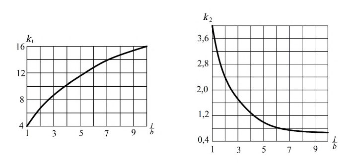
Рисунок 1 - Графики для определения коэффициентов k 1 и k 2
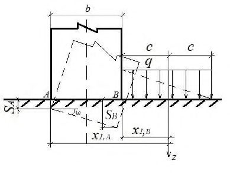
где SA , SB -осадки краев подошвы сооружений А и В (рисунок 2) при x 1, A = с + b и x 1, B = с ; b -размер подошвы сооружения, вдоль которой происходит крен;
2 с -ширина полосы пригрузки (рисунок 2).
Пригрузку допускается аппроксимировать прямоугольной, треугольной или трапецеидальной эпюрой в зависимости от формы засыпаемого котлована.
Рисунок 2 - Схема к определению крена сооружения от пригрузки
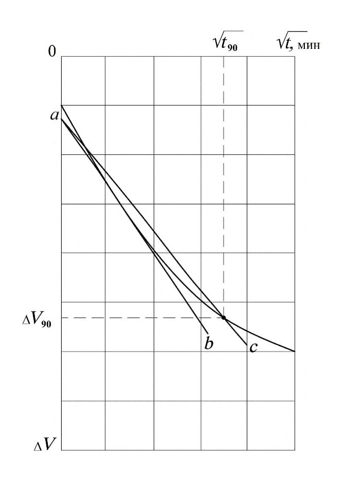
Для сооружений III -IV классов горизонтальные перемещения разрешено определять упрощенными методами для конечных горизонтальных перемещений.
где δ crp , δ1, crp , U 2 -см. формулу (30); u - конечное (стабилизированное) перемещение сооружения.
где u lim, pl -предельное перемещение штампа;
Аpl - площадь штампа;
A - площадь фундамента сооружения; ni - параметр, определяемый в соответствии с приложением Д.
12Контроль качества подготовки оснований гидротехнических сооружений
Основные положения
Контроль качества подготовки оснований, сложенных нескальными грунтами
- наблюдение за соблюдением принятой в проекте технологии подготовки основания;
- отбор проб и определение характеристик грунтов;
- проверку соответствия показателей физико-механических характеристик грунтов основания их проектным значениям.
Для каждой точки опробования должна выполняться планово-высотная геодезическая привязка.
Отбор проб производится по контрольным поперечникам и створам, принятым для контроля намытого грунта, а также в характерных местах между поперечниками при наличии, например, слабых грунтов.
Контроль качества подготовки оснований, сложенных скальными грунтами
СП 23.13330.2018 укладку противофильтрационного устройства плотины следует принимать по участкам (по сетке квадратов).
Контроль строительного водопонижения
Замеченные изменения должны отмечаться в журнале производства работ. О нарушениях следует сообщать проектной организации, заказчику и главному инженеру строительного подразделения для незамедлительного принятия соответствующих мер по их устранению.
Служба геотехнического контроля должна проводить наблюдения за расходом откачиваемой воды, снижением уровней (напоров) подземных вод на прилегающей территории, изменением химического состава, температурой откачиваемой воды, количеством выносимых водой твердых частиц.
Полученные данные наблюдений должны фиксироваться в журналах, где также следует отмечать наблюдающиеся во времени тенденции, выполнять сравнение фактических значений с критериальными показателями состояния основания (если эти показатели установлены по измеряемому параметру).
- пьезометры для определения скорости понижения грунтовых вод и положения депрессионной поверхности в период эксплуатации;
- реперы и марки для определения возможных деформаций территории и сооружений, находящихся в зоне влияния водопонижения;
- другое измерительное оборудование, необходимое для эксплуатации систем водопонижения (лотки для измерения расходов воды, шаблоны для определения изменений контуров откосов и т.п.).
Контроль качества работ по укреплению оснований
Комплекс исследований качества закрепления грунта выполняют непосредственно на закрепляемом участке (определяют осадку штампа, изучают структуру закрепленного грунта по шурфам и др.) или в лаборатории на образцах (монолитность, прочность).
Водопроницаемость закрепленного грунта определяют нагнетанием воды в контрольную скважину.
Если прочность закрепленного грунта окажется менее 90 % установленной проектом, а удельное водопоглощение -более 110 % проектного значения, качество закрепления грунта следует считать неудовлетворительным и необходимо провести дополнительное укрепление.
В журнале необходимо регистрировать: температуру теплоносителя в магистральных трубопроводах и колонках; показания водомеров и манометров, установленных на главных магистралях и отдельных колонках.
СП 23.13330.2018 активного замораживания снижаться до 1 °С. Отклонение от этого режима указывает на засорение системы питания колонок.
Для этого на всех участках следует брать пробы раствора и производить их лабораторный анализ.
При разработке траншей следует проводить непрерывное наблюдение за уровнем раствора и уровнем грунтовых вод, поскольку снижение первого из них или повышение второго может привести к обрушению откосов.
Контроль должен быть непрерывным как при приготовлении смеси, так и при ее укладке под бентонитовый раствор.
Отсыпку на прослойку из ГСМ вышележащего слоя грунта необходимо проводить с таким расчетом, чтобы материал находился под воздействием дневного света не более времени, допустимого для используемого ГСМ.
13Наблюдения за поведением оснований в процессе эксплуатации
Цели и задачи наблюдений за поведением оснований
СП 23.13330.2018 выявление направлений, периодичности, сезонности изменения наблюдаемой характеристики (например, раскрытия или смыкания трещин); оценка изменения активной зоны под сооружением с оценкой ее мощности и послойным (или поблочным) определением изменений характеристик свойств грунтов при вариациях УВБ и т.д.
На гидротехнических сооружениях I класса, расположенных в районах с сейсмичностью 7 баллов и выше, и на сооружениях II класса, расположенных в районах с сейсмичностью 8 баллов и выше, необходимо вести динамический паспорт сооружений и проводить специальные наблюдения и испытания в соответствии с ГОСТ Р 22.0.01 и ГОСТ Р 22.1.02.
В процессе строительства контроль осуществляется с помощью закладываемой КИА (датчиков порового давления, терморезисторов, датчиков изменения контактных напряжений и т.п.).
Задачи, объем и периодичность наблюдений, состав сети первоначально устанавливаются проектом и в дальнейшем могут быть изменены на основании результатов наблюдений, в зависимости от состояния гидротехнических сооружений. Эти изменения согласовываются с проектной организацией, которая разрабатывала проект сооружения.
- регистрировать уровни бьефов и среднесуточную температуру воздуха в створе гидроузла, ежедневно;
- обеспечивать достаточную частоту снятия отсчетов с приборов КИА в зависимости от интенсивности изменения нагрузок и воздействий. При высокой скорости наполнения и опорожнения водохранилища, резких температурных изменениях частота отсчетов датчиков, откликающихся на эти изменения, должна быть выше, чем в период медленно изменяющихся воздействий;
- фиксировать значения параметров, связанных между собой причинно-следственными зависимостями (УВБ -пьезометрические уровни, противодавление -фильтрационный расход и т.д.) в течение как можно более короткого временного интервала;
- обеспечивать достоверность показаний КИА и достаточную квалификацию специалистов.
Наблюдения должны проводиться за:
- деформациями основания и раскрытием трещин на контакте с сооружениями;
- противодавлением под сооружением;
- значением фильтрационных расходов;
- состоянием бортовых примыканий.
Состав и объем натурных наблюдений за основаниями ГТС в общем случае следует назначать в зависимости от класса сооружения, его конструктивных особенностей, инженерно-геологических, климатических, сейсмических условий, условий возведения и эксплуатации.
Регулярные инструментальные и визуальные натурные наблюдения за основаниями гидротехнических сооружений должны проводиться в режиме мониторинга в сроки и с периодичностью, определяемыми программой наблюдений.
В состав инструментальных натурных наблюдений должны быть включены все наблюдения за основанием конкретного сооружения в соответствии с перечнем диагностических показателей, характеризующих его работу и техническое состояние, контролируемые значения которых могут измеряться стационарной КИА и (или) переносными приборами.
Состав и объем натурных наблюдений за основаниями сооружений и природной средой в зоне взаимодействия с сооружением определяются в проекте мониторинга на основании сценариев возникновения чрезвычайных и аварийных ситуаций с целью своевременного их предотвращения.
Натурными наблюдениями за основаниями грунтовых сооружений (плотин и дамб) необходимо оценивать: фильтрационный режим основания, береговых примыканий; общие и относительные осадки и перемещения; поровое давление в глинистых грунтах; фильтрационную прочность грунтов основания и береговых примыканий; температурный режим основания, берегов и водохранилища (в криолитозоне); напряженно-деформированное состояние; выявление и оценку выходов фильтрации в основании и берегах; регистрацию и оценку очагов фильтрационно-суффозионных выносов грунта из основания, береговых и пойменных массивов, примыкающих к сооружениям; контроль за работой и состоянием дренажей, водоотводящих выпусков, канав и кюветов.
Контрольно-измерительная аппаратура
В состав КИА должны включаться измерительные приборы (датчики, преобразователи) серийного (промышленного) типа, прошедшие метрологическую аттестацию и сертификацию, удовлетворяющие требованиям по точности и диапазону измерений, долговременной стабильности.
При наличии доступа необходимо предусматривать периодическое выполнение вручную контрольных измерений тех параметров, регистрация значений которых проводится автоматически -опросом приборов КИА.
В проекте инструментальных натурных наблюдений должны быть предусмотрены меры по защите от повреждений КИА, кабельных линий от установленных в сооружение
СП 23.13330.2018 измерительных приборов и измерительных пультов, необходимые меры по обеспечению безопасного производства работ при проведении измерений.
Приборы не промышленного изготовления, используемые в качестве измерительных устройств, не требующих метрологической аттестации, должны быть с широкой апробацией на практике (трубные пьезометры, механические щелемеры, геодезические марки и реперы, ленты, рейки и т.п.).
Для обеспечения достоверности показаний КИА, не требующей метрологической аттестации, необходимо проводить периодические проверки ее работоспособности.
При назначении номенклатуры и количества КИА в основаниях должны быть удовлетворены требования по необходимой представительности, достоверности и сравнимости результатов инструментальных наблюдений.
Приборы и устройства, предназначенные для проведения натурных наблюдений за основанием, размещаются в контрольных сечениях по всей длине сооружения с учетом его конструктивных решений, инженерно-геологических и геокриологических особенностей и профиля поверхности основания.
Число контрольных сечений по длине основания назначается с таким расчетом, чтобы по показаниям установленной в них КИА можно было с достаточной точностью характеризовать работу и состояние основания в целом и отдельных наиболее ответственных участков и элементов.
Режим наблюдений за поведением оснований в процессе эксплуатации гидротехнических сооружений
Для каждого конкретного основания ГТС периодичность регулярных натурных наблюдений устанавливается индивидуально с учетом инженерно-геологических, гидрогеологических, геокриологических условий, компоновочных и конструктивных особенностей сооружений, характера реакции сооружения и его основания на нагрузки и воздействия, наличия (отсутствия) и интенсивности развития неблагоприятных для сооружения процессов или повреждений, условий эксплуатации.
Объем и периодичность натурных наблюдений и состав контрольно-измерительной аппаратуры, устанавливаемой на ГТС, должны определяться проектной документацией.
В полном объеме наблюдения по КИА должны продолжаться после наполнения водохранилища до стабилизации деформаций основания и характеристик фильтрационного потока, но не менее 5 лет. После этого наблюдения могут проводиться по сокращенному числу точек и с меньшей частотой. Изменения в периодичности циклов измерений после выхода работы сооружения на установившийся режим и отсутствии аномальных явлений или процессов должны производиться на основании анализа работы сооружения, выполненного проектной или специализированной научно-исследовательской организацией с учетом соответствия работы и технического состояния сооружений требованиям проекта, критериям безопасности, а также степени информативности получаемых данных наблюдений.
Если в работе гидротехнического сооружения наблюдаются проявление и интенсивное развитие опасных процессов (появление сосредоточенных очагов фильтрации; развитие суффозионного выноса грунта, просадочных и оползневых явлений; образование опасных трещин; резкие повышения фильтрационных напоров, расходов и градиентов напора, интенсификация осадок или горизонтальных смещений, раскрытия швов и трещин), измерения по КИА и визуальные осмотры сооружения должны проводиться при необходимости ежедневно или несколько раз в сутки, вплоть до выяснения причин возникновения указанных процессов и реализации оперативных инженерных решений по их ликвидации.
Внеочередные циклы измерений по КИА и визуальных осмотров сооружений должны проводиться: после прохождения катастрофических паводков; землетрясений более 5 баллов; сильных штормов (ураганов); форсирования уровня верхнего бьефа выше проектного; перемерзания дренажных устройств.
Первичная обработка данных мониторинга должна заключаться в переводе показаний КИА и измерительных устройств в физические величины контролируемых показателей основания (например, напряжения, напор, расход, температура, смещения и др.), в выявлении ошибок измерений и в оперативном занесении полученной обработанной информации в базы данных информационно-диагностической системы (компьютер пользователя).
Информационно-диагностическая система должна создаваться на базе современных компьютерных и информационных технологий и программно-технического обеспечения.
Вторичная обработка введенной в информационно-диагностическую систему мониторинга информации о выполненных измерениях по КИА должна проводиться с использованием программного комплекса.
Результаты вторичной обработки данных мониторинга должны быть представлены в виде таблиц, графиков изменения контролируемых показателей во времени и от действующих нагрузок, эпюр распределения значений показателей (напряжений, прогибов, осадок, смещений, напоров, температуры и др.) в пределах контрольных створов, секций, измерительных сечений.
Методы наблюдений за поведением оснований
СП 23.13330.2018 для определения направления и скорости движения подземных вод -водорежимные наблюдения методами резистивиметрии (РЗМ), термометрии (ТМ), радиоизотопными методами в одной или нескольких скважинах, а также модификацией метода заряженного тела (МЗТ); для наблюдений за разгрузкой подземных и техногенных вод, очагов фильтрации -методы естественного электрического поля (ЕП), вертикальное электрическое зондирование (ВЭЗ), метод вызванной поляризации (ВП), резистивиметрии, термометрии; для наблюдений за изменением глубины сезонного промерзания и протаивания -ВЭЗ, КМПВ, ГРЛЗ, различные виды каротажа; для наблюдений за изменением напряженного состояния, трещинообразований -КМПВ, сейсмопросвечивание, метод акустической эмиссии (АЭ), ультразвуковой каротаж (УЗК), георадарные исследования; для выявления, наблюдения и прогноза смещения масс горных пород -методы КМПВ, ВЭЗ и электропрофилирования (ЭП) в модификациях векторных и режимных наблюдений, а также метод АЭ; для изучения опасных инженерно-геологических процессов (карстовых, термокарстовых провалов, оползней) - методы КМПВ, общей глубинной точки (ОГТ), ВЭЗ, ЭП, метод двух составляющих (МДС), ВП, МЗТ, ГРЛЗ.
Рекомендуется выполнять точечные зондирования или зондирования по отрезкам профилей с определением скорости продольных (желательно также поперечных) волн, сейсмический или ультразвуковой каротаж, межскважинное просвечивание. Также целесообразно применять радиоизотопный каротаж скважин (гамма-гамма-каротаж для оценки плотности, нейтрон-гамма-каротаж для оценки влажности).
Геофильтрационные наблюдения должны включать: уточнения проектных представлений об условиях фильтрации и ее воздействиях на основание; выявление и оценку выходов воды через основание и примыкания плотин; выявление, характеристику и оценку изменений силового давления подземных вод в зоне взаимодействия оснований и сооружений; выявление, характеристику и оценку изменений режима и состава подземных вод при развитии техноприродных процессов в зоне взаимодействия оснований и сооружений; контроль эффективности создаваемых противофильтрационных и дренажных устройств, обоснование целесообразных дополнений и изменений их конструкций; наблюдения за уровнями, расходами, температурой и химическим составом подземных вод, а также гидродинамические исследования в наблюдательных скважинах и дренажных устройствах оснований; индикаторные и индикационно-диагностические методы определения путей и скоростей движения подземных вод, опознавания различных типов этих вод, выявления зон их питания и разгрузки, в том числе зон активной инфильтрации на дне водохранилища; гидрохимические методы в зоне взаимодействия природных подземных вод с водами фильтрационного потока из водохранилища, процессов выщелачивания и растворения пород основания, бетонных конструкций и инъекционных завес в подземном контуре сооружений; специальные термометрические методы для выявления зон активной фильтрации, изучения динамики фильтрационных процессов и др.
Геотехнические наблюдения должны включать: описание, зарисовку и фотографирование грунта, извлекаемого из горно-буровых выработок; отбор проб ненарушенного и нарушенного сложений из горно-буровых выработок (ГОСТ 12071); лабораторное и полевое изучение состава и свойств грунтов.
Геотермические наблюдения должны включать: режимные измерения температуры грунтов основания по сети геотермических скважин, оборудованных комплектами (гирляндами) термодатчиков (терморезисторов, термометров сопротивления); геофизические исследования комплексом методов для уточнения границ раздела мерзлых и талых зон в основании и физико-механических свойств грунтов в их пределах.
14Инженерные мероприятия по обеспечению надежности оснований
Обеспечение сопряжения сооружения с основанием
14.4Разработка глубокого котлована
СП 23.13330.2018 по водообустройству прилегающей территории для защиты котлована (открытых выработок) от вторичного обводнения.
Необходимость указанных мероприятий обосновывается по результатам анализа гидрометеорологических, гидрогеологических условий площадки строительства, физикомеханических и фильтрационных характеристик грунтов основания, результатов фильтрационных расчетов (выполненных с учетом раздела 8) и прогноза изменений гидрогеологического режима площадки на этапе строительства, который выполняют путем математического моделирования фильтрационных процессов численными методами. При обеспечении безопасных условий эксплуатации разрешено применение аналитических методов и использование результатов наблюдений по объектам-аналогам.
На эксплуатационный период при наличии экономической целесообразности следует предусматривать инженерные мероприятия по снижению приточности к дренажу оснований за счет противофильтрационных мероприятий с проектированием специальных противофильтрационных экранов из инертных геосинтетических и иных маловодопроницаемых или водонепроницаемых материалов.
Расчетные характеристики ГСМ определяются лабораторными испытаниями, а также на экспериментальных моделях и опытных полигонах при проектных нагрузках, действующих на расположенный между слоями грунтового материала ГСМ, включая направление движения и интенсивность фильтрационного потока, степень сжатия материала, возможность его промерзания, воздействия химически и биологически опасных сред, характеристики контактирующих с ГСМ грунтовых и негрунтовых материалов и др.
Все мероприятия должны назначаться с учетом длительности каждого этапа существования котлована: разработка, открытый котлован, строительство сооружения, засыпка пазух котлована, эксплуатационный период.
Примечания
1 При гидротехническом строительстве в северной строительно-климатической зоне под термином «принцип строительства» понимается следующее: принцип строительства I : Многолетнемерзлые грунты основания плотины сохраняются в мерзлом состоянии при ее строительстве и эксплуатации, а талые грунты противофильтрационного устройства плотины и ее основания замораживаются до начала заполнения водохранилища и сохраняются в мерзлом состоянии при эксплуатации; принцип строительства II : Допускается оттаивание многолетнемерзлых грунтов основания в ходе строительства и эксплуатации плотины или искусственное их оттаивание на заданную глубину до начала заполнения водохранилища.
2 Принцип строительства (с сохранением или оттаиванием многолетнемерзлых грунтов) следует выбирать с учетом климатических и мерзлотных условий района строительства на основании технико-экономического анализа.
- снижение противодавления в основании подпорных сооружений и береговых массивов примыканий;
- создание уклона в сторону верхнего бьефа на контакте сооружения с основанием, сложенным скальными и полускальными грунтами с относительно низкими прочностными характеристиками контакта бетон-скала;
- создание упора в основании со стороны нижнего бьефа в случае наличия более прочных грунтов под носком плотины или передачи части усилия от плотины на здание ГЭС, на конструкции водобойного колодца и т.д.;
- применение конструкций, обеспечивающих наиболее благоприятное направление усилий и воздействий на основание и береговые примыкания сооружения;
- анкеровку секций сооружения и береговых примыканий при наличии достаточно прочных грунтов в основании;
- инъекционное укрепление грунтов основания при достаточно развитой трещиноватости массива при отсутствии глинистого заполнителя трещин;
- цементацию крупных геологических нарушений в основании плотины и их выходов на поверхность и другие конструктивные мероприятия.
При недостаточной технико-экономической эффективности указанных мероприятий должно быть предусмотрено заглубление подошвы сооружения в более сохранную зону скальных грунтов.
СП 23.13330.2018 устройство верхового и низового зубьев, уклон подошвы сооружения в сторону верхнего бьефа; дренирование малопроницаемых слоев основания; механическое и инъекционное уплотнение и укрепление грунтов и другие мероприятия.
При этом должны быть разработаны и обоснованы мероприятия, предотвращающие недопустимые деформации, потерю устойчивости сооружений и недопустимые фильтрационные расходы.
Подготовку оснований следует производить в осушенном (дренированном) котловане, не допуская разуплотнения и разжижения верхнего слоя грунта.
Следует также предусматривать следующие мероприятия: устройство бетонной плиты, покрытие скалы торкретом, инъекционное уплотнение части основания, прилегающей к подошве водонепроницаемого элемента.
При проектировании сооружений с сохранением мерзлых грунтов в основании (принцип строительства I) следует предусматривать в необходимых случаях теплозащитный слой, убираемый непосредственно перед укладкой материала приконтактной зоны сооружения.
При этом глубину заложения подошвы сооружений следует принимать минимально возможной с учетом: особенностей сооружений; гидрогеологических, геологических, топографических и климатических условий площадки строительства; размыва грунтов в нижнем бьефе; судоходных уровней воды и др.
СП 23.13330.2018 удаление интенсивно выветрелых грунтов (разборного слоя) с низкими прочностными и деформационными характеристиками и слабо поддающихся омоноличиванию из-за наличия глинистого заполнителя в трещинах; для оснований с крупными нарушениями и областями глубокого избирательного выветривания -удаление грунта, объем которого следует принимать на основе результатов расчетов напряженного состояния и устойчивости сооружения.
Закрепление и уплотнение грунтов оснований
Для этого могут быть использованы цементация, химические методы закрепления, замораживание грунтов, механическое уплотнение, дренирование массива, устройство набивных свай, методы ускорения консолидации слабых оснований с использованием современных ГСМ в качестве вертикальных дрен, методы повышения прочностных и деформационных характеристик оснований с применением армирующих ГСМ и т.д.
Для сооружений III -IV классов на всех стадиях проектирования, для сооружений I -II классов на стадии обоснования инвестиций способы и объемы работ по укреплению основания допускается устанавливать по аналогам.
АПриложение А. Классификация массивов грунтов
Таблица А.1 Классификация по трещиноватости скальных массивов
| Степень трещиноватости | Модуль трещиноватости М i | Показатель качества породы RQD ,% | Коэффициент трещинной пустотности K ТП ,% | Объем породных блоков, дм³ | Относительная деформируемость E / E Б ,% | Относительная скорость упругих волн υ p / υ p , Б ,% | Ширина раскрытия трещин, мм | Размер ребра блока, м |
|---|---|---|---|---|---|---|---|---|
| Очень слаботрещиноватые | < 1,5 | > 90 | < 0,1 | Тысячи | > 70 | > 60 | Менее 0,5 | Более 1,5 |
| Слаботрещиноватые | 1,5 - 5 | 75 - 90 | 0,1 - 0,5 | Сотни | 50 - 70 | 60 - 30 | 0,5 - 1 | 0,5 - 1,5 |
| Среднетрещиноватые | 5 - 10 | 50 - 75 | 0,5 - 2,0 | Десятки | 25 - 50 | 30 - 10 | 1 - 5 | 0,3 - 0,5 |
| Сильнотрещиноватые | 10 - 30 | 25 - 50 | 2,0 - 5,0 | Единицы | 10 - 25 | 10 - 3 | 5 - 10 | 0,1 - 0,3 |
| Очень сильнотрещиноватые | > 30 | 0 - 25 | > 5 | Доли единиц | 3 - 10 | < 3 | Более 10 | Менее 0,1 |
Условные обозначения:
Mi -число трещин на 1 м линии измерения нормально главной или главным системам трещин;
RQD -отношение общей длины сохранных кусков керна длиной более 10 см к длине пробуренного интервала в скважине;
K ТП -отношение суммарной площади трещин к площади породы;
E , υ р ,Б -то же, в породном блоке (отдельности).
Примечание - Слаботрещиноватые и очень сильнотрещиноватые массивы рекомендуется характеризовать одним значением Mi , относящимся к любой системе трещин. Средне- и сильнотрещиноватые массивы могут характеризоваться несколькими значениями Mi , относящимися к различным главным системам трещин.
Таблица А.2 Классификация скальных массивов по водопроницаемости
| Степень водопроницаемости | Коэффициент фильтрации k , м/сут | Удельное водопоглощение q , л/мин м² |
|---|---|---|
| Практически водонепроницаемые | < 0,005 | < 0,01 |
| Слабоводопроницаемые | 0,005 - 0,3 | 0,01 - 0,1 |
| Водопроницаемые | 0,3 - 3 | 0,1 - 1 |
| Сильноводопроницаемые | 3 - 30 | 1 - 10 |
| Очень сильноводопроницаемые | > 30 | > 10 |
Таблица А.3 Классификация скальных грунтов по деформируемости
| Степень деформируемости | Модуль деформации массива Е , МПа |
|---|---|
| Очень слабодеформируемые | > 20000 |
| Слабодеформируемые | 10000 - 20000 |
| Среднедеформируемые | 5000 - 10000 |
| Сильнодеформируемые | 2000 - 5000 |
| Очень сильнодеформируемые | < 2000 |
Классификация скальных грунтов по пределу прочности на одноосное сжатие
По пределу прочности на одноосное сжатие Rc в водонасыщенном состоянии скальные грунты подразделяют на разновидности в соответствии с таблицей Б.1 ГОСТ 25100 -2011.
Таблица А.4 Классификация скальных массивов по степени выветрелости
| Степень выветрелости | Коэффициент выветрелости K w | Коэффициент трещинной пустотности K ТП ,% | Раскрытие трещин Δ а , мм |
|---|---|---|---|
| Сильновыветрелые | < 0,8 | > 3 | > 5 |
| Выветрелые | 0,8 - 0,9 | 3 - 1 | 1 - 5 |
| Слабовыветрелые | 0,9 - 1,0 | 1 - 0,5 | 0,5 - 1 |
| Невыветрелые | 1,0 | < 0,5 | 0,1 - 0,5 |
Kw -отношение плотности выветрелого образца грунта к плотности невыветрелого образца того же грунта.
Примечание -Степень выветрелости скального грунта тесно связана с разгрузкой скального массива. По степени развития этих явлений скальные массивы по мере их заглубления от дневной поверхности рекомендуется разделять на четыре зоны (или подзоны), которые кроме указанных в настоящей таблице показателей характеризуются также следующим: зона А сильного выветривания (элювиирования) -обычно сложена малопрочными породными блоками существенно измененного химико-минерального состава и имеет большее число разноориентированных трещин, как правило, заполненных рыхлыми продуктами выветривания материнской породы или привнесенным мелкоземом; зона Б средней степени разгрузки и выветривания -с заметно измененной окраской, но малоизмененным минеральным и химическим составом породных блоков, учащенными и расширенными трещинами с заполнителем из мелкозема и местным интенсивным избирательным выветриванием; зона В слабой разгрузки и выветривания -характеризуется несколько бóльшим, чем в неизмененном массиве, числом трещин и наличием вдоль некоторых трещин слабого избирательного выветривания; зона Г -не затронута разгрузкой и выветриванием.
Таблица А.5 Классификация по характеру нарушения сплошности скального массива
| Характер нарушения сплошности массива | Мощность зоны дробления разломов или ширина трещин | Протяженность нарушения |
|---|---|---|
| Разломы I порядка - глубинные, сейсмогенные Разломы II порядка - глубинные, несейсмогенные и частично сейсмогенные Разломы III порядка Разломы IV порядка Крупные трещины V порядка Средние трещины VI порядка | Сотни и тысячи метров Десятки и сотни метров Метры и десятки метров Десятки и сотни сантиметров Св. 20 мм 10 - 20 мм | Сотни и тысячи километров Десятки и сотни километров Километры и десятки километров Сотни и тысячи метров Св. 10 м 1 - 10 м |
Классификация скальных массивов по характеру сложения
По характеру сложения целесообразно выделять следующие категории массивов: массивные крупноблочные (слабо расчлененные, плохо поддающиеся избирательному выветриванию); блочные (с четко выраженным расчленением на отдельности, ограниченные поверхностями ослабления, выветриваются преимущественно избирательно); слоистые (с преобладающей системой трещин, неравномерно избирательно выветривающиеся); плитчатые (сильно расчлененные, легко поддающиеся неравномерному избирательному выветриванию).
Классификация скальных массивов по степени однородности
По степени однородности рекомендуется выделять следующие категории массивов: однородные (квазиоднородные), сложенные одним типом пород, изменение значений характеристик которого по каждому классификационному признаку не выходит за пределы, соответствующие одной категории (т.е. указанные в одной строке в таблицах А.1 -А.4); неоднородные, сложенные несколькими различными типами пород или содержащие отдельные зоны, значения характеристик которых по всем или некоторым классификационным признакам варьируются в пределах, соответствующих двум категориям; очень неоднородные, сложенные несколькими различными типами пород и содержащие отдельные зоны, значения характеристик в которых по всем или по большинству признаков варьируются в пределах, соответствующих трем или даже всем четырем категориям.
Таблица А.6 Классификация по льдистости грунтов
СП 23.13330.2018
| Разновидность грунта | Льдистость грунта за счет видимых ледяных включений i i , % | Льдистость грунта за счет видимых ледяных включений i i , % |
|---|---|---|
| скального | нескального | |
| Очень слабольдистый | < 0,1 | < 3 |
| Слабольдистый | 0,1 - 0.5 | 3 - 20 |
| Льдистый | 0,5 - 1,0 | 20 - 40 |
| Сильнольдистый | 1 - 5 | 40 - 60 |
| Очень сильнольдистый | > 5 | > 60 |
Классификация мерзлых грунтов по степени цементации их льдом
Рекомендуется выделять следующие категории мерзлых грунтов: твердомерзлые грунты -прочно сцементированные льдом, характеризующиеся относительно хрупким разрушением и температурой, указанной в таблице А.7; пластичномерзлые грунты - сцементированные льдом, обладающие вязкими свойствами и температурой, указанной в таблице А.7; сыпучемерзлые грунты - крупнообломочные и песчаные, не сцементированные льдом вследствие малой их влажности.
Таблица А.7 -Классификация мерзлых грунтов по степени цементации их льдом
| Разновидность грунта | Разновидность грунта | Разновидность грунта | |
|---|---|---|---|
| Вид грунтов | твердомерзлый при t < t T , °С | пластичномерзлый при t , °C | сыпучемерзлый при t < 0, °С |
| Скальные и полускальные | t T = 0 | - | - |
| Крупнообломочные | t T = 0 | - | - |
| Пески гравелистые, крупные и средней крупности | t T = 0,1 | t T < t < t H3 | S r ≤ 0,15 |
| Пески мелкие и пылеватые | t T < -0,3 | t T < t < t H3 при S r > 0,8 | |
| Глинистые Супесь | t T ≤ -0,6 | ||
| Суглинок | t T ≤ -1,0 | t T < t < t H3 | - |
| Глина | t T ≤ -1,5 | ||
| Заторфованный | t 1 T = -0,7( J r + t T ) | t T < t < t H3 | - |
| Торф | - | t < 0 | - |
Обозначения: t T -температура границы твердомерзлого состояния минеральных грунтов; t 1 T -то же, для заторфованных грунтов; t H3 -температура начала замерзания;
Jr -относительное содержание органического вещества;
Sr -коэффициент водонасыщения, д.е.; при t < 0 и Sr 0,15 скальные, полускальные и крупнообломочные грунты классифицируются как морозные.
БПриложение Б. Определение параметров внутреннего трения (tgφ ' , с' ), коэффициента консолидации cv и коэффициента начального порового давления Ku методом трехосного сжатия
Определение параметров внутреннего трения (tgφ ' , с' ), коэффициента фильтрационной консолидации сv и коэффициента начального порового давления Ku методом трехосного сжатия, давления предварительного уплотнения р'с методом компрессионного сжатия и коэффициента переуплотнения OCR
Б.1Подготовка образца грунта к испытанию
Б.1.1 Для приведения образца грунта в состояние, соответствующее условиям его природного залегания по величине эффективных напряжений в скелете грунта и величине порового давления, выполняется комплекс мероприятий, именуемый этапом реконсолидации.
Б.1.2 Этапу реконсолидации образца грунта должен предшествовать расчет напряжений, действовавших на образец в условиях естественного залегания: полного вертикального σ1,0 и полного горизонтального σ3,0 напряжений. Индекс «0» означает, что значение параметра относится к условиям естественного залегания.
Максимальные значения полных напряжений следует назначать с учетом возможностей оборудования: допустимого давления в камере прибора и максимального усилия пресса, создающего осевое напряжение. При определении показателей механических свойств грунтов напряженное состояние оценивается в эффективных напряжениях σ ' 1,3 , определяемых по формуле
где u -поровое давление, σ1,3 -полные напряжения.
Природное поровое давление в исследуемом слое грунтового массива (основания) рассчитывается по формуле
где u 0 -поровое давление в массиве на отметке отбора монолита, кПа; ρw -плотность поровой воды, т/м³ ; g -ускорение силы тяжести, м/с 2 ; zw -глубина залегания образца грунта от положения уровня грунтовых вод, м.
Природное эффективное вертикальное напряжение рассчитывается по формуле
где ρ -плотность грунта, т/м³ ; σ'1,0 -эффективное вертикальное напряжение, кПа; z - глубина залегания образца грунта от поверхности грунта, м.
При отборе образцов из грунтового массива, расположенного на дне речной или морской акватории, к поровому давлению необходимо добавлять давление воды (давление столба воды) на уровне поверхности грунта, а грунтовый массив считать полностью водонасыщенным ( zw = z ).
При испытаниях образцов грунта с больших глубин допускается ограничивать расчетное поровое давление u 0 значением 300 кПа, при котором обеспечивается практически полное растворение газообразной составляющей.
Эффективное горизонтальное напряжение в условиях естественного залегания σ'3,0 определяется формулой
где k 0 - коэффициент бокового давления (принимается по таблице Б.1).
Таблица Б.1
| Грунт | Значение k 0 |
|---|---|
| Песок | 0,35 - 0,55 |
| Супесь | 0,40 - 0,55 |
| Суглинок | 0,50 - 0,60 |
| Глина: | |
| при I L ≤ 0,25, | 0,33 - 0,60 |
| при 0,25< I L ≤ 1,0 | 0,60 - 0,82 |
Примечания
1 Вычисление порового давления u 0, эффективных вертикального σ'1,0 и горизонтального σ'3,0 напряжений в массиве может производиться с учетом наличия в основании относительного водоупора (слоев глинистых грунтов с низкими значениями коэффициента фильтрации). В этом случае эффективные вертикальные напряжения по кровле водопроницаемого слоя, лежащего ниже водоупора. равны полным напряжениям на подошве перекрывающего его водоупорного слоя.
- 2 Для илов и текучепластичных глинистых грунтов можно принять k 0 = 1,0.
- 3 В существенно переуплотненных грунтах (при OCR > 4) следует принимать k 0 ≥ 1,0.
Б.2Этап реконсолидации образца
Б.2.1 При проведении испытаний в системе противодавления следует использовать деаэрированную воду. При установке образца в камеру прибора следует исключать защемление воздуха в контактах поверхности образца с эластичной оболочкой и с верхним и нижним штампами. Для этого до установки образца систему трубок, подводящих воду к штампам, и отверстия в штампах следует заполнять деаэрированной водой до появления ее на поверхности штампов и вытеснения пузырьков воздуха. Для исключения защемления воздуха между образцом и эластичной оболочкой рекомендуется: а) при испытаниях неразмокающих и ненабухающих грунтов -поместить образец в контейнер с деаэрированной водой на 1 -2 мин; б) при испытаниях образцов слабых или набухающих грунтов -обязательно поместить в контейнер с деаэрированной водой резиновую оболочку непосредственно перед ее установкой на образец; в) при испытаниях грунтов в приборах со встроенной эластичной оболочкой -обеспечить заполнение зазора между грунтом и оболочкой деаэрированной водой.
Б.2.2 По завершении установки образца, установки и заполнения камеры прибора, установки и подключения измерительных систем, дренаж из образца перекрывается и производится повышение среднего давления в камере прибора σ до значения σ'3,0, рассчитанного по формуле (Б.4).
Повышение давления в камере прибора а производится ступенями Δσ1 = Δσ3.
Величина ступеней должна быть не более 20 -50 кПа (для грунтов твердой консистенции величина ступеней может быть увеличена до 100 -200 кПа). Выдержка на каждой ступени нагружения составляет не менее 15 мин. Одновременно производится измерение порового давления в образце. На каждой ступени нагружения определяется значение параметра В = Δ u/ Δσ, где Δ u - приращение давления в поровой воде при увеличении среднего давления на ступень Δσ.
Б.2.3 По достижении полными напряжениями σ1 = σ3 значений σ'3,0 в зависимости от величины возникающего порового давления должны производиться действия согласно Б.2.4 - Б.2.7.
Б.2.4 Если после достижения полными напряжениями σ1 = σ3 значений σ'3,0 поровое давление практически отсутствует u ≤ 0 (значение параметра В на последней ступени < 0,3), то определяется отношение коэффициента водонасыщения грунта Sr к расчетному значению Sr , p . Если отношение Sr/Sr , p ≥ 0,95, то этап реконсолидации считается завершенным.
Если Sr/Sr , p < 0,95, реконсолидация продолжается по методу противодавления. Система противодавления открывается и производится одновременное увеличение полных напряжений σ1 = σ3 и порового давления в образце (принудительно) на величину ступени Δσ = Δu. Производится измерение давления поровой жидкости на противоположном торце образца u' . Значения σ и u поддерживаются постоянными до тех пор, пока разность u-u' не уменьшается до 5 % Δ u . Если измерение порового давления на противоположном торце образца невозможно, то выдержка во времени определяется стабилизацией уровня жидкости в системе противодавления (или отсутствием потока жидкости в образец грунта). Процедура ступенчатого повышения полного давления в камере прибора и порового давления продолжается до достижения поровым давлением значения u 0 в условиях естественного залегания. Величина ступеней Δ u = Δσ в этой процедуре должна быть не более 50 кПа. На этом этап реконсолидации считается законченным.
Б.2.5 Если после достижения полными напряжениями σ1 = σ3 значений σ'3,0 в образце грунта возникло поровое давление 0 < u < u 0 и значение параметра В на последней ступени нагружения превышает значение 0,3, то продолжается ступенчатое повышение среднего полного напряжения σ (σ1 = σ3) в условиях закрытой системы с обязательным измерением порового давления u . Повышение полных напряжений σ1 = σ3 производится до тех пор, пока: а) эффективные напряжения в образце σ'1 = σ'3 = (σ3 u ) не будут равны эффективному горизонтальному напряжению в основании σ'3,0 и при этом поровое давление в образце u не превзойдет расчетного значения u 0; или б) поровое давление u достигнет расчетного значения u 0 (при этом эффективные напряжения σ'1 = σ'3 не превзойдут расчетного значения σ'3,0). Величина ступеней Δσ1 = Δσ3 должна быть не более 50 кПа (для грунтов твердой консистенции величина ступеней нагружения может быть увеличена до 100 -200 кПа), выдержка на каждой ступени приращения напряжений составляет не менее 15 мин.
Б.2.6 В случае, если при операциях по Б.2.5 σ'1 = σ'3 = σ'3,0 u < u 0, то в системе противодавления создается давление u 0 и дренаж открывается, дальнейшая реконсолидация выполняется по методу противодавления (Б.2.3) до завершения этапа реконсолидации (σ'1 = σ'3 = σ'3,0; u = u 0; σ1 = σ3 = σ'3,0 + u 0).
В случае если при операциях по Б.2.5 получилось u = u 0, σ1 = σ3 < σ3,0, то в системе противодавления создается давление u 0 и дренаж открывается. Производится ступенчатое увеличение полных напряжений до значений σ1 = σ3 = σ'3,0 + u 0. Величина ступеней Δσ1 = Δσ3 должна быть не более 50 кПа. Выдержка во времени на каждой ступени определяется по стабилизации деформаций в образце (может контролироваться по стабилизации уровня (потока) жидкости в системе противодавления).
Б.2.7 При проведении испытаний охлажденных грунтов процесс реконсолидации по эффективным напряжениям и поровому давлению должен сопровождаться термостатированием при заданном значении температуры.
Консолидированно-недренированные испытания
Б.3 Консолидированно-недренированные испытания служат для определения: эффективного угла внутреннего трения φ'; эффективного сцепления c' ; коэффициента фильтрационной консолидации cv ; коэффициента начального порового давления Ku .
Для всех испытуемых грунтов необходимо определять физические характеристики и гранулометрический состав.
Б.4 Консолидация проводится при постоянном противодавлении, достигнутом на этапе реконсолидации. Давления консолидации (разность между давлением в камере и противодавлением) для образцов грунта одного монолита должны включать указанный в задании диапазон строительных нагрузок и выбираться так, чтобы давления σ'3 по
СП 23.13330.2018 завершении консолидации отличались друг от друга на 40 % -50 % значения σ'3,0 в точке отбора монолита, но не менее чем на 20 кПа для мягко- и текучепластичных глинистых грунтов (0,5 < IL < 1) и на 50 кПа для грунтов более твердых консистенций. Противодавление устанавливается равным u = u 0 или ниже с тем, чтобы давление, устанавливаемое при консолидации, не превысило допускаемого конструкцией камеры прибора.
Допускаемое снижение противодавления ограничивается значением порового давления, при котором на этапе реконсолидации параметр В становится больше 0,95 (достигается полное водонасыщение образца и растворение газовой фазы).
Б.5 В начале испытания (после завершения этапа реконсолидации) перекрывается дренаж из образца и производится повышение среднего полного напряжения на образец ступенями Δσ1 = Δσ3, не превышающими 50 кПа. Конечное значение полных напряжений определяется значением σ'1,0 + σ'c, где σ'c -вертикальное напряжение на глубине отбора монолита от строительной пригрузки от сооружения. Значения σ'c определяются, например, в соответствии с К.2 (приложение К).
Значение σ'c при испытаниях может быть увеличено или уменьшено для выполнения требований Б.4. На каждой ступени нагружения производится выдержка не менее 15 мин и измеряется поровое давление.
Для неполностью водонасыщенных грунтов (содержащих нерастворенный газ, В < 0,95) после этапа реконсолидации и по результатам испытаний по настоящему пункту для каждого испытания определяется частное значение коэффициента начального порового давления Ки как отношение суммарного приращения порового давления Δ u за время приложения напряжений σ0 = (σ'1,0 + σ'c) к значению σ0
Нормативное и равное ему расчетное значение коэффициента порового давления ( Ku n = Ku ) определяется как среднее арифметическое его частных значений.
Б.6 Задача этапа консолидации -в условиях открытого дренажа привести образец в равновесное состояние по эффективным напряжениям, при которых требуется определить прочностные характеристики, а также деформационные - модуль объемного сжатия. Для глинистых грунтов данные, полученные на этой стадии, используются для определения коэффициента фильтрационной консолидации cv , а также для расчета скорости деформирования образца на этапе разрушения (сдвига). Консолидация проводится при постоянном значении противодавления, соответствующем природным условиям залегания грунта (если в программе испытаний нет других указаний).
Б.7 Этап консолидации выполняется открытием системы противодавления. Объемная деформация образца в ходе консолидации определяется с помощью системы противодавления измерением объема вытесненной из образца поровой жидкости. Измерение объема вытесненной жидкости (а при необходимости и значения порового давления) производится с постепенным увеличением интервалов времени между отсчетами, например, через 0,2, 0,5, 1, 2, 5, 10, 15 и 30 мин, через 1, 2, 4 и 8 ч и далее в начале и конце каждой смены.
При проведении консолидации рекомендуется применять односторонний или двусторонний торцевой дренаж с учетом конструктивных возможностей приборов и программы экспериментов.
При одностороннем дренаже и при наличии датчика порового давления на торце, противоположном от дренируемого, контроль процесса консолидации допускается вести по поровому давлению. Критерий условной стабилизации в этом случае -выравнивание порового давления с противодавлением.
Б.8 По результатам измерений строятся графики зависимостей Δ V = f( t ), Δ V = lg( t ) и в тех случаях, когда измеряется поровое давление -u = f ( t ), по которым определяется время
90 %-ной консолидации t 90, время 100 %-ной консолидации t 100 и время 50 %-ной консолидации t 50.
Консолидацию следует продолжать не менее суток после достижения времени 100 %ной фильтрационной консолидации, установленной по графикам.
Б.9 Частные значения коэффициента фильтрационной консолидации cv , i по методу «корень квадратный из времени» вычисляют по формуле
где Т 90 -коэффициент (фактор времени), соответствующий степени консолидации 0,90, равный 0,848; h -высота образца (средняя между начальной высотой и высотой после завершения опыта на консолидацию), см. При двухсторонней фильтрации принимается h = h /2; t 90 - время 90 %-ной фильтрационной консолидации, мин.
Время 90 %-ной фильтрационной консолидации t 90 определяется следующим образом (рисунок Б.1): проводят прямую ab , касательную к начальной линейной части кривой уплотнения и затем прямую ас , абсциссы которой будут на 15 % больше абсцисс прямой ab . Пересечение прямой ас с кривой уплотнения дает точку, соответствующую 90 % -ной первичной консолидации.
Время 100 %-ной фильтрационной консолидации вычисляется из величины 100 t , которая определяется как точка пересечения горизонтальной прямой, соответствующей Δ V = Δ V 90/0,9, с кривой уплотнения.
Б.10 Вычисление cv , i методом «логарифм времени» выполняется согласно ГОСТ 122482010 (приложение Р).
Рисунок Б . 1 -Графический способ определения 90 %-ной первичной консолидации методом «квадратный корень из времени»
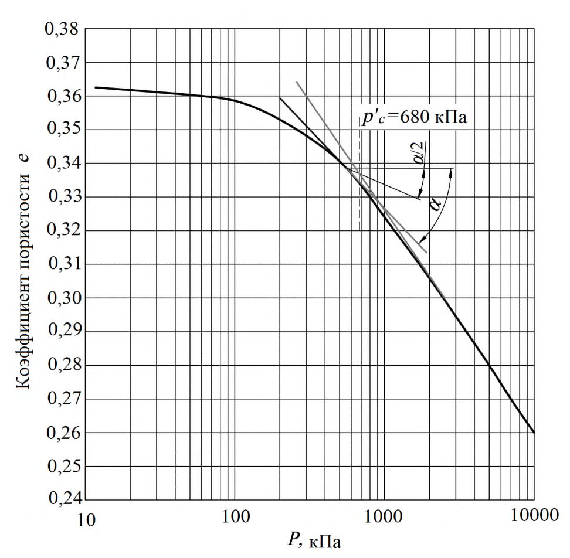
Б.11 Нормативное и равное ему расчетное значения коэффициента консолидации ( cv , n и cv ) определяется как среднее арифметическое из частных значений cv , i .
Определение значений cv выполняется для диапазона нагрузок, указанного в задании на лабораторные испытания. Если диапазон выходит за пределы нагрузок при консолидации, то они могут быть соответствующим образом смещены.
Б.12 По завершении консолидации краны дренажной системы перекрываются и образец грунта нагружается вертикальной нагрузкой до его разрушения. Нагружение осуществляется с постоянной скоростью вертикальной деформации образца ε1 или ступенчатым повышением осевой нагрузки при σ3 = const .
Скорость вертикальных деформаций ε1 выбирается следующим образом: в соответствии с Б.8 и Б.9 определяется время 100 %-ной фильтрационной консолидации t 100. Скорость вертикальных деформаций находится делением значения предельной вертикальной деформации p 1 , полученной из предыдущих испытаний образцов грунта или принятой для супесей -0,10, для суглинков -0,15, для глин -0,20, на значение t 100
где ε1 -скорость вертикальных деформаций.
При силовом способе нагружения величина ступеней устанавливается из необходимости получения 8 -10 ступеней нагрузки до достижения разрушения. Выдержка во времени на каждой ступени устанавливается делением времени t 100 на число ступеней.
В процессе испытания регистрируются давление в камере прибора, вертикальная нагрузка на образец грунта, вертикальные перемещения, поровое давление.
Испытания заканчиваются при выполнении одного из критериев, приведенных в ГОСТ 12248.
Б.13 По результатам испытаний определяют соответствующие предельному равновесию частные значения эффективных напряжений σ'1,1 tm и σ' 3,1 tm . Совокупность этих значений, полученных в разных опытах для одной разновидности грунта, используется для определения нормативных (tgφ' n , c'n ) и расчетных (tgφI,II, c' I,II) значений характеристик прочности статистическими методами в соответствии с ГОСТ 20522.
Определение давления предуплотнения p'с методом компрессионного сжатия и коэффициента переуплотнения OCR
Б.14 Значение c p определяется в компрессионных приборах, обеспечивающих передачу на образец вертикальных напряжений до 5 -10 МПа с размером колец диаметром 50 и/или 70 мм и высотой (20 ± 2) мм.
Б.15 Нагружение образцов производится ступенями до напряжений в 5 -10 МПа (в зависимости от глубины залегания образца и ожидаемого значения давления предварительного уплотнения). Нагрузку на каждой последующей ступени следует принимать равной удвоенному значению нагрузки на предыдущей ступени, например: 0,012; 0,025; 0,05; 0,1; 0,2 и т.д., МПа. В области предполагаемых значений c p . рекомендуется устанавливать дополнительные ступени нагружения Необходимое время выдержки на каждой ступени нагрузки составляет не менее 24 ч.
Б.16 Для всех испытуемых грунтов необходимо определять физические характеристики и гранулометрический состав.
Б.17 Частные значения c p определяют по компрессионным кривым методом Казагранде, для чего необходимо выполнять следующие построения: по полученным в каждом опыте результатам строится компрессионная кривая в полулогарифмическом масштабе (рисунок Б.2); на графике определяется точка, соответствующая наибольшей кривизне кривой, через эту точку проводятся горизонтальная линия и касательная к кривой, затем проводится биссектриса угла α между ними; определяется точка пересечения биссектрисы угла α с продолжением прямолинейного участка компрессионной кривой, проекция которой на ось давлений р' и есть значение давления предварительного уплотнения c p .
Рисунок Б . 2 -Определение давления предварительного уплотнения р'с по методу Казагранде
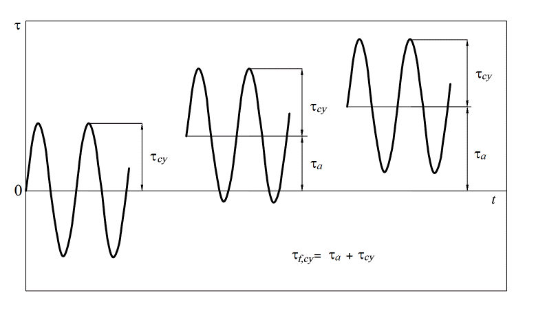
Б.18 Коэффициент переуплотнения определяется по формуле
где c p и 0 p -соответственно эффективное давление предуплотнения и эффективное бытовое давление на глубине залегания образца.
Б.19 Результаты испытаний для каждого инженерно-геологического элемента должны быть представлены паспортами испытаний с графиками компрессионных кривых и сведены в таблицу с привязкой по глубине. По каждому ИГЭ должны быть рассчитаны средние значения давления предуплотнения c p и коэффициента переуплотнения OCR .
Особенности определения параметров прочности и деформируемости грунтов при динамических воздействиях
Б.20 Динамическая прочность грунта на сдвиг определяется как предельное значение суммы статической компоненты сдвиговых напряжений τ а и циклической составляющей τ су на поверхности разрушения
где N -число циклов нагружения; d 50 -характеристика гранулометрического состава грунта; µσ -параметр Лоде; ω1, ω n -другие определяющие параметры; τ f,cy -пиковые значения динамических сдвигающих напряжений.
Лабораторное моделирование напряженно-деформированного состояния элемента грунта в основании ГТС охватывает лишь условия гармонических внешних воздействий (рисунок Б.3). Опыты проводятся в условиях трехосного сжатия или простого сдвига при наличии или отсутствии дренирования.
Рисунок Б . 3 -Возможные соотношения циклической и статической составляющих касательных напряжений
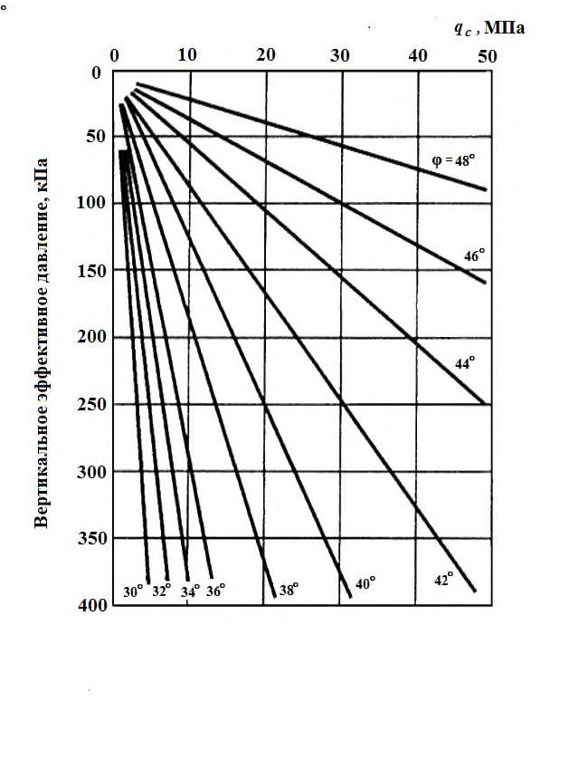
Б.21 Динамические параметры прочности грунтов -интегральные характеристики, одновременно зависящие от физических свойств грунтов и параметров внешних воздействий. Динамическая прочность грунтов определяется в долях статической прочности отдельно по каждому виду воздействия. Деформационные характеристики -динамический модуль сдвига и коэффициент демпфирования -определяются на основе анализа внутри цикловых процессов (петель нагружения).
Б.22 Прочность грунтов при динамических воздействиях рекомендуется определять на основе гипотезы о возможности линейного независимого суммирования результатов внешних воздействий (накопления повреждений) Палмгрена-Майнера. Согласно гипотезе накопления повреждений суммарный эффект циклов нагружения различной интенсивности определяется линейной суперпозицией и не зависит от последовательности отдельных циклов. Поэтому влияние динамического воздействия может быть охарактеризовано как эквивалентное число циклов нагружения N экв, которое по кумулятивному эффекту накопления повреждаемости соответствует реальному внешнему воздействию. Таким образом, динамическое повреждение при некотором уровне напряжений характеризует повреждение при любом другом уровне напряжений.
СП 23.13330.2018
Реальное воздействие нерегулярно и для оценки повреждаемости грунтов должно быть представлено в виде последовательности синусоидальных волн (или групп волн) с уровнем воздействия в каждой группе, типичным для рассматриваемого эксплуатационного режима. Такая оценка базируется на экспериментальных данных, описывающих процесс накопления циклической и статической составляющих сдвиговой деформации или порового давления при росте числа циклов нагружения.
Б.23 Метод определения параметров прочности при динамических воздействиях -расчетно-экспериментальный, основанный на методе последовательных приближений. Программа испытаний должна учитывать различные потенциальные формы потери устойчивости системы «сооружение-основание» и прогнозируемые уровни статических и циклических напряжений в основании. При формировании программы лабораторных испытаний допускается рассматривать не все виды внешних воздействий, а лишь наихудшие с точки зрения возможной потери сооружением устойчивости. Консерватизм получаемых оценок должен быть подтвержден сопоставлением с опубликованными данными исследований динамических свойств грунтов.
Б.24 Основная задача экспериментальных лабораторных исследований -определение числа циклов нагружения N , необходимых для разрушения грунта при различных соотношениях статической и динамической составляющих циклической нагрузки. Выполняемые опыты -недренированные, с контролем напряжений или деформаций. Уровень статических сдвигающих напряжений задается в зависимости от глубины залегания рассматриваемого слоя, дополнительной пригрузки от сооружения, уровня внешних динамических воздействий.
Предварительно определяется значение сопротивления недренированному сдвигу cu связных грунтов или значения параметров трения для несвязных грунтов в условиях квазистатического нагружения. Затем, при различных комбинациях нормализованной статической (τ a/сu, τ a/ σ' v 0 ) и динамической (τ cy /su, τ cy / σ' v 0) составляющих напряжений фиксируется число циклов нагружения, приводящее к разрушению грунта в условиях «закрытой» системы при перекрытом дренаже, что соответствует постоянству объема полностью водонасыщенного образца при сдвиге, как функции от предельного числа циклов при разрушении N .
Оценка динамической прочности базируется на эмпирически полученных кривых
образца, σ ' v 0 -эффективные напряжения при консолидации, τ а -статическая составляющая сдвигающих напряжений, τ cy -циклическая составляющая сдвигающих напряжений, su -сопротивление недренированному сдвигу. Под разрушением образца понимают достижение заданного уровня деформации -статической (γ, ε а ) или циклической (γ cy , ε cy ), избыточного порового давления. При проведении экспериментов критериями остановки опыта рекомендуется считать достижение одного из следующих условий: статической составляющей сдвиговой деформации 20 %; амплитуды циклической деформации 10 %; достижение поровым давлением уровня 95 % σ ' v 0; достижение N = 1500 (уровень может меняться в зависимости от вида моделируемого воздействия).
Для несвязных образцов грунтов результаты испытаний могут быть представлены также в виде зависимостей = c cy c N f U , , по которым определяется суммарное накопление избыточного порового давления жидкости в грунте при рассматриваемом воздействии.
Б.25 Оценка деформационных характеристик грунтов при динамических воздействиях производится как на основе полевых, так и лабораторных испытаний.
Под деформационными характеристиками следует понимать динамический модуль сдвига G d и коэффициент демпфирования D d . Модуль сдвига при деформациях 10 -6 -10 -5 оценивается по результатам прямых измерений скорости поперечных волн υ s в полевых и лабораторных условиях и пересчетом по формуле
В лабораторных условиях измерения должны проводиться на образцах грунтов в условиях трехосного сжатия при напряжениях, максимально близких к природным на заданной глубине путем ультразвукового зондирования.
Деформации 10 -5 -10 -3 охватываются лабораторными испытаниями в резонансной колонне, свыше 10 -3 -в приборе трехосного сжатия (опыты с контролем деформаций).
Исходные данные для определения коэффициента демпфирования D d -внутрицикловые зависимости напряжений и деформаций (петли нагружения). Результаты испытаний -кривые G d = f( γ cy , σ ', f) и D d = f( γ cy , σ ', f), где γ cy -амплитуда деформации сдвига, σ ' -средние эффективные напряжения в грунте, f -частота нагружения.
Б.26 При наличии в основании сооружения водонасыщенных несвязных грунтов следует оценивать возможность разжижения этих грунтов при сейсмических воздействиях. Критерий по разжижению грунтов, основанный на определении предельных сдвиговых динамических деформаций определяется выражением
где dyn -сдвиговые динамические деформации, определяемые по результатам оценки НДС системы «сооружение - основание»; кр -критические значения сдвиговых деформаций, определяемые по данным виброкомпрессионных исследований образцов грунта.
По этому критерию определяют зоны разжижения грунтов (зоны предельного состояния), допустимые величина и расположение которых устанавливаются на основе общего анализа совместной работы сооружения с грунтом основания.
ВПриложение В. Лабораторные и полевые методы определения характеристик грунтов шельфа
В настоящем приложении приведены методики определения необходимых характеристик, для которых отсутствуют нормативные документы, а также некоторые способы интерпретации данных статического зондирования, специально разработанные применительно к грунтам шельфа.
Содержание карбоната
В.1 Карбонатность (содержание карбоната кальция СаСО 3 ) относится к числу необходимых для определения характеристик грунтов [1].
В.2 Содержание СаСО 3 в грунтах следует определять газометрическим методом, при котором фиксируют количество углекислого газа CO2, выделившегося при разложении навески грунта 10 %-ным раствором соляной кислоты. Избыточное давление, генерируемое в закрытом сосуде при взаимодействии карбоната в грунте с соляной кислотой, пропорционально эквивалентному содержанию карбоната в образце. Испытания проводят с помощью манометрического кальциметра.
В.3 Для определения содержания карбоната высушенную, измельченную и просеянную сквозь сито с ячейками размером 0,425 мм пробу грунта массой (1 ± 0,01) г помещают в реактор прибора, где она реагирует с 20 мл 10 % - ного раствора соляной кислоты. После завершения реакции, которая продолжается 10 мин, измеряют избыточное давление и определяют содержание карбоната кальция в грунте с помощью калибровочной зависимости.
Примечание - Приблизительная оценка содержания карбоната может быть выполнена [1, таблица 6.5], если это допускается программой лабораторных исследований.
Максимальная и минимальная плотности песка
где e max , e min , e -соответственно коэффициенты пористости в предельно рыхлом, предельно плотном и естественном сложении;
где ρ s -плотность частиц грунта, ρ d -плотность скелета грунта.
В.5 Отбор образцов ненарушенного сложения в песчаных водонасыщенных грунтах практически невозможен. Поэтому отбирают образцы нарушенного сложения, в полевых условиях определяют природную влажность грунта и затем (по результатам статического зондирования) оценивают его степень плотности ID . Для лабораторных исследований прочностных и деформационных свойств подобных грунтов требуется формирование искусственных образцов, состояние которых максимально соответствует условиям природного залегания. При этом значение природной плотности ρ d вычисляют, используя результаты прямого определения ρ d max и ρ d min и аналитической оценки степени плотности ID .
В.6 Максимальная плотность несвязных грунтов может быть определена двумя путями: ударным методом и вибрационным. Для песчаных грунтов, в которых суммарное содержание пылеватых и глинистых фракций в высушенном грунте не превышает 15% по весу, значение ρ d max следует определять вибрационным методом, при котором, в большинстве случае, получают более высокие значения максимальной плотности.
В.7 Методика определения заключается в вибрировании образца (высушенного или с природной влажностью) в металлической форме (стакане) диаметром 100 мм и высотой 100 мм, с пригрузом массой 7475 г, при частоте колебаний 60 Гц и амплитуде ускорений, изменяющейся ступенями. Время вибрирования на каждой ступени - 8 мин. После каждой ступени измеряют осадку образца. На следующих ступенях амплитуду ускорений повышают с шагом 1 -1,5g. Опыт продолжают до прекращения уплотнения образца или до начала его разуплотнения.
Максимальную плотность вычисляют делением массы грунта на его объем после уплотнения. Конечное значение максимальной плотности получают осреднением результатов нескольких испытаний.
В.8 Минимальную плотность песка ρ d min следует определять одним из приведенных ниже методов. Суть испытания состоит в размещении образца высушенного грунта определенной массы в градуированном сосуде, с возможно меньшей плотностью. Настоящее приложение предусматривает три метода определения: по методу А грунт осторожно помещают в сосуд с помощью воронки и/или совка; по методу В на дно сосуда устанавливают вертикально отрезок металлической трубки, которую через воронку заполняют грунтом; затем трубку вертикально извлекают из сосуда в течение 2 с, при этом высыпающийся из трубы грунт укладывается в форму практически с минимальной плотностью; по методу С пробу грунта помещают в градуированный цилиндр, который закрывают крышкой. Цилиндр переворачивают, затем быстро возвращают в исходное положение и фиксируют объем, который занял грунт.
Минимальную плотность вычисляют делением массы грунта на зафиксированный объем. Процедуру повторяют три раза с последующим осреднением результатов.
Форма частиц песка
В.9 Песчаные частицы размером более 2 мм следует относить к одному из четырех стандартных типов формы: угловатая, полуугловатая, полуокруглая, округлая. Общая оценка соответствует той форме, которая приписана наибольшему числу частиц.
Оценка качества образцов
В.10 Ввиду существенных проблем, связанных с отбором качественных образцов ненарушенного сложения в водонасыщенных грунтах шельфа, для повышения достоверности результатов лабораторного определения прочностных и деформационных характеристик рекомендуется выполнять оценку качества образцов, предназначенных для испытаний. Оценка может быть качественной и количественной.
Качественную (визуальную) оценку следует выполнять анализом и интерпретацией рентгеновских снимков образцов, в том числе находящихся в тонкостенных тубах.
Количественная оценка качества образца может быть выполнена путем измерения объемной деформации грунта в результате приложения эффективных бытовых давлений (вертикального р ꞌ v 0 и горизонтального р ꞌ h 0), соответствующих глубине отбора образца. Для этого на стадии консолидации образца определяют значение параметра Δ e/e 0
где Δ e -изменение коэффициента пористости под действием приложенных давлений; e 0 - начальный коэффициент пористисти образца; ɛ vol - объемная деформация Δ V/V при реконсолидации под действием приложенных давлений.
Качество образца устанавливают в соответствии с таблицей В.1.
Таблица В.1 Оценка качества слабои среднепереуплотненных образцов ненарушенного сложения
| Коэффициент переуплотнения OCR | Значение параметра Δ e/e 0 при приложении эффективных бытовых давлений | Значение параметра Δ e/e 0 при приложении эффективных бытовых давлений | Значение параметра Δ e/e 0 при приложении эффективных бытовых давлений | Значение параметра Δ e/e 0 при приложении эффективных бытовых давлений |
|---|---|---|---|---|
| 1 - 2 | До 0,04 | 0,04 - 0,07 | 0,07 - 0,14 | Св. 0,14 |
| 2 - 4 | До 0,03 | 0,03 - 0,05 | 0,05 - 0,10 | Св. 0,10 |
| Качество образца | 1 (отличное - очень хорошее) | 2 (хорошее - удовлетворительное) | 3 (плохое) | 4 (очень плохое) |
Примечания
1 Критерии, приведенные в настоящей таблице, основаны на результатах испытаний морских глинистых грунтов консистенцией от мягкопластичной до текучей с глубины 0 - 25 м от поверхности дна. Для более твердых предуплотненных грунтов представленная оценка может рассматриваться только как ориентировочная.
2 Критерии, приведенные в таблице В.1, могут быть использованы для данных компрессионных испытаний со ступенчатым приложением нагрузки только в тех случаях, когда нагрузка на каждой ступени выдерживается не более 3 ч. При более длительном выдерживании нагрузки для определения значения Δ e/e0 потребуется установить момент завершения первичной консолидации под требуемой нагрузкой по графику ɛ = f(t).
Интерпретация данных статического зондирования грунтов шельфа
В.11 Статическое зондирование -в условиях шельфа наиболее информативный метод исследования грунтов, результаты которого позволяют с помощью известных корреляционных зависимостей выполнять оценку практически всех основных параметров, в том числе и тех, которые невозможно определить иными средствами.
В.12 Подразделение глинистых грунтов на разновидности и предварительную оценку плотности грунтов рекомендуется проводить по соотношению параметров, полученных при статическом зондировании: удельного сопротивления под конусом qc , то же, с учетом избыточного порового давления qt и коэффициента трения f s /q c [1, рисунок М.1]. При отсутствии данных по избыточному поровому давлению допускается применение [1, рисунок М.1] для всех грунтов, за исключением слабых глинистых грунтов текучей консистенции.
В.13 При определении деформационных и прочностных характеристик грунтового основания следует учитывать его природное напряженное состояние, характеризуемое коэффициентом переуплотнения OCR. Для оценки OCR по результатам статического зондирования следует использовать эмпирические зависимости:
где Δ u = ut - u 0, p ꞌ 0 - эффективное бытовое давление в точке измерения.
Для оценки коэффициента переуплотнения малоизученных грунтов может быть использована формула
где k - коэффициент, значение которого варьирует от 0,2 до 0,5 для грунтов от меньшей степени переуплотнения к большей; p 0 -полное бытовое давление в точке измерения.
В.14 Значение степени плотности ID рекомендуется определять по эмпирическим формулам:
- Балди (для среднесжимаемых песков)
где С 0 , С 1 , С 2 - коэффициенты, определяемые по корреляции данных статического зондирования с данными компрессионных испытаний;
- Ланселота
- В.15 Оценку значения модуля деформации песчаных грунтов следует выполнять преимущественно на основе корреляционных зависимостей, связывающих параметр qc с компрессионным модулем деформации М 0, соответствующим бытовому вертикальному эффективному напряжению в точке зондирования.
М 0 определяют по упрощенным зависимостям:
- для нормально уплотненных песков:
- для переуплотненных песков при OCR > 2:
М 0= 250 МПа при qc ≥ 50 МПа.
По значению М 0 определяют компрессионный модуль деформации М с учетом веса сооружения Δ p ꞌ в интервале напряжений от p ꞌ 0 до ( p ꞌ 0 + Δ p ꞌ )
Значение модуля деформации Е определяют как Е = β М , или Е = k М , где k 1 (рекомендуется k =0,75).
- В.16 Для глинистых грунтов рекомендуется использовать соотношения, позволяющие оценить значение компрессионного модуля деформации М в зависимости от значения qc и принадлежности грунта к той или иной классификационной группе ( CL , ML , MH , CH , OL или OH ) согласно таблицам Е.5 -Е.6 ГОСТ 25100-2011.
- для низкопластичных глин CL :
- для низкопластичных пылеватых грунтов ML :
- для глинистых и пылеватых грунтов высокой пластичности MH, CH :
$$qc >2 МПа 3< α m <6; qc < 2 МПа 1< α m <3;$$
- для органических пылеватых грунтов OL :
- для торфа и органических глинистых грунтов Pt , OH : qc < 0,7 МПа
где w - влажность, %.
- В.17 Для оценки прочности (сопротивления недренированному сдвигу сu ) водонасыщенных глинистых грунтов шельфа используют зависимость
где Nk - показатель конуса по эмпирическим данным.
- В.18 Для переуплотненных грунтов широко используют зависимость, связывающую характер изменения сопротивления недренированному сдвигу сu по глубине с коэффициентом переуплотнения OCR
где β = сu / р' 0 для нормально уплотненных грунтов ( OCR =1,0); р' 0 -вертикальное эффективное напряжение на расчетной глубине;
OCR = p ' c / р' 0 - коэффициент переуплотнения; c p -вертикальное напряжение предуплотнения; m -показатель степени.
Значение параметра изменяется в диапазоне 0,2 < < 0,5, а m - в диапазонах 0,7< m <0,8 при OCR >2 и m 0,8< m <1,0 при OCR <2.
Значения этих параметров определяют экспериментально по результатам испытаний, таких как испытания в условиях прямого среза с предварительной рекомпрессией.
В.19 Для определения угла внутреннего трения песка φ по значению сопротивления под конусом qc и вертикального эффективного давления в точке измерения рекомендуется использовать номограмму, приведенную на рисунке В.1.
Примечание -При использовании номограммы, представленой на рисунке В.1, следует иметь ввиду, что прочность песков характеризуется только углом внутреннего трения φ (с = 0).
Рисунок В . 1 -Графический способ определения угла внутреннего трения φ по значению сопротивления под конусом qc и вертикального эффективного давления в точке измерения
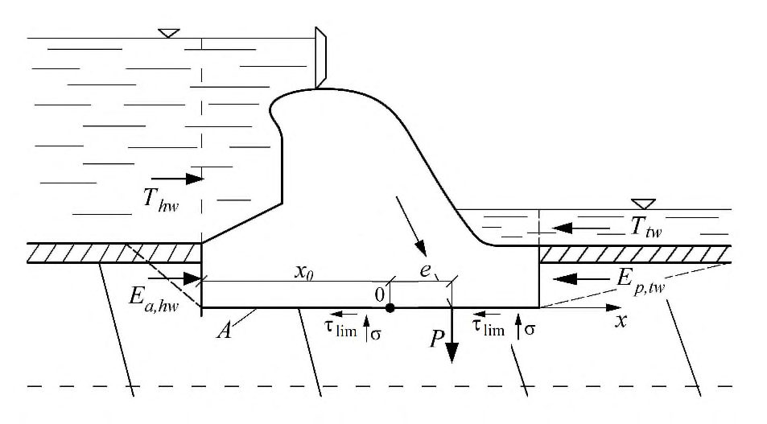
ГПриложение Г. Динамические характеристики грунтов
Г.1 Для расчетов сейсмостойкости системы «сооружение-основание» следует использовать динамические характеристики коэффициента Пуассона (поперечной деформации) дин и модуля деформации E дин :
где p , s -скорость распространения продольных и поперечных волн соответственно;
- плотность.
Г.2 На предварительных стадиях проектирования при отсутствии прямых измерений скоростей продольных и поперечных волн допускается использовать данные таблицы Г.1, составленной путем обобщения материалов инженерной сейсморазведки. В таблице Г.1 для основных видов горных пород асейсмических районов в естественном залегании (аэрированных, водонасыщенных, мерзлых) приведены рекомендуемые средние значения и среднеквадратические отклонения ряда динамических характеристик, а также даны значения поправочных коэффициентов К 7 - К 10, на которые следует умножать значения p и s для получения расчетных значений скорости волн при интенсивности землетрясений I = 7 -10 баллов
где КvI -коэффициент пересчета скорости волн, принимаемый по таблице Г.1 в зависимости от интенсивности землетрясений I .
Таблица Г.1 - Обобщенные сведения о динамических характеристиках грунтов верхней части разреза в натурных условиях, необходимые для расчетов сейсмостойкости системы «сооружение-основание»
| Грунты | Состояние | , г/см³ | , г/см³ | p , км/с | p , км/с | s , км/с | s , км/с | дин | дин E , МПа | p,s Δ | К v 7 | К v 8 | К v 9 | К v 10 |
|---|---|---|---|---|---|---|---|---|---|---|---|---|---|---|
| Насыпные грунты (пески, гравий, галька и др.) | Аэрированное | 1,40 | 0,05 | 0,25 | 0,07 | 0,15 | 0,03 | 0,22 | 80 | 1,5 | 0,49 | 0,42 | 0,36 | 0,32 |
| Насыпные грунты (пески, гравий, галька и др.) | Водонасыщенное | 1,65 | 0,06 | 1,5 | 0,1 | 0,15 | 0,03 | 0,49 | 110 | 0,8 | 0,64 | 0,57 | 0,52 | 0,47 |
| Насыпные грунты (пески, гравий, галька и др.) | Мерзлое | 1,63 | 0,06 | 2,8 | 1,2 | 0,39 | 6520 | 0,6 | 0,70 | 0,64 | 0,59 | 0,54 | ||
| Глинистые грунты | Глинистые грунты | Глинистые грунты | Глинистые грунты | Глинистые грунты | Глинистые грунты | Глинистые грунты | Глинистые грунты | Глинистые грунты | Глинистые грунты | Глинистые грунты | Глинистые грунты | Глинистые грунты | Глинистые грунты | Глинистые грунты |
| Супеси | Аэрированное | 1,65 | 0,09 | 0,40 | 0,08 | 0,215 | 0,05 | 0,29 | 200 | 0,5 | 0,78 | 0,78 | 0,78 | 0,78 |
| Супеси | Водонасыщенное | 1,90 | 0,04 | 1,75 | 0,04 | 0,215 | 0,05 | 0,49 | 260 | 0,35 | 0,78 | 0,78 | 0,78 | 0,78 |
| Супеси | Мерзлое | 1,88 | 0,04 | 3,15 | 0,15 | 1,7 | 0,08 | 0,29 | 6560 | 0,25 | 0,85 | 0,81 | 0,77 | 0,74 |
| Суглинки | Аэрированное | 1,75 | 0,08 | 0,55 | 0,06 | 0,21 | 0,07 | 0,41 | 220 | 0,50 | 0,78 | 0,78 | 0,78 | 0,78 |
| Суглинки | Водонасыщенное | 1,85 | 0,08 | 1,60 | 0,1 | 0,25 | 0,07 | 0,48 | 340 | 0,30 | 0,78 | 0,78 | 0,78 | 0,78 |
| Суглинки | Мерзлое | 1,83 | 0,08 | 2,55 | 0,12 | 1,35 | 0,06 | 0,31 | 8740 | 0,25 | 0,85 | 0,81 | 0,77 | 0,74 |
| Глины (четвертичного возраста) | Аэрированное | 1,65 | 0,15 | 1,15 | 0,15 | 0,35 | 0,1 | 0,44 | 580 | 0,45 | 0,78 | 0,78 | 0,78 | 0,78 |
| Глины (четвертичного возраста) | Водонасыщенное | 1,92 | 0,1 | 1,85 | 0,15 | 0,35 | 0,1 | 0,48 | 700 | 0,25 | 0,78 | 0,78 | 0,78 | 0,78 |
| Глины (четвертичного возраста) | Мерзлое | 1,90 | 0,09 | 2,50 | 0,1 | 1,05 | 0,1 | 0,39 | 5820 | 0,25 | 0,85 | 0,81 | 0,77 | 0,74 |
| Глины коренные (третичного возраста и старше) | Аэрированное | 1,80 | 0,06 | 1,7 | 0,1 | 0,55 | 0,07 | 0,44 | 1570 | 0,1 | 0,78 | 0,78 | 0,78 | 0,78 |
| Водонасыщенное | 2,10 | 0,05 | 2,2 | 0,1 | 0,70 | 0,06 | 0,44 | 2960 | 0,06 | 0,78 | 0,78 | 0,78 | 0,78 | |
| Мерзлое | 2,08 | 0,05 | 2,8 | 0,1 | 1,6 | 0,12 | 0,27 | 13520 | 0,06 | 0,96 | 0,95 | 094 | 0,92 | |
| Лессы и лессовидные суглинки | Аэрированное | 1,50 | 0,8 | 0,1 | 0,25 | 0,05 | 0,44 | 270 | 0,5 | 0,78 | 0,78 | 0,78 | 0,78 | |
| Водонасыщенное | 2,00 | 1,65 | 0,07 | 0,30 | 0,02 | 0,48 | 530 | 0,3 | 0,78 | 0,78 | 0,78 | 0,78 | ||
| Мерзлое | 1,95 | 2,6 | 0,07 | 1,3 | 0,33 | 8770 | 0,25 | 0,85 | 0,81 | 0,77 | 0,74 | |||
| Пески чистые | Аэрированное | 1,40 | 0,08 | 0,55 | 0,17 | 0,35 | 0,13 | 0,16 | 400 | 0,7 | 0,67 | 0,60 | 0,55 | 0,50 |
| Водонасыщенное | 2,00 | 0,06 | 1,70 | 0,06 | 0,30 | 0,10 | 0,48 | 530 | 0,5 | 0,74 | 0,68 | 0,63 | 0,59 | |
| Мерзлое | 1,98 | 0,06 | 3,7 | 0,12 | 2,0 | 0,08 | 0,29 | 20430 | 0,25 | 0,85 | 0,81 | 0,77 | 0,74 | |
| Пески с примесью глины | Аэрированное | 1,50 | 0,04 | 0,55 | 0,1 | 0,35 | 0,1 | 0,16 | 430 | 0,6 | 0,70 | 0,64 | 0,59 | 0,54 |
| Пески с примесью глины | Водонасыщенное | 1,95 | 0,06 | 1,65 | 0,06 | 0,35 | 0,1 | 0,47 | 700 | 0,35 | 0,80 | 0,75 | 0,71 | 0,67 |
| Пески с примесью глины | Мерзлое | 1,93 | 0,06 | 3,5 | 1,8 | 0,33 | 16630 | 0,25 | 0,85 | 0,81 | 0,77 | 0,74 | ||
| Крупнообломочные гра- | Аэрированное | 2,0 | 0,08 | 0,9 | 0,12 | 0,50 | 0,1 | 0,28 | 1280 | 0,6 | 0,70 | 0,64 | 0,59 | 0,54 |
| вийно-галечниковые | Водонасыщенное | 2,15 | 0,08 | 2,15 | 0,25 | 0,50 | 0,12 | 0,47 | 1580 | 0,35 | 0,80 | 0,75 | 0,71 | 0,67 |
| грунты с песчаным заполнителем | Мерзлое | 2,13 | 0,08 | 4,2 | 0,2 | 2,35 | 0,1 | 0,28 | 30110 | 0,20 | 0,88 | 0,84 | 0,81 | 0,78 |
| Аэрированное | 1,90 | 0,08 | 0,90 | 0,12 | 0,5 | 0,1 | 0,28 | 1220 | 0,5 | 0,74 | 0,68 | 0,63 | 0,59 | |
| Водонасыщенное | 2,10 | 0,07 | 1,7 | 0,2 | 0,5 | 0,45 | 1520 | 0,3 | 0,83 | 0,78 | 0,74 | 0,70 |
| Грунты | Состояние | , г/см³ | , г/см³ | p , км/с | p , км/с | s , км/с | s , км/с | дин | дин E , МПа | p,s Δ | К v 7 | К v 8 | К v 9 | К v 10 |
|---|---|---|---|---|---|---|---|---|---|---|---|---|---|---|
| то же, с супесчаным заполнителем | Мерзлое | 2,08 | 0,07 | 4,0 | 2,0 | 0,33 | 22130 | 0,2 | 0,88 | 0,84 | 0,81 | 0,78 | ||
| Крупнообломочные гра- вийно-галечниковые грунты с суглинистым заполнителем то же, с | Аэрированное | 1,95 | 0,08 | 0,95 | 0,12 | 0,45 | 0,1 | 0,36 | 1070 | 0,45 | 0,76 | 0,70 | 0,66 | 0,61 |
| Крупнообломочные гра- вийно-галечниковые грунты с суглинистым заполнителем то же, с | Водонасыщенное | 2,15 | 0,07 | 1,6 | 0,2 | 0,45 | 0,45 | 1260 | 0,3 | 0,83 | 0,78 | 0,74 | 0,70 | |
| Крупнообломочные гра- вийно-галечниковые грунты с суглинистым заполнителем то же, с | Мерзлое | 2,13 | 0,07 | 3,6 | 1,8 | 0,33 | 18360 | 0,2 | 0,88 | 0,84 | 0,81 | 0,78 | ||
| глинистым заполнителем | Аэрированное | 2,0 | 0,08 | 1,0 | 0,1 | 0,4 | 0,1 | 0,4 | 900 | 0,45 | 0,76 | 0,70 | 0,66 | 0,61 |
| глинистым заполнителем | Водонасыщенное | 2,18 | 0,07 | 1,35 | 0,2 | 0,4 | 0,45 | 1010 | 0,3 | 0,83 | 0,78 | 0,74 | 0,70 | |
| глинистым заполнителем | Мерзлое | 2,16 | 0,07 | 2,9 | 1,6 | 0,28 | 14160 | 0,2 | 0,88 | 0,84 | 0,81 | 0,78 | ||
| Полускальные грунты: мергели, аргиллиты и др. | Аэрированное | 2,30 | 0,2 | 2,5 | 0,2 | 1,20 | 0,2 | 0,35 | 8940 | 0,4 | 0,78 | 0,73 | 0,68 | 0,64 |
| Полускальные грунты: мергели, аргиллиты и др. | Водонасыщенное | 2,34 | 0,2 | 3,0 | 0,2 | 1,20 | 0,2 | 0,40 | 9440 | 0,3 | 0,83 | 0,78 | 0,74 | 0,70 |
| Полускальные грунты: мергели, аргиллиты и др. | Мерзлое | 2,32 | 0,2 | 3,5 | 0,2 | 1,65 | 0,2 | 0,36 | 17180 | 0,3 | 0,83 | 0,78 | 0,74 | 0,70 |
| Скальные слаботрещиноватые грунты | Скальные слаботрещиноватые грунты | Скальные слаботрещиноватые грунты | Скальные слаботрещиноватые грунты | Скальные слаботрещиноватые грунты | Скальные слаботрещиноватые грунты | Скальные слаботрещиноватые грунты | Скальные слаботрещиноватые грунты | Скальные слаботрещиноватые грунты | Скальные слаботрещиноватые грунты | Скальные слаботрещиноватые грунты | Скальные слаботрещиноватые грунты | Скальные слаботрещиноватые грунты | Скальные слаботрещиноватые грунты | Скальные слаботрещиноватые грунты |
| Песчаники | Аэрированное | 2,35 | 0,2 | 2,65 | 0,4 | 1,5 | 0,3 | 0,27 | 13430 | 0,3 | 0,83 | 0,78 | 0,74 | 0,70 |
| Песчаники | Водонасыщенное | 2,42 | 0,15 | 3,15 | 0,5 | 1,5 | 0,3 | 0,35 | 14700 | 0,2 | 0,88 | 0,84 | 0,81 | 0,78 |
| Песчаники | Мерзлое | 2,42 | 0,15 | 4,4 | 0,3 | 2,45 | 0,2 | 0,28 | 37190 | 0,2 | 0,88 | 0,84 | 0,81 | 0,78 |
| Известняки | Аэрированное | 2,65 | 0,15 | 3,15 | 0,5 | 1,75 | 0,4 | 0,28 | 20780 | 0,3 | 0,83 | 0,78 | 0,74 | 0,70 |
| Известняки | Водонасыщенное | 2,68 | 0,10 | 3,5 | 0,6 | 1,65 | 0,5 | 0,36 | 19850 | 0,2 | 0,88 | 0,84 | 0,81 | 0,78 |
| Известняки | Мерзлое | 2,68 | 0,10 | 5,0 | 0,4 | 2,5 | 0,2 | 0,33 | 44560 | 0,2 | 0,88 | 0,84 | 0,81 | 0,78 |
| Гранитоиды | Аэрированное | 2,60 | 0,10 | 3,95 | 0,5 | 2,30 | 0,45 | 0,25 | 34380 | 0,20 | 0,88 | 0,84 | 0,81 | 0,78 |
| Гранитоиды | Водонасыщенное | 2,70 | 0,08 | 4,65 | 0,5 | 2,35 | 0,4 | 0,33 | 39660 | 0,10 | 0,94 | 0,92 | 0,90 | 0,88 |
| Гранитоиды | Мерзлое | 2,70 | 0,08 | 5,35 | 0,4 | 3,0 | 0,2 | 0,32 | 64150 | 0,05 | 0,97 | 0,96 | 0,95 | 0,94 |
| Долериты, диабазы | Аэрированное | 2,75 | 0,1 | 5,5 | 2,8 | 0,32 | 56920 | 0,15 | 0,91 | 0,88 | 0,85 | 0,83 | ||
| Долериты, диабазы | Водонасыщенное | 2,75 | 0,1 | 5,7 | 2,9 | 0,33 | 61520 | 0,1 | 0,94 | 0,92 | 0,90 | 0,88 | ||
| Долериты, диабазы | Мерзлое | 2,75 | 0,1 | 6,3 | 3,25 | 0,32 | 76680 | 0,05 | 0,97 | 0,96 | 0,95 | 0,94 |
Обозначения: Δ p,s - логарифмический декремент поглощения;
- Кv - коэффициент пересчета скорости волн при интенсивности землетрясений 7 баллов ( Кv 7), 8 баллов ( Кv 8 ) и т. д.
Примечания
- 1 Мерзлое состояние грунтов соответствует температуре ниже минус 2 о С при степени льдонасыщения Sri > 50 %.
- 2 Для всех грунтов при интенсивности землетрясения ниже 7 баллов Кi = 1.
- 3 В талых скальных породах зоны поверхностного выветривания и разгрузки (ЗПВР) скорости волн приблизительно в 2 раза ниже, а в мерзлых в 1,5 раза ниже, чем в породах глубже ЗПВР.
- 4 Засоленность грунтов не влияет на характеристики талых (немерзлых) грунтов, но обусловливает снижение значений p , s, Е дин в мерзлом состоянии.
| Грунты | Состояние | , г/см³ | , г/см³ | p , км/с | p , км/с | s , км/с | s , км/с | дин | дин E , МПа | p,s Δ | К v 7 | К v 8 | К v 9 | К v 10 |
|---|---|---|---|---|---|---|---|---|---|---|---|---|---|---|
| 5 Под аэрированным состоянием понимается состояние пород выше уровня грунтовых вод (УГВ). | 5 Под аэрированным состоянием понимается состояние пород выше уровня грунтовых вод (УГВ). | 5 Под аэрированным состоянием понимается состояние пород выше уровня грунтовых вод (УГВ). | 5 Под аэрированным состоянием понимается состояние пород выше уровня грунтовых вод (УГВ). | 5 Под аэрированным состоянием понимается состояние пород выше уровня грунтовых вод (УГВ). | 5 Под аэрированным состоянием понимается состояние пород выше уровня грунтовых вод (УГВ). | 5 Под аэрированным состоянием понимается состояние пород выше уровня грунтовых вод (УГВ). | 5 Под аэрированным состоянием понимается состояние пород выше уровня грунтовых вод (УГВ). | 5 Под аэрированным состоянием понимается состояние пород выше уровня грунтовых вод (УГВ). | 5 Под аэрированным состоянием понимается состояние пород выше уровня грунтовых вод (УГВ). | 5 Под аэрированным состоянием понимается состояние пород выше уровня грунтовых вод (УГВ). | 5 Под аэрированным состоянием понимается состояние пород выше уровня грунтовых вод (УГВ). | 5 Под аэрированным состоянием понимается состояние пород выше уровня грунтовых вод (УГВ). | 5 Под аэрированным состоянием понимается состояние пород выше уровня грунтовых вод (УГВ). | 5 Под аэрированным состоянием понимается состояние пород выше уровня грунтовых вод (УГВ). |
ДПриложение Д. Определение модулей деформации оснований для расчета перемещений сооружений
Д.1 В зависимости от видов сооружений и схем расчета перемещений принимаются различные значения модулей деформации Ei ( Ep , i , Es,i ), Em .
За исходные принимаются значения модулей грунтов, определенные наиболее достоверными методами: полевыми испытаниями статическими нагрузками в шурфах, дудках или котлованах с помощью штампов площадью 2500 -5000 см, а также в скважинах или в массиве с помощью плоского штампа или винтовой лопасти-штампа площадью 600 см или прессиометров (ГОСТ 20276), лабораторными испытаниями в приборах трехосного сжатия (ГОСТ 12248).
При определении модулей деформации грунтов методами статического или динамического зондирования (ГОСТ 19912) и лабораторными испытаниями в компрессионных приборах (ГОСТ 12248) назначать исходные значения модулей деформации следует согласно 5.3.5 -5.3.6 СП 22.13330.2016.
Д.2 Модуль деформации i -го слоя i E следует определять по формуле
где ' i E - модуль деформации при первичном ' p,i E или повторном ' s ,i E нагружении (в соответствующем диапазоне давлений от сооружения и веса грунта);
i - коэффициент поперечного расширения грунта i -го слоя; ci m - коэффициент условий работы, определяемый по формулам:
где А - площадь фундамента, м² , определяемая для фундаментов с соотношением сторон l/b ≤ 3 как A = lb , а для фундаментов с соотношением l/b > 3 как A= 3 b 2 ;
А 0 - площадь, равная 1 м² ; ni - параметр, определяемый по результатам испытаний iго слоя грунта двумя штампами различных площадей A 1 и A 2 под одной и той же нагрузкой по формуле
где Δ s 1, i , Δ s 2, i - приращения осадок штампов с площадями A 1 и A 2 от дополнительного давления по результатам испытаний i -го слоя.
При отсутствии результатов штамповых испытаний допускается принимать следующие значения параметра ni для грунтов: пылевато-глинистых ледниковых -0,1 -0,2 ; остальных пылевато-глинистых -0,15 -0,3 ; песчаных -0,25 -0,5.
Минимальные или максимальные из указанных значений ni следует принимать, если сжимаемый слой основания определяется исходя из условий σ z,p = 0,5σ z,g или σ z,p = 0,2σ z,g соответственно (11.6.2). При промежуточных значениях глубины сжимаемого слоя значения ni принимают по интерполяции.
Д.3 Средний модуль деформации всего сжимаемого слоя Em , а также среднее значение m следует определять по формулам:
где Ei i
- см. формулу (Д.1); - см. формулу (Д.2); hi - толщина i -го слоя грунта; i A - площадь эпюры вертикальных напряжений от давления p под подошвой сооружения в пределах i -го слоя грунта, определяемая по приложению Н.
ЕПриложение Е. Трехмерные инженерно-геологические модели оснований
Е.1 Трехмерные инженерно-геологические модели оснований гидротехнических сооружений создают для анализа инженерно-геологических условий при их проектировании, строительстве и эксплуатации и последующего построения расчетных моделей (геомеханических, геофильтрационных).
Е.2 Трехмерные ИГМ обобщают в едином формате всю имеющуюся информацию о положении ИГЭ в пространстве и предоставляют возможность уточнения геологического разреза на участках, не охваченных разведочным бурением и другими полевыми исследованиями грунтов.
Е.3 В исходных материалах для построения трехмерных ИГМ оснований гидротехнических сооружений должны быть следующие данные: актуальная (на момент моделирования) топографическая основа участка со сведениями о пространственном положении подземной части зданий и сооружений, коммуникаций и т.д.; результаты батиметрической съемки существующих водотоков и водоемов; сведения о геологической изученности участка и истории геологического развития территории; геологические, инженерно-геологические и гидрогеологические карты участка, инженерно-геологические и геологические разрезы оснований сооружений; инженерно-геологические колонки скважин, паспорта пьезометров; документация по инженерно-геологическому описанию строительных выемок (котлованов, траншей и пр.); результаты геофизических работ, направленных на уточнение геологического строения, гидрогеологических условий и характеристик грунтов; результаты определений физических, механических и фильтрационных характеристик грунтов в полевых и лабораторных условиях.
Е.4Этапы построения модели
Е.4.1 Определение границ моделирования
Границы моделирования определяют исходя из назначения модели c учетом особенностей природных и техногенных условий территории: наличия и расположения областей питания и разгрузки водоносных горизонтов, глубины зоны влияния сооружений и т.д.
Е.4.2 Построение топографической основы
Топографическая основа должна быть выполнена с учетом гидрографической сети, подводного рельефа водоемов, заложения подземных коммуникации и т.д.
Е.4.3 Составление карты фактического материала
В качестве основы для трехмерной ИГМ составляется карта фактического материала с геологическими и гидрогеологическими выработками, геофизическими профилями, наименованиями и положением участков полевых определений физико-механических свойств грунтов.
На основе карты фактического материала оценивается обеспеченность участка необходимыми для моделирования данными. При необходимости рекомендуется проведение дополнительных изысканий в зонах с предполагаемым развитием опасных инженерно-геологических процессов (оползни, карст, суффозия, подтопление и т.д.);
Е4.4 Заполнение ИГМ геологической информацией
Для наполнения ИГМ подготавливается база данных с информацией о залегании элементов ИГМ (колонки скважин, паспорта горных выработок, паспорта пьезометров и т.д.).
Примечание -Для выявления ошибок и недостоверных данных в базе данных необходимо выполнение статистической обработки и анализа численных значений отметок кровель и подошв слоев. Используемые в базе данных архивные скважины должны приводиться к современным отметкам земной поверхности.
Непосредственное построение трехмерной ИГМ необходимо выполнять в специализированных программных комплексах, предназначенных для создания трехмерных моделей геологических тел. В программном комплексе для построения ИГМ должна быть предусмотрена возможность ассоциации набора параметров (физических, механических, динамических, фильтрационных), характеризующих грунтовые условия, с каждым выделенным элементом инженерно-геологической модели.
Е.5 При окончательной обработке трехмерной ИГМ следует учитывать следующие особенности построения: интерполяция геологической информации должна выполняться с учетом особенностей залегания пород и отложений различного генезиса (оползни, конусы выноса, палеодолины и др.); окончательное корректирование трехмерной ИГМ осуществляется по проектным и согласованным геологическим картам, разрезам, срезам, данным геофизических исследований и вспомогательным материалам.
Верификация трехмерной ИГМ выполняется по результатам заверочного бурения скважин или геофизическими методами, направленными на установление положения геологических границ.
ЖПриложение Ж. Расчет устойчивости сооружений на сдвиг по поверхности неоднородного основания
В случае неоднородного (слоистого) основания расчетные характеристики прочности грунтов tgφI, c I должны быть заменены средневзвешенными значениями этих характеристик tgφI, m , c I , m .
При этом возможны следующие случаи:
- а) если слои грунтов основания вертикальны или угол падения их более 60°, а простирание слоев ориентировано поперек направления сдвига или угол между ними близок к 90° (рисунок Ж.1), значение осредненной характеристики tgφI, m определяется из уравнения
где Р -равнодействующая нормальных сил; А -площадь подошвы сооружения.
Рисунок Ж . 1 -Схема к расчету устойчивости сооружений на сдвиг по плоской поверхности основания с неоднородной поперечной слоистостью грунтов при большом угле падения слоев
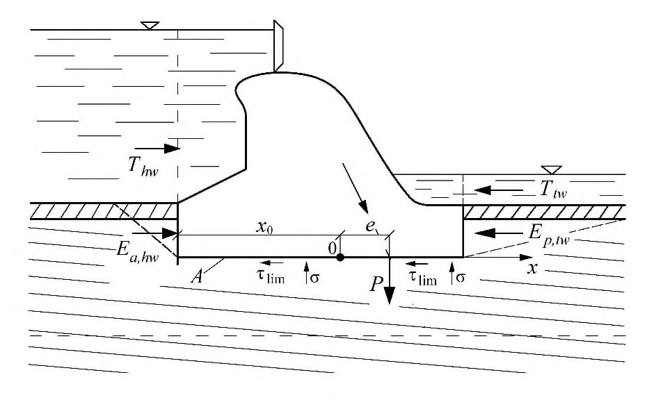
Нормальные контактные напряжения σ определяются в этом случае по формуле
где E - модуль деформации слоев грунта; эксцентриситет e и абсцисса x отсчитываются от оси, проходящей через точку 0, положение которой определяется формулой
где х 1 - расстояние, отсчитываемое от края подошвы. Значения m , tg и m c , определяются по формулам:
б) при однородной слоистости грунтов на протяжении подошвы сооружения, т.е. при одинаковой доле каждого слоя на разных участках ширины подошвы, значение m , tg определяется по формуле
при этом значение m c , определяется по формуле (Ж.5);
- в) если простирание вертикальных слоев грунтов основания ориентировано вдоль направления сдвига или угол между ними менее 10°, значения m , tg и m c , также определяются по формулам (Ж.6) и (Ж.5); г) если слои грунтов основания пологие с углом падения менее 10° (рисунок Ж.2), то m c , определяется по формуле (Ж.5), m , tg определяется по формуле
где I - момент инерции площади подошвы относительно оси подошвы.
Рисунок Ж.2 -Схема к расчету устойчивости сооружения на сдвиг по плоской поверхности основания с неоднородной поперечной слоистостью грунтов при малом угле падения слоев
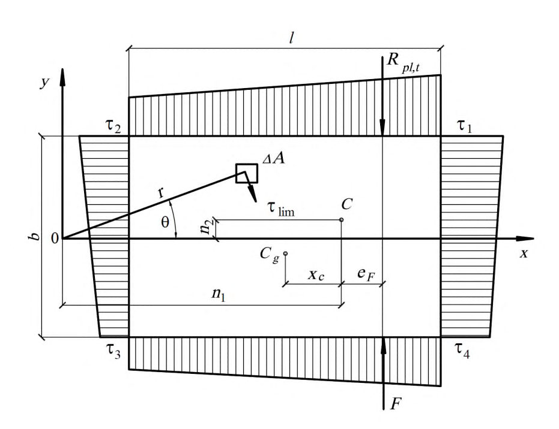
ИПриложение И. Расчет устойчивости сооружений при сдвиге с поворотом в плане
И.1 Расчет устойчивости сооружения рекомендуется производить с учетом его поворота в плане (в плоскости подошвы) в случае, если расчетная сдвигающая сила F приложена с эксцентриситетом lb 0,05 e F . При этом поворот сооружения рассматривается относительно точки 0 -центра поворота (рисунок И.1).
Cg -центр тяжести подошвы сооружения; С -центр тяжести эпюры распределенных по подошве предельных касательных напряжений; τ1, τ2, τ3, τ4 - предельные касательные напряжения
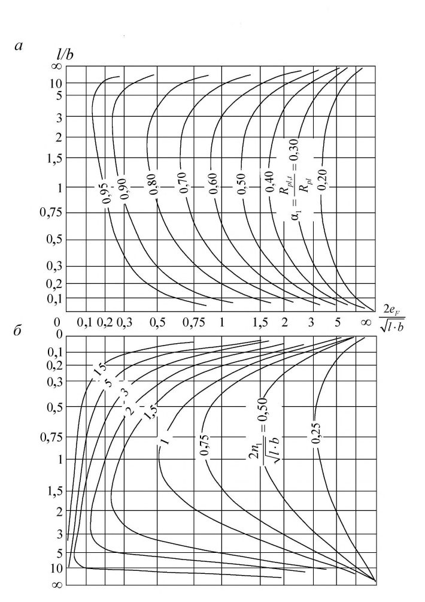
Рисунок И . 1 -Схема к расчету устойчивости сооружения при плоском сдвиге с поворотом в плане без учета отпора грунта
Расстояние хс определяется по формуле
В случае линейной зависимости касательных напряжений от координат и при прямоугольной форме подошвы сооружения расстояние хс определяется по формуле
И.2 При однородном основании и равномерном распределении нормальных напряжений эксцентриситет eF расчетной сдвигающей силы F рекомендуется определять относительно центра тяжести подошвы сооружения Cg . При неоднородном основании или неравномерном распределении напряжений эксцентриситет еF необходимо определять относительно центра тяжести эпюры распределенных по подошве сооружения предельных касательных напряжений τlim = σtgφI + с I .
Схема к расчету устойчивости сооружений при плоском сдвиге с поворотом в плане без учета отпора грунта с низовой стороны приведена на рисунке И.1.
И.3 При расчете устойчивости сооружений с прямоугольным или близким к прямоугольному очертанием подошвы и равномерным распределением τ lim предельную силу сопротивления сдвигу Rpl , t без учета отпора грунта рекомендуется определять по формуле
где α t -безразмерный коэффициент, определяемый по рисунку И.2, а ;
Rpl -предельная сила сопротивления при плоском сдвиге без поворота, определяемая в соответствии с 7.9.
Предельную силу сопротивления при смешанном сдвиге с поворотом сооружений на нескальных основаниях рекомендуется определять, используя коэффициент α t , полученный по рисунку И.2, а .
Рисунок И.2 -Графики для определения коэффициента α t ( a ) и координаты центра поворота n 1 ( б )
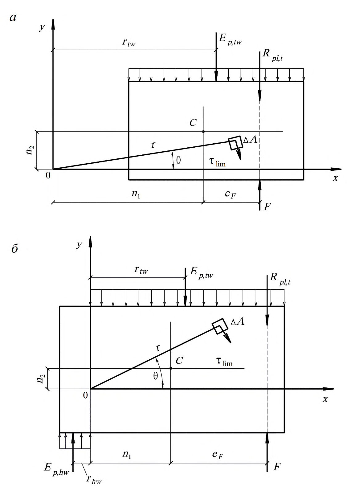
- И.4 При непрямоугольном очертании подошвы сооружения, неравномерном распределении τlim или при необходимости учета отпора грунта с низовой стороны (рисунок И.3) предельная сила сопротивления Rpl , t и координаты центра поворота определяются уравнениями равновесия:
где τlim - предельное касательное напряжение на элементарной площадке Δ А ;
- θ -угол между радиусом r , проведенным из центра поворота (с которым совмещено начало координат) до центра площадки Δ А , и осью, перпендикулярной направлению действующей силы F ;
rtw -расстояние, определяемое по рисунку И.3, а ; eF -эксцентриситет сдвигающей силы; n 1, n 2 -координаты центра поворота, определяемые по рисунку И.2, б .
СП 23.13330.2018
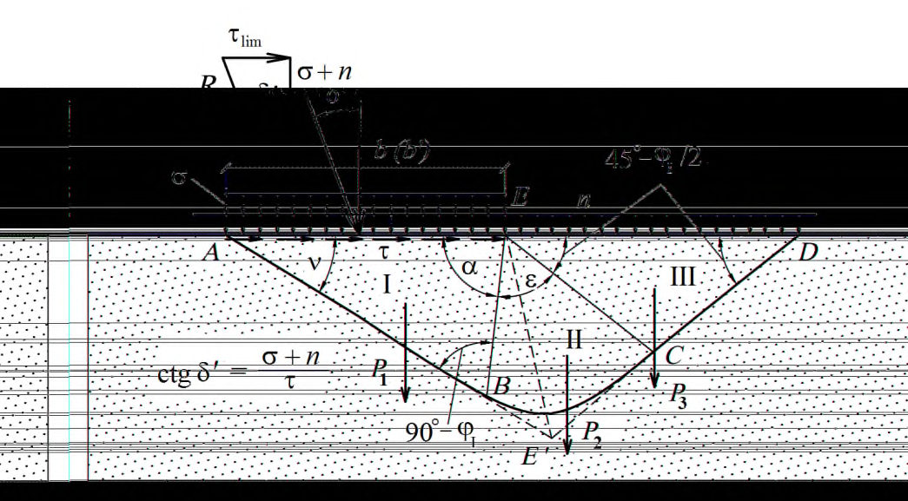
а -при расположении центра поворота вне подошвы сооружения; б -то же, в пределах подошвы сооружения
Рисунок И . 3 -Схемы к расчету устойчивости сооружений глубокого заложения при плоском сдвиге с поворотом в плане с учетом отпора грунта
Предельную силу сопротивления сдвигу Rpl , t и координаты полюса поворота определяют в следующей последовательности: из уравнений (И.3) и (И.4) исключается Rpl , t и из полученной системы двух уравнений подбором определяются координаты n 1 и n 2, после чего находится Rpl , t ; в случае когда центр поворота «0» оказывается внутри площади подошвы (при значительном эксцентриситете еF ) и отпор грунта возникает с обеих сторон сооружения (рисунок И.3, б ), необходимо использовать уравнение (И.2) и следующие уравнения:
где τlim , Δ А, γ'c, Ep,rw, rtw, r, n 1 , eF -см. формулы (И.3) и (И.4);
Ep , hw -расчетное значение горизонтальной составляющей отпора грунта с верховой стороны сооружения; rhw -расстояние, определяемое по рисунку И.3, б .
КПриложение К. Расчет устойчивости сооружений на нескальных основаниях по схемам глубинного и смешанного сдвигов
К.1 Для определения силы предельного сопротивления на участке сдвига с выпором Ru следует применять метод теории предельного равновесия. При этом в случае глубинного сдвига от наклонной нагрузки (рисунок К.1) определяется полная сила предельного сопротивления Ru. a б
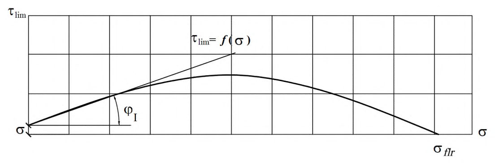
а -расчетная схема; б -график несущей способности основания; I, II, III -зоны призмы обрушения
Рисунок К . 1 -К расчету несущей способности основания и устойчивости сооружения при глубинном сдвиге
К.2 По этому методу профиль поверхности скольжения, ограничивающей область предельного состояния грунта основания, принимается в виде двух отрезков прямых АВ и DC , соединенных между собой криволинейной вставкой, описываемой уравнением логарифмической спирали (рисунок К.1, a ). Связь между углом наклона к вертикали равнодействующей внешних сил, равной по значению силе предельного сопротивления сдвигу Ru , и направлением треугольника предельного равновесия определяется углом ν, который вычисляется по формуле
При определении Ru сцепление грунта по своему действию принимается тождественным приложению внешней равномерно распределенной нагрузки в виде нормального
Значение τlim для заданных значений b 1 ( b' 1), σ m , φI , с I, γI определяется следующим образом: строится график несущей способности основания τlim = f (σ) для всей ширины b или расчетной ширины b' подошвы фундамента (рисунок К.1, б ). Построение этого графика производится по ряду значений δ ' (от δ' = 0 до δ' = φI) и соответствующим им значениям ; по найденному значению находятся все данные, необходимые для определения размеров призмы выпора ABCDA . Линия АВ проводится по углу , линия ЕВ -по углу α = 90° + φI - ; линия ЕС строится под углом 45 -
2 горизонтальной поверхности основания (рисунок К.2). Профиль ограничивающей поверхности скольжения для промежуточной зоны II строится по уравнению логарифмической спирали. Радиус r = EC находится по формуле
линия CD проводится через точку С под углом 2 45 -к горизонтальной поверхности ED.
После определения очертания призмы обрушения находятся значения весов Р 1, Р 2, Р 3 (с учетом взвешивающего действия воды) отдельных ее зон I, II, III (при наличии сцепления к силе Р 3 добавляется нагрузка nED , соответствующая приложенному к поверхности нормальному напряжению, а при наличии пригрузки интенсивностью q -нагрузка qED ) и расчетная сила предельного сопротивления Ru , определяемая по формуле
К.3 В случаях, для которых в таблице К.1 приведены значения коэффициентов несущей способности N γ , Nc, Nq и коэффициента K , позволяющего определять длину участка E ψ D на рисунке К.1, a ( E ψ D = Kb ), Ru определяется по формуле
где где γI , с I , b - см. 7.7.; q -интенсивность равномерной нагрузки на участке ED призмы выпора.
Таблица К.1
| Угол внутреннего | Обозначение | Значения коэффициентов при δ' (в долях φ I ) | Значения коэффициентов при δ' (в долях φ I ) | Значения коэффициентов при δ' (в долях φ I ) | Значения коэффициентов при δ' (в долях φ I ) | Значения коэффициентов при δ' (в долях φ I ) | Значения коэффициентов при δ' (в долях φ I ) |
|---|---|---|---|---|---|---|---|
| трения φ I | коэффициентов | 0 | 0,1φ I | 0,3φ I | 0,5φ I | 0,7φ I | 0,9φ I |
| 0° | N γ | 0,000 | |||||
| N c | 5,142 | ||||||
| N q | 1,000 | ||||||
| K | 1,000 | ||||||
| 2° | N γ | 0,066 | 0,071 | 0,073 | 0,067 | 0,055 | 0,037 |
| N c | 5,632 | 5,502 | 5,202 | 4,833 | 4,357 | 3,639 | |
| N q | 1,197 | 1,192 | 1,182 | 1,169 | 1,152 | 1,127 | |
| K | 1,094 | 1,036 | 0,910 | 0,765 | 0,588 | 0,336 | |
| 4° | N γ | 0,152 | 0,154 | 0,148 | 0,131 | 0,106 | 0,071 |
| N c | 6,185 | 6,025 | 5,659 | 5,216 | 4,655 | 3,830 | |
| N q | 1,433 | 1,421 | 1,396 | 1,365 | 1,325 | 1,268 | |
| K | 1,197 | 1,131 | 0,989 | 0,826 | 0,631 | 0,356 | |
| 6° | N γ | 0,264 | 0,261 | 0,242 | 0,209 | 0,165 | 0,108 |
| N c | 6,813 | 6,615 | 6,169 | 5,638 | 4,977 | 4,030 | |
| N q | 1,716 | 1,695 | 1,648 | 1,593 | 1,523 | 1,424 | |
| K | 1,310 | 1,235 | 1,075 | 0,893 | 0,677 | 0,378 | |
| 8° | N γ | 0,409 | 0,398 | 0,360 | 0,304 | 0,234 | 0,149 |
| N c | 7,528 | 7,284 | 6,740 | 6,103 | 5,325 | 4,241 | |
| N q | 2,058 | 2,024 | 1,947 | 1,858 | 1,748 | 1,596 | |
| K | 1,435 | 1,350 | 1,169 | 0,965 | 0,725 | 0,400 | |
| 10° | N γ | 0,597 | 0,574 | 0,507 | 0,418 | 0,315 | 0,193 |
| N c | 8,345 | 8,044 | 7,381 | 6,617 | 5,703 | 4,461 | |
| N | 2,167 | 2,006 | |||||
| q | 2,471 | 2,418 | 2,301 | 1,787 | |||
| K | 1,572 | 1,476 | 1,271 | 1,043 | 0,778 | 0,424 | |
| 12° | N γ | 0,841 | 0,800 | 0,691 | 0,558 | 0,408 | 0,242 |
| N c | 9,285 | 8,913 | 8,103 | 7,187 | 6,114 | 4,694 | |
| N q | 2,974 | 2,895 | 2,722 | 2,528 | 2,300 | 1,998 | |
| K | 1,724 | 1,615 | 1,383 | 1,127 | 0,833 | 0,449 | |
| 14° | N γ | 1,158 | 1,090 | 0,923 | 0,727 | 0,518 | 0,295 |
| N c | 10,371 | 9,910 | 8,920 | 7,821 | 6,560 | 4,940 | |
| N q | 3,586 | 3,471 | 3,224 | 2,950 | 2,636 | 2,232 | |
| K | 1,894 | 1,769 | 1,506 | 1,219 | 0,893 | 0,475 | |
| 16° | N γ | 1,573 | 1,466 | 1,214 | 0,934 | 0,647 | 0,354 |
| N c | 11,631 | 11,060 | 9,847 | 8,530 | 7,048 | 5,198 | |
| N q | 4,335 | 4,171 | 3,824 | 3,446 | 3,021 | 2,491 | |
| K | 2,082 | 1,940 | 1,642 | 1,319 | 0,958 | 0,502 | |
| 18° | N γ | 2,118 | 1,953 | 1,581 | 1,187 | 0,797 | 0,418 |
| N c | 13,104 | 12,394 | 10,907 | 9,321 | 7,582 | 5,472 | |
| N q | 5,258 | 5,027 | 4,544 | 4,029 | 3,464 | 2,778 | |
| K | 2,293 | 2,130 | 1,791 | 1,428 | 1,027 | 0,531 | |
| 20° | N γ | 2,837 | 2,587 | 2,047 | 1,497 | 0,974 | 0,489 |
| N c | 17,583 | 16,697 | 14,870 | 12,959 | 10,915 | 8,508 | |
| N q | 6,400 | 6,077 | 5,412 | 4,717 | 3,973 | 3,097 | |
| K | 2,530 | 2,343 | 1,957 | 1,548 | 1,102 | 0,562 | |
| 22° | N γ | 3,792 | 3,419 | 2,640 | 1,878 | 1,183 | 0,567 |
СП 23.13330.2018
| Угол внутреннего | Обозначение | Значения коэффициентов при δ' (в долях φ I ) | Значения коэффициентов при δ' (в долях φ I ) | Значения коэффициентов при δ' (в долях φ I ) | Значения коэффициентов при δ' (в долях φ I ) | Значения коэффициентов при δ' (в долях φ I ) | Значения коэффициентов при δ' (в долях φ I ) |
|---|---|---|---|---|---|---|---|
| трения φ I | коэффициентов | 0 | 0,1φ I | 0,3φ I | 0,5φ I | 0,7φ I | 0,9φ I |
| N c N q K | 16,883 7,821 2,797 | 15,774 7,373 2,582 | 13,522 6,463 | 11,218 5,532 1,679 | 8,812 4,560 1,183 | 6,067 3,451 0,595 | |
| 24° | N γ N c N q K | 5,070 21,570 9,604 3,099 | 4,517 20,178 8,984 2,851 | 2,141 3,400 17,392 7,744 2,346 | 2,350 14,605 6,503 1,823 | 1,429 11,769 5,240 1,271 | 0,653 8,638 3,846 0,629 |
| 26° | N γ N c N q K | 6,796 22,256 11,855 3,443 | 5,980 20,499 10,998 3,156 | 4,381 17,039 9,311 2,576 | 2,937 13,659 7,662 1,983 | 1,722 10,312 6,030 1,366 2,072 | 0,748 6,738 4,286 0,666 0,854 |
| 28° | N γ N c N q K | 9,149 25,804 14,720 3,837 | 7,943 23,575 13,535 3,504 | 5,655 19,261 11,241 2,834 | 3,671 15,148 9,055 2,160 | 11,188 6,949 1,471 | 7,106 4,779 0,705 |
| N γ N c N q | 12,394 30,141 18,402 | 10,608 27,295 16,759 | 7,326 21,888 13,637 | 4,596 16,867 10,738 | 2,491 12,168 8,025 | 0,972 7,500 5,330 | |
| 30° | 4,290 | 3,901 | 3,126 | 2,358 | 1,585 | 0,747 | |
| 32° | K N γ N c N q | 16,922 35,492 23,178 | 14,264 31,835 20,893 4,358 | 9,536 25,016 16,632 | 5,770 18,854 12,781 | 2,997 13,268 9,291 | 1,103 7,922 5,950 |
| 36° | K N γ N c N q | 4,814 32,530 50,588 | 26,507 44,399 33,258 | 3,458 16,492 33,329 | 2,578 9,212 23,904 | 1,710 4,359 15,914 | 0,792 1,417 |
| K N γ | 37,754 6,144 | 5,506 | 25,215 4,274 | 18,367 3,107 | 12,562 2,001 | 8,864 7,440 0,892 | |
| 40° | N c N q K | 66,014 75,314 64,196 | 51,714 64,419 55,054 7,095 | 29,605 45,816 39,444 5,367 | 15,093 31,008 27,019 3,792 | 6,427 19,360 17,245 | 1,819 9,967 9,363 |
| 45° | N γ N c | 8,012 177,620 133,880 | 131,120 110,080 | 66,272 72,119 | 29,516 44,729 | 2,362 10,783 25,385 | 1,008 2,503 |
| N q | 134,880 | 111,080 | 73,119 | 45,729 | 26,385 | 11,652 12,652 |
По найденным значениям Ru определяются σ и τlim, используемые для построения графика ( рисунок К.1, б ), по формулам:
К.4 При действии на сооружение только вертикальных сил предельная (разрушающая) вертикальная нагрузки на основание может быть определена указанным выше методом.
При этом построение призмы обрушения производится только для δ' = 0 и 2 45 I + = v .
К.5 При наличии в основании фильтрационного потока и необходимости учета фильтрационных сил Ru следует определять аналитически или графоаналитическим методом -построением многоугольника сил на базе равнодействующих весов каждой из трех зон призмы обрушения с учетом суммарных фильтрационных сил, действующих в каждой из них.
Направления и значения суммарных фильтрационных сил определяются по заданной гидродинамической сетке движения фильтрационного потока под сооружением.
Для этого после построения объемлющей поверхности скольжения по методу, изложенному в К.2, и построения гидродинамической сетки (методом электрогидродинамической аналогии (ЭГДА) или расчетным способом) каждая из зон I, II, III (рисунок К.1, a ) оказывается разбитой на ряд участков, для каждого из которых находится линия тока, проходящая через центр тяжести участка. Направление фильтрационной силы принимается по касательной к этой линии тоже в центре тяжести участка, а ее значение вычисляется по формуле
где γ w -удельный вес воды;
Im , i -средний градиент напора для данного участка;
Аi -площадь участка.
Значения суммарных фильтрационных сил Ф f ,1, Ф f ,2, Ф f ,3 определяются как геометрические суммы фильтрационных сил в пределах рассматриваемой зоны I, II или III.
К.6 При определении силы предельного сопротивления в случае сдвига с выпором при сейсмических воздействиях Ru , eq следует учитывать силы инерции, действующие на грунт в пределах призмы выпора и на пригрузку, определяемые по ускорению земной поверхности, соответствующему принятым расчетной сейсмичности и направлению сейсмических колебаний.
Если основание и пригрузка расположены ниже уровня воды, то по СП 14.13330 вес грунта основания и пригрузки принимается с учетом взвешивающего действия воды, а силы инерции определяются по плотности грунтов в водонасыщенном состоянии.
К.7 При расчете устойчивости сооружений по схеме смешанного сдвига сопротивление основания сдвигу следует принимать равным сумме сопротивлений на участках плоского сдвига и сдвига с выпором (рисунок К.2).
Силу предельного сопротивления при расчете устойчивости сооружений по схеме смешанного сдвига Rcom при поступательной форме сдвига рекомендуется определять по формуле
где σ т , tgφI, с I - см. К.2; b 1, b 2 -расчетные значения ширины участков подошвы сооружения, на которых происходят сдвиг с выпором и плоский сдвиг; τlim -предельное касательное напряжение на участке сдвига с выпором, определяемое по формуле (К.9) при b = bl ; l -размер стороны прямоугольной подошвы сооружения, перпендикулярной сдвигающей силе.
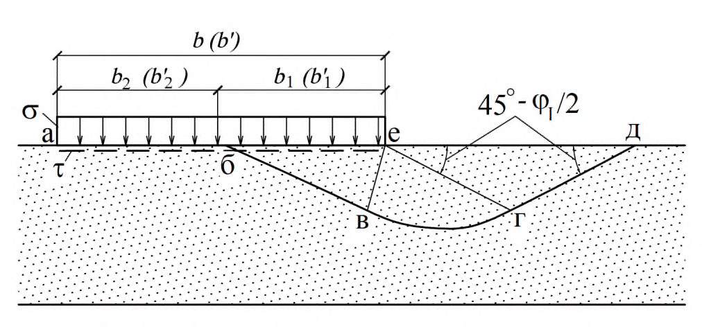
аб -участок плоского сдвига; бе -участок сдвига с выпором; бвгдб -зона выпора
Рисунок К . 2 -Схема к расчету несущей способности основания и устойчивости сооружения при смешанном сдвиге
Значение b 1 следует определять в зависимости от σmax (с низовой стороны) по формуле
где σ cr = N o b γI для грунтов с коэффициентом сдвига tgφI > 0,45 и σ cr = 0 при tgψ1 < 0,45; σ flr -среднее нормальное напряжение в подошве сооружения, при котором происходит разрушение основания от одной вертикальной нагрузки (см. рисунок К.1, б );
N o -см. 7.7.
При эксцентриситете ер нормальной силы р в сторону нижнего бьефа в формуле (К.11) вместо b , b 1 и b 2 следует принимать b , b * 1 и b * 2 (где b * = b - 2 еp , а b b b b * 1 * 1 = ); эксцентриситет в сторону верхнего бьефа в расчетах не учитывается.
При смешанном сдвиге с поворотом в плане предельную сдвигающую силу принимают равной α tRcom , где α t определяют по 7.10 и приложению И.
К.8 При прямоугольной подошве сооружения длиной l и шириной b сила предельного сопротивления основания определяется по формуле
b * , tgφI, c I - см. 7.7; N γ , Nc и Nq - см. И.3.
К.9 Для определения вертикальной составляющей несущей способности в недренированных условиях при постоянной изотропной прочности на сдвиг сu ,I можно использовать следующую общую формулу
где Nc = 5,14 -коэффициент несущей способности; cu ,I -расчетное значение сопротивления недренированному сдвигу;
( ) l b i s ca ca * 2 0,2 1 -= -коэффициент формы;
FH 1 = FH -RH 0 RHP -горизонтальная нагрузка на площадь А * ;
FH -полная горизонтальная нагрузка на фундамент;
RH 0 -сопротивление сдвигу вне А ;
RHP -горизонтальная составляющая равнодействующей активного и пассивного давления на фундамент;
d -заглубление фундамента.
ЛПриложение Л. Определение контактных напряжений методом внецентренного сжатия
По методу внецентренного сжатия нормальные и касательные контактные напряжения при неплоской подошве сооружения (рисунок Л.1) определяются по формулам:
где N -равнодействующая сил, приложенных к сооружению; М = Ne -момент этой силы относительно центра тяжести подошвы (рисунок Л.1); А , I 0 -площадь подошвы и ее центральный момент инерции; r -радиус-вектор рассматриваемой точки K подошвы относительно центра 0; δ -угол между направлением равнодействующей N и нормалью к подошве в точке K ; β -угол между нормалями к подошве в точке K и к радиусу-вектору этой точки.
При плоской подошве сооружения контактные напряжения определяются по формулам
где x -расстояние от рассматриваемой точки до центра тяжести подошвы; Iy -момент инерции площади подошвы.
Рисунок Л . 1 -Схема к определению нормальных и касательных контактных напряжений при ломаной подошве сооружения
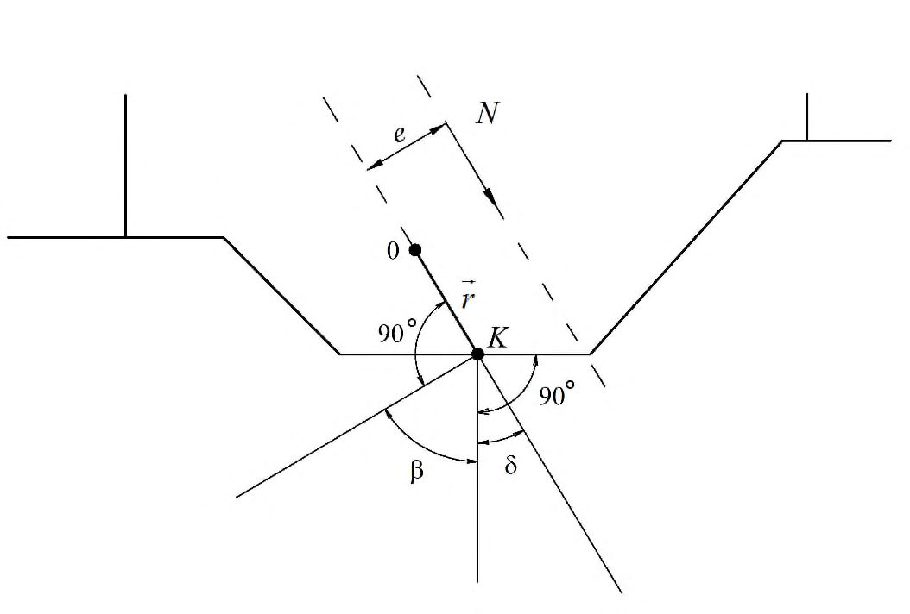
МПриложение М. Определение контактных напряжений для сооружений на однородных песчаных основаниях методом экспериментальных эпюр
Нормальные контактные напряжения методом экспериментальных эпюр определяются: в случае, когда равнодействующая всех внешних сил Р проходит через центр подошвы сооружения, по формуле
где σ x -нормальное контактное напряжение в точке, находящейся на расстоянии x от центра подошвы сооружения; x -относительное нормальное контактное напряжение в соответствующей точке, определяемое по таблице М.1 в зависимости от = b N m (ниже уровня воды удельный вес грунта следует принимать с учетом взвешивающего действия воды); σ т -среднее нормальное контактное напряжение по подошве сооружения, равное
в случае внецентренного приложения к основанию равнодействующей внешних сил и отсутствия растягивающих напряжений по контакту подошвы фундамента с основанием
где σ x , x , х -см. формулу (М.1); ер -эксцентриситет приложения нагрузки, нормальной к плоскости подошвы сооружения; mk -коэффициент, определяемый по таблице М.2.
Примечание - При подстановке в формулу (М.2) ер и x следует учитывать их полярность относительно начала координат, принимаемого в центре подошвы сооружения.
Таблица М.1 -Значения x
| x 2 | x при N σ | x при N σ | x при N σ | x при N σ | x при N σ | x при N σ | x при N σ |
|---|---|---|---|---|---|---|---|
| b | 0,5 | 1 | 2 | 4 | 6 | 8 | 10 |
| 0 | 1,18 | 1,22 | 1,28 | 1,34 | 1,38 | 1,40 | 1,42 |
| 0,1 | 1,17 | 1,21 | 1,27 | 1,32 | 1,36 | 1,38 | 1,40 |
| 0,2 | 1,16 | 1,20 | 1,25 | 1,29 | 1,33 | 1,35 | 1,36 |
| о,3 | 1,14 | 1,17 | 1,20 | 1,24 | 1,27 | 1,29 | 1,30 |
| 0,4 | 1,11 | 1,14 | 1,15 | 1,18 | 1,20 | 1,22 | 1,23 |
| 0,5 | 1,08 | 1,09 | 1,09 | 1,10 | 1,11 | 1,12 | 1,12 |
| 0,6 | 1,03 | 1,02 | 1,01 | 1,00 | 0,99 | 0,98 | 0,98 |
| 0,7 | 0,98 | 0,95 | 0,91 | 0,87 | 0,85 | 0,83 | 0,82 |
| 0,8 | 0,92 | 0,87 | 0,80 | 0,74 | 0,70 | 0,67 | 0,65 |
| 0,9 | 0,82 | 0,74 | 0,68 | 0,59 | 0,50 | 0,46 | 0,43 |
| 1,0 | 0 | 0 | 0 | 0 | 0 | 0 | 0 |
Таблица М.2 -Значения коэффициента тk
| Число моделирования N σ | 0,5 | 1 | 2 | 4 | 6 | 8 | 10 |
|---|---|---|---|---|---|---|---|
| Коэффициент m k | 1,221 | 1,296 | 1,345 | 1,402 | 1,464 | 1,501 | 1,628 |
НПриложение Н. Определение осадки основания методом послойного суммирования
Н.1 Осадка основания определяется методом послойного суммирования в соответствии с 11.6.1. Дополнительные вертикальные напряжения в середине i -го слоя грунта принимаются равными полусумме указанных напряжений на верхней zi -1 и нижней zi границах слоя.
Н.2 Значение дополнительного вертикального напряжения на глубине zi основания от нагрузок р и пригрузок q определяется по формуле
где р -среднее фактическое вертикальное давление на грунт по подошве фундамента; α1 ,i -коэффициент, учитывающий изменение по глубине дополнительного давления в грунте и принимаемый по таблице Н.1 для прямоугольной формы подошвы в зависимости от относительной глубины b z m i 2 = и отношения сторон b l , для круглой -от отношения
α2 ,i -коэффициент, определяемый для прямоугольной пригрузки по рисунку Н.1, а , а для треугольной -по рисунку Н.1, б .
Допускается пригрузку аппроксимировать прямоугольной, треугольной или трапецеидальной эпюрой в зависимости от формы засыпаемого котлована. В последнем случае осадки складываются из определенных для прямоугольной и треугольной нагрузок.
Таблица Н.1
| Относительная глубина m | Значения коэффициента α 1 ,I для фундаментов | Значения коэффициента α 1 ,I для фундаментов | Значения коэффициента α 1 ,I для фундаментов | Значения коэффициента α 1 ,I для фундаментов | Значения коэффициента α 1 ,I для фундаментов | Значения коэффициента α 1 ,I для фундаментов | Значения коэффициента α 1 ,I для фундаментов | Значения коэффициента α 1 ,I для фундаментов |
|---|---|---|---|---|---|---|---|---|
| круглых | прямоугольных с отношением сторон l/b | прямоугольных с отношением сторон l/b | прямоугольных с отношением сторон l/b | прямоугольных с отношением сторон l/b | прямоугольных с отношением сторон l/b | прямоугольных с отношением сторон l/b | прямоугольных с отношением сторон l/b | |
| 1 | 1,4 | 1,8 | 2,4 | 3,2 | 5 | 10 | ||
| 0,0 | 1,000 | 1,000 | 1,000 | 1,000 | 1,000 | 1,000 | 1,000 | 1,000 |
| 0,4 | 0,949 | 0,960 | 0,972 | 0,975 | 0,976 | 0,977 | 0,977 | 0,977 |
| 0,8 | 0,756 | 0,800 | 0,848 | 0,866 | 0,875 | 0,879 | 0,881 | 0,881 |
| 1,2 | 0,547 | 0,606 | 0,682 | 0,717 | 0,740 | 0,749 | 0,754 | 0,775 |
| 1,6 | 0,390 | 0,449 | 0,532 | 0,578 | 0,612 | 0,630 | 0,639 | 0,642 |
| 2,0 | 0,285 | 0,336 | 0,414 | 0,463 | 0,505 | 0,529 | 0,545 | 0,550 |
| 2,4 | 0,214 | 0,257 | 0,325 | 0,374 | 0,419 | 0,449 | 0,470 | 0,477 |
| 2,8 | 0,165 | 0,201 | 0,260 | 0,304 | 0,350 | 0,383 | 0,410 | 0,420 |
| 3,2 | 0,130 | 0,160 | 0,210 | 0,251 | 0,294 | 0,329 | 0,360 | 0,374 |
| 3,6 | 0,106 | 0,130 | 0,173 | 0,209 | 0,250 | 0,285 | 0,320 | 0,337 |
| 4,0 | 0,087 | 0,108 | 0,145 | 0,176 | 0,214 | 0,248 | 0,285 | 0,306 |
| 4,4 | 0,073 | 0,091 | 0,122 | 0,150 | 0,185 | 0,218 | 0,256 | 0,280 |
| 4,8 | 0,062 | 0,077 | 0,105 | 0,130 | 0,161 | 0,192 | 0,230 | 0,258 |
| 5,2 | 0,052 | 0,066 | 0,091 | 0,112 | 0,141 | 0,170 | 0,208 | 0,239 |
| 5,6 | 0,046 | 0,058 | 0,079 | 0,099 | 0,124 | 0,152 | 0,189 | 0,223 |
| 6,0 | 0,040 | 0,051 | 0,070 | 0,087 | 0,110 | 0,136 | 0,172 | 0,208 |
Примечание -При определении дополнительных вертикальных напряжений на глубине zi от подошвы фундамента по вертикали, проходящей через угловую точку прямоугольного фундамента, значения коэффициентов α1, i , определенные по настоящей таблице, умножаются на 0,25. а -для прямоугольной пригрузки; б -
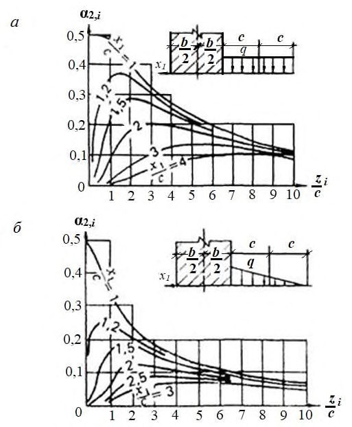
Рисунок Н . 1 -Графики для определения коэффициента α2, для треугольной пригрузки i
ППриложение П. Определение осадки основания при среднем давлении под подошвой сооружения, превышающем расчетное сопротивление грунта
Осадку основания при среднем давлении под подошвой сооружения р , превышающем расчетное сопротивление грунта основания R , рекомендуется определять по формуле
где Kр -коэффициент увеличения осадки при учете областей пластических деформаций, определяемый для однородного в пределах сжимаемой толщи грунта Нс при ширине сооружения b ≤ 20 м и Нс/b ≤ 2 по рисунку П.1, в других случаях -по результатам специальных исследований; s -осадка, определяемая по указаниям 11.6.1 и приложения П.
Рисунок П . 1 -График для определения коэффициента Kр
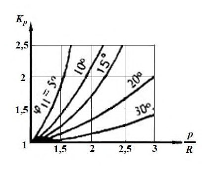
РПриложение Р. Определение степени первичной консолидации грунта
Степень первичной консолидации грунта U 1 в расчетный момент времени от начала роста нагрузки определяется по рисунку Р.1, где 0 v c -коэффициент степени консолидации ( 2 0 0 0 / h t c c v v = ); 0 / t t t = ; t -расчетное время; t 0 -время роста нагрузки; h 0 -расчетная толщина слоя, определяемая по 7.7; cv -коэффициент консолидации грунта в вертикальном направлении.
В случае мгновенного приложения нагрузки степень первичной консолидации определяется по рисунку Р.1 для 0 01 0 , c v = и 2 0 / 100 h t c v t = .
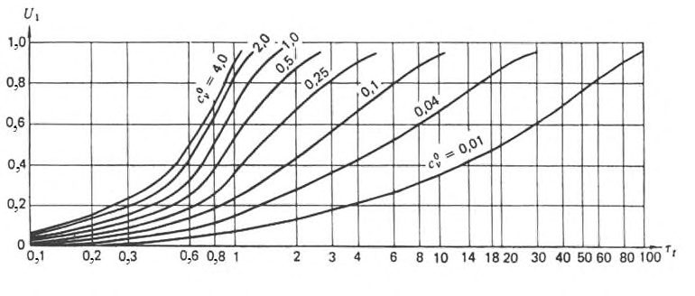
СПриложение С. Определение конечных горизонтальных перемещений гравитационных сооружений с горизонтальной подошвой на нескальных основаниях
С.1 Смещение сооружения определяется по формуле
где Q -суммарная горизонтальная нагрузка на 1 м длины сооружения (рисунок С.1); n -число слоев грунта в пределах смещаемой толщи Hdis ;
- Ф -коэффициент, определяемый по рисунку С.2 в зависимости от отношения глубины залегания подошвы i -го слоя грунта hi к полуширине сооружения b /2;
Edis -модуль деформации смещаемого слоя грунта.
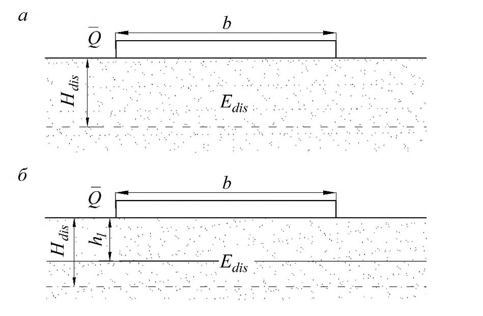
а
- при однородном основании; б
- при горизонтально-слоистом основании
Рисунок С . 1 -Схемы к определению горизонтальных смещений сооружений
Рисунок С . 2 -График для определения коэффициента Ф
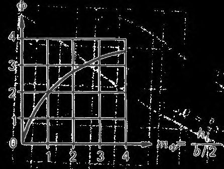
- С.2 В суммарную горизонтальную нагрузку Q следует включать все силы, действующие на сооружение в направлении сдвига, за вычетом сил отпора, принимаемых равными давлению грунта в состоянии покоя.
С.3 Модуль деформации грунта в смещаемом слое Edis , i принимается равным 1,2 Ei -для глинистых грунтов и 1,5 Ei -для песчаных грунтов, где Еi -см. приложение Д.
С.4 Расчетная глубина смещаемой толщи Hdis принимается равной
где Нс -глубина сжимаемой толщи, определяемая в соответствии с 11.6.2.
ТПриложение Т. Основные буквенные обозначения
Коэффициенты надежности, условий работы и сочетания нагрузок
γ с -коэффициент условий работы; γ g -коэффициент надежности по грунту; γ n -- коэффициент надежности по степени ответственности сооружения; γ lc -коэффициент сочетания нагрузок; γ с -коэффициент условий работы, учитывающий зависимость реактивного давления грунта с низовой стороны сооружения от горизонтального смещения сооружения при потере им устойчивости.
Характеристики грунтов
Xn -нормативное значение характеристики;
X -расчетное значение характеристики; α -доверительная вероятность расчетных значений; ρ -плотность; ρ d -плотность скелета грунта; ρ s -плотность частиц;
IL -показатель текучести; γ -удельный вес; e -коэффициент пористости; а -коэффициент уплотнения; c -удельное сцепление; φ -угол внутреннего трения;
Е -модуль деформации;
G -модуль сдвига; v -коэффициент поперечной деформации (Пуассона); k -коэффициент фильтрации; сv -коэффициент консолидации;
0 v c - коэффициент степени консолидации;
U 1 -степень первичной консолидации;
U 2 -степень вторичной консолидации; µ1, µ -коэффициенты упругой и гравитационной водоотдачи; δ crp , δ1, crp -параметры ползучести; q -коэффициент водопоглощения;
Icr , Iest -градиенты напора соответственно критический и действующий; υ cr , υ est - критическая и действующая скорости фильтрации; t fl -показатель гибкости фундамента;
Rc ( Rc , m ) -предел прочности на одноосное сжатие отдельности (массива) скальных грунтов;
Rt ( Rt , m ) -предел прочности на одноосное растяжение отдельности (массива) скальных грунтов;
Rcs , m -предел прочности на смятие массива скального грунта; υ p , υ s -скорости распространения продольных и поперечных волн в скальном массиве.
Нагрузки, напряжения, сопротивления
F 0 -обобщенная расчетная сдвигающая сила;
- R 0 -обобщенная расчетная сила предельного сопротивления грунта;
- Rpl -расчетное значение предельного сопротивления грунта при плоском сдвиге;
- Rg -расчетные силы сопротивления свай, анкеров;
- Ru -расчетная сила предельного сопротивления основания на участке сдвига с выпором;
- Ep , tw -расчетное значение горизонтальных составляющих пассивного давления грунта с низовой стороны сооружения;
- Ea , hw -расчетное значение горизонтальных составляющих активного давления грунта с верховой стороны сооружения;
- Ф -суммарная фильтрационная сила;
- q -равномерно распределенная вертикальная пригрузка;
- σ -нормальное напряжение;
- τ -касательное напряжение;
- u -избыточное давление в поровой воде;
- σ z -вертикальное нормальное напряжение в грунте;
- σ z , g -то же, от собственного веса грунта;
- σ z , p -то же, дополнительное от внешней нагрузки;
- N σ -число моделирования.
Деформации оснований и сооружений
- S -совместная деформация основания и сооружения;
Su -предельное значение совместной деформации основания и сооружения;
- St -нестабилизированная совместная деформация основания и сооружения;
- s , u , i -соответственно осадка, горизонтальное перемещение и крен сооружения.
Геометрические характеристики
- l -длина сооружения; b -ширина сооружения; h -высота сооружения; А -площадь подошвы сооружения; е -эксцентриситет; r -радиус; h -толщина слоя грунта; hc -высота консолидируемого слоя; Нс -глубина сжимаемой толщи; Hdis -толщина смещаемого слоя; α j , d -угол падения трещины; α j , l -угол простирания трещины; l j -длина трещины; bj -ширина раскрытия трещины.
Библиография
- [1] СП 11-114-2004 Инженерные изыскания на континентальном шельфе для строительства морских нефтегазопромысловых сооружений \_\_\_\_\_\_\_\_\_\_\_\_\_\_\_\_\_\_\_\_\_\_\_\_\_\_\_\_\_\_\_\_\_\_\_\_\_\_\_\_\_\_\_\_\_\_\_\_\_\_\_\_\_\_\_\_\_\_\_\_\_\_\_\_\_\_\_\_\_\_\_\_\_\_\_\_\_